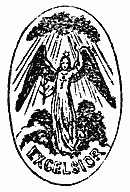

http://www.aloha.net/~mikesch/ |
A
DOCTRINAL CATECHISM;
WHEREIN DIVERS POINTS OF
CATHOLIC FAITH AND PRACTICE ASSAILED BY
MODERN HERETICS
ARE SUSTAINED BY AN APPEAL TO THE
HOLY SCRIPTURES, THE TESTIMONY OF THE ANCIENT
FATHERS, AND THE DICTATES OF REASON
ON THE BASIS OF SCHEFFMACHER'S CATECHISM.
BY THE
R E V. S T E P H E N K E E N A N.
THIRD AMERICAN EDITION, REVISED AND CORRECTED,
CONFORM
ABLY TO THE DECREES OF THE COUNCIL OF THE VATICAN.
"Try all things, and hold fast that which
is good."—THESS. V. 21
IMPRIMATUR:
+ JOHN CARDINAL McCLOSKEY
ARCHBISHOP OF NEW YORK

P
. J. KENEDY AND SONS3 AND 5 BARCLAY STREET NEW YORK
APPROBATIONS
OF THE
ORIGINAL EDINBURGH EDITION.
A Concise Summary of Arguments, Authorities, and Proofs, in support of the Doctrines, Institutions, and Practices of the Catholic Church, is here presented in a very convenient form, as an additional antidote against the unceasing effusions of antagonist Ignorance and Misrepresentation. The Believer will be hereby instructed and confirmed in his Faith, and the sincere Searcher after Truth will here find a lucid path opened to conduct him to its sanctuary. There is much important matter condensed in these unpretending pages. The work, I trust, will meet with the notice it deserves, and the good be thus effected which the zealous and talented author has had in view in its publication.
+ ANDREW, BISHOP OF CERAMIS,
Vicar Apostolic of Eastern Scotland.
EDINBURGH, 10th April, 1846.
I have read, with much pleasure, a Catechism by the Rev. Stephen Keenan. As it contains a well-reasoned defence of the Catholic faith, and clear and satisfactory solutions of the usual objections adduced by separatists, I deem that the study of it will be most useful to all Catholics; and, therefore, I earnestly recommend it to the Faithful in the Northern District of Scotland.
+ Jas. Kyle, V A N.D.S.
PRESHOME, 15th April, 1846.
IMPRIMATUR.
+ JOHN, CARDINAL McCLOSKEY, Archbishop of New York.
Copyright, T. W. STRONG, 1876.
PREFACE
Discussions of the various questions of religion have ever been, and still are, matters of inevitable necessity, because Christianity and its dogmas have ever been, and still are, impugned by those victims of passion, prejudice, and error—the schismatic, heretic, and infidel. The true minister of Jesus Christ is thus compelled to make religious controversy an important part of his studies, as it is only by this mean he can, and with the help of God's grace, bring back these unfortunate wanderers to the fold of Christ. If angry feelings are sometimes engendered by these discussions, the fault lies with those who first raised the standard of rebellion against the authoritative teaching of the lawful pastors, whom Christ commissioned to feed his lambs and his sheep, with the bread of life and the Word of God. To elucidate truth, is the the object of free discussion; and to all who are properly qualified for the task, ample scope should be given. Catholics as regards their doctrines, court publicity; because they are fully aware, the more these are tried and examined, the stronger will be the conviction of their truth in the mind of the sincere inquirer. Of this, ample proof will be found in the multitude of late conversions,—conversions, be it observed, not of the vulgar and illiterate, but of the brightest ornaments of the age,—not of the interested and worldly, but of men who proved themselves ready to
[pg. 4]
sacrifice every worldly advantage for the sake of conscience and truth,—conversions, not of the victim of passion, as is the case when a stray Catholic becomes Protestant, but of men whose minds are pure and their hearts chaste, whose high and spotless morality is beyond all suspicion. Such are the men, who, bursting the fetters in which they had been hitherto bound, and tearing to pieces the thick veil of early prejudice by which the Protestant world is blindfolded, have boldly dared to act upon the Protestant principle of examining for themselves, and having made that examination, not without hearty commendations of themselves to heaven, have, of late, added to the glory of the Redeemer by their piety and learning, and, by their numbers, extended the pale of his true Church.
With many Protestants it is vain to argue; their preconceived notions of Catholic doctrine are such, as to prevent the infusion of the smallest portion of Catholic truth. Their teachers have been for three hundred years employed, not in refuting the true Catholic doctrine, but in inventing calumnies against, and publishing misrepresentations of Catholicism, and then amusing their audiences with a refutation, not of the Catholic religion, but of these absurd Protestant forgeries, and "ingenious devices," which they themselves have fraudulently palmed upon the public as the genuine doctrines of the Church of Rome.
Even with those who do not know the rules of discussion, and whose minds are imbued with something like honest fairness, controversy will be endless, if the Scripture alone be appealed to. That Divine Book does not and cannot explain itself, and, accordingly, each disputant will interpret to suit his own views; hence the bitter discussions, and interminable contradictions, observable[pg. 5]
among all those sects who have separated themselves from the Catholic Church. Tertullian, in his Book of Prescriptions, points out the proper method of refuting all heresies. He tells them to give proofs of their mission,—opposes to their novelties, the traditional doctrines of the Apostolic Churches,—and points to their jarring and contradictory systems, as invincible proofs that they are teachers of error. Thus, without any appeal to Scripture, had the first reformers been asked, Whence come ye? from whence have ye derived your mission? they would have looked very foolish, for to this question they could give no reply. They were not sent by any lawful pastor;—they had no mission from any Christian Church;—they and their novelties came fifteen hundred years too late to have any connection with the Apostles. In thus setting up as preachers, without any mission, they outraged the common sense of men. Christ himself, Moses, and the Apostles, preached new doctrines, but they treated men as rational beings,—they proved they were sent by God by the most evident and astonishing miracles; but the reforming ministers never wrought even one miracle to prove to their unfortunate followers that they were sent by God, or to stamp upon their new system the seal of heaven.
These self-commissioned men railed against tradition, because it condemned their novelties; but had they been asked to prove, without the aid of tradition, that even the very Bible, of which they boasted so much, was the Word of God, they would have been much embarrassed; for without the traditional argument, no man can prove the Bible to be God's Word. Hence, the very first principle of the Protestant Creed—rests solely on the authority of tradition; and, consequently, if, as they maintain, tradi-[pg. 6]
tional be only human doctrines, their whole creed is merely human, for it first principle, upon which all their other doctrines are grounded, rests solely, even according to themselves, upon the authority of men. Those who talk of the Bible as the only rule of faith, would do well to make this matter a subject of serious meditation; if they do, they will ask themselves, How can this be, since even the authenticity, integrity, and divinity of the Bible, can be proved only by a reference to tradition?
The heresies of modern times are as productive of sects and divisions as those which appeared in the days of Tertullian; they are daily spawning new religions, as perplexing and pestiferous as the parents from which they spring; and thus they will continue, shooting off in every direction, no matter how preposterous or absurd, until their very absurdity will force the pious and reasoning portion back into the bosom of the Catholic Church and drive the thoughtless and vainly-wise section of them into the broad, but dark and hopeless, path of infidelity.
On the subject of religious controversy, numerous works of deep research and intrinsic merit have of late issued from the press. Most of these, however, are so diffuse and expensive as to render them useless to many Catholics and Protestants, who, though anxious in their search after truth, have neither time nor education to enable them to read, nor money to procure, elaborate and expensive publications; others, again, are so compendious, and the arguments so abridged, that, when put into the hands of the superficial Protestant, they fail to produce conviction. Some others, in fine, there are, the scope of which is rather to instruct Catholics in the faith and practices of their religion, than to disabuse the Protestant mind of its prejudices and its errors. Among these works of real talent and merit, something seemed to the writer[pg. 7]
of the following pages to be still wanting—viz.: an epitome of controversy in a concise and cheap form, comprising the principle arguments on the various questions most commonly controverted, combining perspicuity with brevity and cheapness, that it might be within the reach of all Catholics who are called to give a reason for the faith that is in them, and of all sincere inquiring Protestants, whose occupations and circumstances preclude the possibility of their having recourse to more learned, more voluminous, and expensive works.
Whether this desideratum be supplied by the following little work, the public will soon determine. The plan and a portion of the groundwork are taken from a small controversial treatise by Father Scheffmacher, a German Jesuit, who held the chair of controversy at Strasburg about a century ago. It was at first the intention of the writer to give only a translation of Scheffmacher's Catechism, but, after a careful examination of it, he found some important articles treated with such brevity, that it was necessary to remodel and extend them, while others of vital interest were scarcely touched at all; indeed, such were the changes and additions which the writer was obliged to make, that the present may be considered an almost entirely new work. As the object of the writer is to do good, and not to acquire fame, he acknowledges his obligations, in some instances, to several Continental and some English Divines; and trusts that an indulgent public will find, in the solidity of the matter, an apology for all defects in manner and style. He also takes this opportunity of expressing his gratitude to the eminent Catholic prelate to whom the work, for the sake of security, was submitted; and feels assured, that nothing will be found in it unworthy of his Lordship's patronage. If, in fine, this publication promote the cause of[pg. 8]
religion and truth;—if, by being put into the hands of the Neophyte, it lighten the burden of his brother clergymen in the matter of controversial instruction;—if it aid in dispelling error,—in carrying conviction to the mind,—in bringing back to the unity of the one fold some of the many who have wandered from it,—the writer will consider his labors amply rewarded.
[pg. 9]
CONTENTS
RISE AND PROGRESS OF PROTESTANTISM.
Chap. i. Nature and author of Protestantism, p. 15.
Chap. ii. Causes of Luther's new Creed, p. 17.
Chap. iii. Luther required to retract by Cardinal Cajetan, p. 19.
Chap. iv. Luther judged by the Universities of Paris, &c, p. 21.
Chap. v. Luther cited by the secular power, p. 23.
Chap. vi. Luther's mode of supplying his Church with priests. p. 26.
LUTHER'S REFORMATION NOT THE WORK OF GOD.
Chap. i. God not the author of
the change of religion, p. 28.
Chap. ii. Luther's language to the Emperor and the Pope. p. 30.
Chap. iii. Luther's doctrine not of God, p. 32.
Chap. iv. Luther's schism not brought about by God, p. 34.
Chap. v. Means used by Luther not from God, p. 36.
Chap. vi. What then are Luther's followers obliged to? p. 38.
THE TRUE CHURCH OF JESUS CHRIST
Chap. i. To be saved we must be members of the
true Church—the true Church is that which was established eighteen hundred
years ago, and has existed unceasingly since that time, p. 40.
Chap. ii. In what Church do we find these two marks of truth? p.
43.
Chap. iii. Can Protestants tell where and what was the true
Church before Luther's time? p. 45.
Chap. iv. What of the Hussites and Vaudois? p. 47.
Chap. v. Chief marks of the true Church—its Unity, p. 50.
Chap. vi. Holiness, p. 55.
Chap. vii. Catholicity, p. 59.
Chap viii. Apostolicity, p. 66.
[pg. 10]
RULE OF FAITH.
Chap. i. Divine faith—its
qualities and necessity, p. 72.
Chap. ii. Faith of Protestants, not firm, but full of doubt, p.
75.
Chap. iii. They are not certain that their Bible is free of
error, p. 78.
Chap. iv. They are not certain as to the sense of the Bible, p.
81.
Chap. v. Qualities of the Catholic rule of faith, p. 84.
Chap. vi. Tradition as connected with the rule of faith, p. 86.
PROTESTANTS DO NOT ADHERE TO THE BIBLE ALONE.
Chap. i. They do not adhere to it
in the matter of God's commandments, p. 88.
Chap. ii. Neither do they on the subject of faith, p. 90.
Chap. iii. Nor do they on assurance, p. 92.
Chap. iv. They abide not by it as regards the Church, p. 95.
Chap. v. Nor on the subject of Scripture, p. 97.
Chap. vi. Additional proofs that they are not guided by
Scripture alone, p. 101.
OUR LORD JESUS CHRIST AND THE SAINTS.
Chap. i. Second Person of the
Blessed Trinity, p. 102.
Chap. ii. What we owe to Jesus Christ, p. 103.
Chap. iii. Catholics glorify Christ more than Protestants do,
p. 105.
Chap iv. Catholics do not abandon Christ by asking the prayers
of the saints, p. 107.
Chap. v. The invocation of saints is Scriptural, p. 109.
Chap. vi. The antiquity of this practice, p. 110.
COMMUNION UNDER ONE KIND.
Chap. i. Reception of both kinds not
necessary, p. 111.
Chap. ii. Salvation promised to the reception of one kind, p.
113.
Chap. iii. The early and pure Church often administered under
one kind only, p. 114.
Chap. iv. Text, Matth xvi.—"Drink ye all of this,"
answered, p. 116.
Chap. v. Additional reply to an obstinate Protestant, p. 118.
[pg. 11]
SACRIFICE OF THE MASS.
Chap. i. Essentials of the Mass
instituted by Christ, p. 120.
Chap. ii. Sacrifices of the Old Law, p. 125.
Chap. iii. Mass a true propitiatory sacrifice, p. 127.
PURGATORY.
Chap. i. General proofs of the
existence of a middle state, p. 130.
Chap. ii. Proofs from the New Testament, p. 132.
Chap. iii. Proofs from Tradition, p. 136.
JUSTIFICATION.
Chap. i. What is it?—How is
the sinner justified? p. 138.
Chap. ii. What part has faith in justification? p. 139.
Chap iii. Can one in mortal sin merit heaven? p. 142.
Chap. iv. What gives their value to good
works? p. 144.
Chap. v. Can man satisfy for his own sins? p. 146.
INDULGENCES.
What is an Indulgence?—the
arguments for Indulgences from Scripture, Fathers, and Councils, p. 149.
HEAD OF THE CHURCH.
Chap. i. Head of the Church, p.
153.
Chap. ii. Primacy of St. Peter, p. 156.
Chap. iii. What follows from the admission of this supremacy,
p. 159.
Chap. iv. All are bound to obey the Bishop of Rome, p. 161.
THE POPE IS NOT ANTICHRIST.
This injurious assertion of Protestants is contrary to Scripture, p. 163.
COUNCILS.
Chap. i. The different kinds of Councils and
the weight of their decisions, p. 166.
Chap ii. Number of general Councils and obedience due to them,
p. 169.
[pg. 12]
OBEDIENCE TO THE CHURCH.
Chap. i. Scripture commands this
obedience, p. 171.
Chap. ii. Object of the commandments of the Church, p. 173.
Chap. iii. Why she forbids meats, p. 175.
Chap. iv. Lent—who established it, 177.
Chap. v. Why was Lent established? p. 179.
Chap. vi. Reply to the scoffers at fasting and abstinence, p.
180.
ON THE SACRAMENTS.
BAPTISM.
There are seven sacraments, p.
181.
On the subject of infant baptism, a Protestant cannot refute an
Anabaptist- the matter, form and institution of baptism, p. 184.
CONFIRMATION.
It is a sacrament, p. 187.
Scriptural and traditional proofs, p. 188.
HOLY EUCHARIST.
A sacrament of the New Law, p.
190.
Promises of Christ regarding it, p. 195.
Christ declares what it is, p. 198.
He fulfils his promise by actually instituting it, p. 204.
Scriptural proofs continued, p. 209.
Reply to those who say that is means represents,
p. 217.
Transubstantiation, p. 224.
Christ permanently present in the Eucharist, 229.
Adoration of Christ in the Eucharist, p. 231.
SACRAMENT OF PENANCE AND CONFESSION.
The end of this sacrament, p.
232.
Confession not a modern invention, p. 235.
Confession a Divine Institution, p. 237.
Scriptural proofs for the practice of the first Christians, p.
240.
EXTREME UNCTION.
Scriptural proofs for the existence of this
sacrament, p. 243.
Testimony of the Fathers, p. 246.
[pg. 13]
HOLY ORDERS.
Orders a sacrament. Pastors by whom sent, p. 247.
MATRIMONY.
Matrimony a sacrament, p. 252.
Catholic Church does not forbid any one to marry, p. 257.
CEREMONIES OF THE CHURCH.
Why so many ceremonies, p. 259.
Blessing of inanimate things, p. 261.
Holy water, p. 263.
Sign of the Cross, p. 264.
Vestments, 266.
Mass in Latin, p. 268.
PICTURES AND IMAGES.
Their use—not forbidden by
Scripture—used by God's own order, p. 272.
Relics, p. 276.
Pilgrimages, p. 278.
VENERATION OF THE EVER-BLESSED VIRGIN.
Catholics do not adore the Blessed Virgin or
any creature, &c., p. 280.
Scriptural proofs of her pre-eminent dignity, p. 283.
Testimony of the ancient Church and early Fathers, p. 288.
On Persecution, p. 292.
On the Inquisition. p. 301.
The power of a General Council, or a Papal Consistory, in
temporal matters, p. 305.
On the reading of Scripture, p. 307.
Monks, Friars, and Nuns, p. 311.
Charge of ignorance made against Catholics, p. 313.
Charge of Uncharitableness, p. 321.
ON HERESY.
What is it? p. 324.
Peculiarities accompanying every heresy, p. 327.
Luther and Calvin as missionless as Arius, p. 330.
[pg. 14]
THE VARIOUS RULES OF FAITH.
Arian or Socinian rule exploded,
p. 335.
Baptists', Methodists', and Quakers' rule refuted, p. 335.
Lutheran and Calvinistic rule proved absurd and rejected, p.
338.
Many necessary truths not contained in Scripture, p. 347.
Neither the Old nor the New Law recognise the Scripture as the
only rule, p. 355.
Tradition to be admitted as well as Scripture, p. 357.
TRUE RULE OF FAITH, OR THE TEACHING OF THE
INFALLIBLE
CHURCH OF CHRIST.
Catholic rule of faith proved
from the Old Testament, p. 362.
The same proved from the New Testament, p. 368.
Reasons why the Catholic interpretation of the texts which bear
on this subject should be preferred to that of Protestants, p. 379.
Argument from reason on this subject, p. 385.
THE CHURCH CALLED CATHOLIC IS THE TRUE
INFALLIBLE
CHURCH OF CHRIST.
The proofs, p. 386.
The Protestant Church has none of the Scriptural marks of
truth, p. 388.
The Catholic Church has all the Scriptural marks of truth, p.
391.
[pg. 15]
THE
RISE AND PROGRESS OF
PROTESTANTISM,
DRAWN FROM THE WORKS OF LUTHER HIMSELF.
CHAPTER I.
Question. What is Protestantism?
Answer. A new religion, invented and propagated by a
man, named Martin Luther.
Q. In what year was Luther born?
A. In 1483.
Q. Where was he born?
A. In Eisleben, of Prussian Saxony.
Q. Of what Religion were his parents?
A. They were Catholics, as were all his ancestors.
Q. At the time Luther was born, what was the religion of
all Europe?
A. All believed what the Catholics believe at the present
time.
Q. Was Luther himself a Catholic for any time?
[pg. 16]
A. He was a Catholic until his
thirty-fifth year.
Q. What was his state of life?
A. He was a monk of the order of discalced
Augustinians.
Q. As such had he made religious vows?
A. At the age of twenty-three years, he made vows of
poverty, chastity, and obedience.
Q. Was he bound to keep these vows?
A. Without doubt, since he made them after mature
reflection, and of his own free will; because the Prophet says, (Ps. xlix:)
"Pay thy vows to the Most High;" and God himself says, (Num. ch. xxx:)
"If any man make a vow to the Lord, or bind himself by an oath, he shall
not make his word void, but shall fulfil all that he promised."
Q. Did Luther obey this command of God by keeping his
vows?
A. No; he violated all the three; he apostatized,—he
married Catherine de Boré, a nun, like himself under vows, and he utterly
disobeyed every ecclesiastical authority.
Q. Was this man in reality the founder of the Protestant
religion, and the first of that sect that ever appeared in the world?
A. Most certainly; for no minister, no congregation,
no body of Divines professing Protestant doctrines, was ever heard of until
his time.
[pg. 17]
Q. What inference do you draw from all
this?
A. That Protestantism cannot be the religion of
Christ; because, if the Church of Christ required reformation, a God of purity
and holiness would never have chosen such an immoral character—an apostate,
a wholesale vow-breaker, a sacrilegious seducer—for that purpose.
CHAPTER II.
Q. What induced Luther to attack the
ancient Catholic faith and invent a new creed?
A. Pride and jealousy. Pride Leo having granted an
Indulgence, Luther's pride was mortified, because the commission to preach
that Indulgence was given to the order of St. Dominic, and not to his own.
Q. To what did he allow himself to be driven by this
pride and jealousy?
A. To attack the doctrine of Indulgences itself.
Q. Would the Catholic Church have blamed Luther had he
merely attacked the abuses or avarice of individual Catholics?
A. No, certainly. He erred in this, that under
pretence of reprehending abuses, he assailed the true faith on the subject of
Indulgences.
[pg. 18]
Q. What was his next step?
A. He posted on the gates of the Church of Wittemburg,
ninety-five articles, which he wrote and which contained many things not in
accordance with the doctrines of the Church.
Q. Were these articles refuted?
A. They were, and with much ability, by some
Catholic Theologians, to whom Luther replied with a haughty insolence unworthy
of a Christian.
Q. What hypocritical pretences did Luther make in 1517,
during these disputes?
A. He pretended that he wished to teach nothing but
what was conformable to Scripture, to the Holy Fathers, and approved by the
Holy See. (T.1. Ger. Edit. Gen. p. 12.)
Q. What did he write to Jerome, Bishop of Brandenburg?
A. That he wished to decide nothing himself, and
that he wished to submit all his doctrines to the Church. (Ibid, p. 54.)
Q. What did he write to Pope Leo in 1518?
A. That he would listen to that Pope's decision as to an
oracle proceeding from the mouth of Jesus Christ. (Ibid, p. 58)
Q. What did he promise to his religious superiors?
A. That he would be silent, if his adversaries were
placed under the same restraint.
[pg. 19]
Q. What inference do you draw from all
this?
A. That he was either a hypocrite who did not intend
to fulfil his promises, or that he was quite satisfied of the truth of the
doctrines which he impugned, since otherwise he could not conscientiously
promise silence and obedience.
Q. What other consequences do you draw?
A. That a man swollen with pride, envy, jealousy—a
disobedient hypocrite—was not the person to be chosen by God to reform
abuses if any such existed.
CHAPTER III.
Q. What took place at Augsburg between
Luther and Cardinal Cajetan?
A. The Cardinal required of him, that he should
retract his errors, which Luther refused, appealing at the same time to the
most celebrated Universities of Germany, and to that of Paris, and pledging
himself most humbly to submit to their decision. (Ibid, p. 119 and p. 14.)
Q. Did he stand by that appeal?
A. No; he appealed a short time after to the Pope.
(Ibid, p. 122)
Q. Did he abide by this second appeal?
A. No; he next appealed "from the Pope
[pg. 20]
ill-informed," "to the Pope well-informed"
(Ibid, p. 205)
Q. Did he stop even here?
A. No; he then appealed to a General Council. (Ibid,
p. 351)
Q. Did he abide by this resolution to submit to the
decision of a General Council?
A. No; at the Diet of Worms, he declared flatly that
the would not submit his doctrine to any Council. (Ibid, pp. 448, 450, 452)
Q. What do you conclude from such conduct?
A. In the first place, that Luther must have
been extremely fickle to appeal to so many Judges, and to abide by the
decision of none. Secondly, that he knew his cause was bad and his
doctrine false, since he would not submit it even to the best judges. Thirdly,
that he must have been brimful of sinful pride and obstinacy, since he
preferred his own single judgment to that of the whole Christian world.
Q. But did not Luther promise to abandon his errors, if
any one would prove them such from Scripture?
A. Yes; but this was only an artifice to enable him
more freely to propagate them; because he well knew that the Scriptures may be
wrested into any, or every meaning; that one could give them any sense he
pleased, as
[pg. 21]
the Mormons, the Millerites, and other strange sects do at
the present day:—the Scripture is made to teach all sorts of contradictions.
Q. What was his real object in this subterfuge?
A. He wished to impose his monstrous errors on the
public, as truths bearing the sacred stamp of Scriptural authority. Had he
been sincere in his appeal, he would have said:—I shall leave it to the
Church to decide whether my doctrine is conformable to the Scripture or not.
CHAPTER IV.
Q. What judgment did the Universities,
to which Luther appealed, pronounce upon his doctrine?
A. They condemned his doctrine as false and
heretical. (Ibid, p. 539.)
Q. What Universities did so?
A. The Universities of Leipsic, Cologne, Louvain,
and Paris.
Q. Did Luther abide by their decision as he had
promised?
A. No; on the contrary, he poured forth a torrent of
invectives and insults against them; he called the University of Paris
"the mother of errors," "the daughter of Antichrist,"
"the gate of hell" (Ibid, p. 548.)
[pg. 22]
Q. What was the judgment of the Pope
to whom Luther appealed, and whose decisions he promised to receive, as if
they came from the mouth of Christ himself?
A. The Pope published a Bull, condemning forty-one
articles of Luther's doctrine.
Q. What does the Pope say in that Bull?
A. That he had done every thing he could to reclaim Luther,
but that all his paternal cares and advices had been unavailing. He give
Luther sixty days to retract, and orders his works to be formally burned at
the end of that period, should he persist in his errors.
Q. Did Luther submit?
A. No; he now renounces the authority to which he
had appealed; he writes against the Bull of his chief Superior, whom he had
vowed to obey; he denounces the Papal decision as the decision of Antichrist,
(Ibid, p. 345;) he publicly burns the Bull, along with the book of Decretals.
(Ibid, p. 353.)
Q. Had Luther previously written, in the most submissive
terms, declaring that he was willing to cast himself at the feet of his
Holiness?
A. Yes, (Ibid, p. 58;) but the moment the Pope
opposed him, he changed his language, declaring that not only the Bull, but
the Pope himself should be burned. (Ibid, p. 553.)
[pg. 23]
Q. Had Luther not written, a little
before, that his preservation or destruction depended entirely on the
absolution or condemnation of his holiness? (Ibid, p. 53.)
A. Yes; but he now declares that men must take up arms
against the Pope, the Cardinals and Bishops, and wash their hands in the blood
of these dignitaries. (Ibid. p. 60.)
Q. Had he not written, before this time, that the Pope
and the Catholic Church were the highest spiritual authority on earth? (Ibid,
p. 144.)
A. Yes; but he now teaches, that none but those who oppose
the Papal authority can be saved. (Ibid, p. 553.)
Q. What do you now think of Luther's conduct?
A. I can discover nothing in it but the spirit of
inconsistancy, doubt, error, and revenge, without even the slightest mark of
the spirit of God.
CHAPTER V.
Q. What did the secular power do to
suppress the rising heresy?
A. The Emperor Charles V. cited Luther to appear
before the Diet of Worms, and sought to reclaim him by the mildest means.
[pg. 24]
Q. What reply did Luther make to the
order of the Emperor?
A. He replied, that from the wording of the order,
one would suppose the Emperor to be either a maniac or a demoniac. (Ibid, p.
460.)
Q. Why was not Luther confined, to prevent him from
corrupting others, and from exciting disturbance?
A. He had received the assurance of a safe-conduct,
and the civil authorities could not break their promise. When, however, the
term of the safe-conduct had expired, the Emperor proscribed Luther as a
sectarian, cut off from the body of the Church.
Q. Whither did Luther then retire?
A. To the castle of Wittemburg, where he wrote the
most false and pernicious works.
Q. What was the effect of these works, in which he spoke
of nothing but "evangelical liberty?"
A. These works produced disturbances, sedition, and amongst
other evils, the German War of the Peasants, who committed every sort of
excess, declaring that the rich had no exclusive right to their property, that
every thing should be held in common, because in the 2nd chapter of the Acts,
it is said, that all property was common amongst the first Christians.
[pg. 25]
Q. Did other divisions and schisms
soon appear amongst the Lutherans?
A. Yes; each disciple of Luther thought he had as
good a right as his master to expound the Scripture according to his own
peculiar whim;—Carlostad, Zwinglius, Calvin, Muncer, Schwenckfeld, were of
this opinion. They interpreted for themselves, denounced their master, and set
up religions of their own.
Q. Did the thing called "religion," invented
by Luther, continue thus to give rise to new and different sects?
A. Yes; every year gave rise to a new spawn of
sectarians,—a short period produced thirty-four different sects; and
even to this day, the religion of Luther is as prolific of sects and
sectarians, as the putrid carcass is of insects or vermin. So true is it, that
when we once abandon truth, there can be no end to our wanderings in the mazes
of error; that when we once break the moorings which bind us to the rock of
truth, by the adoption of false principle, such as that of private
interpretation, we are only the prey of endless, ever-varying, erroneous human
opinions,—tossed to and fro on a wide ocean of contradictions and
contrarieties,—to-day on one track, to-morrow upon another,—certain of
nothing, but ultimate
[pg. 26]
shipwreck on the rock of infidelity, or the quicksands of
heresy and schism.
Q. What lesson do you learn from this portion of
Luther's conduct?
A. That the man who wantonly disobeys all authority,
both ecclesiastical and civil—the man who perverts the sacred Scripture, for
the purpose of exciting sedition and anarchy, and propagating evident heresy
and schism—cannot possibly be the ambassador of heaven.
CHAPTER VI.
Q. What means did Luther resort to for
the purpose of supplying his new church with priests, seeing that no bishop
could, or would ordain any of his followers?
A. He invented a new doctrine on that subject, a
doctrine never known in the Church till his time.
Q. What was that doctrine?
A. That all Christians—men, women, and children,
even infants—were truly and really priests, and that nothing was wanting to
them but presentation to a cure. (Ibid, pp. 64, 336, 369.)
Q. Upon what did he found this unheard of doctrine?
A. Upon that passage of St. Peter, "You are
[pg. 27]
a royal priesthood." "St. Peter," he
reasoned, "addresses this to all Christians, therefore all Christians are
priests." He might equally well have proved, from the same passage, that
all Christians are kings; since St. Peter declares that they are all ROYAL.
Hence, as all Christians are confessedly not kings, so neither are they all
priests. Hence, again, all the followers of Luther should be satisfied, that
their pretended pastors are only wolves in sheep's clothing, who entered the
fold not by the door but over the wall, since their pretended orders and
mission are founded only upon a passage of Scripture evidently perverted to
suit a purpose.
Q. What was Luther's next step after abolishing the true
priesthood amongst his followers?
A. He next abolished the true Sacrifice.
Q. What did he allege against the sacrifice of the Mass?
A. Various things which he learned from the devil,
as he himself declares.
Q. How does he express himself on that subject in his
book on the Mass? (Tom. vi, p. 82.)
A. "Having awoke," he says, "about midnight,
the devil commenced a dispute with me on the subject of the Mass."
Q. What did the devil say to him?
[pg. 28]
A. "Listen, most sapient
Doctor," said the father of lies: "during fifteen years you
have said Mass almost every day. What if all these acts have been only so many
acts of idolatry?"
Q. Did Luther hearken to the paternal advice of his
sable director?
A. He listened so well, that he allowed himself to
be persuaded that the devil was right and he was wrong, so that the enemy of
man came off victor; and though Luther in the same book calls the devil the
most artful and lying deceiver, he here chose to follow his advice rather than
that of the Church.
Q. What think you of all this?
A. One can hardly tell at which to be most
astonished,—at the open and brazen avowal of Luther, or the awful blindness
of those who follow a master, who, by his own account, received his training
and instruction in the school of Satan.
THE PROTESTANT PRETENDED REFORMATION
IS NOT THE WORK OF GOD
CHAPTER I.
Q. Can any one reasonably believe that the change in religion brought about by Luther is the work of God?
[pg. 29]
A. No one can believe it, unless he be
utterly ignorant of the true nature of religion, and very unlearned in the
matters of history.
Q. Why do you make this answer?
A. Because, in the first place, the author of the
Reformation is not a man of God; secondly, because his work is not the work of
God; thirdly, because the means which he used in effecting his purpose are not
of God.
Q. Why do you say Luther is not a man of God?
A. Because he has left us in his works abundant
proof, that if God saw a need for any reformation in his Church, such a man as
Luther would not be selected to carry God's will into effect.
Q. What have you to blame in Luther's works?
A. They are full of indecencies very offensive to
modesty, crammed with a low buffoonery well calculated to bring religion into
contempt, and interlarded with very many gross insults offered in a spirit
very far from Christian charity and humility, to individuals of dignity and
worth.
Q. Passing over his indecencies in silence, give us a
specimen of his buffooneries and insults. What does he say to the King of
England, replying to a book which the King had written against him? (Tom.
ii, p. 145.)
[pg. 30]
A. He calls the king "an ass,"
"an idiot," "a fool," "whom very infants ought to
mock."
Q. How does he treat Cardinal Albert, Archbishop and
Elector of Mayence, in the work which he wrote against the Bishop of Magdeburg?
(Tom. vii, p. 353.)
A. He calls him "an unfortunate little priest, crammed
with an infinite number of devils."
Q. What does he say of Henry, Duke of Brunswick? (Tom.
vii, p. 118.)
A. That he had "swallowed so may devils in eating and
drinking, that he could not even spit any thing but a devil." He calls
Duke George of Saxony, "a man of straw, who, with his immense belly,
seemed to bid defiance to heaven, and to have swallowed up Jesus Christ
himself." (Tom. ii, p. 90.)
CHAPTER II.
Q. Was Luther's language more
respectful, when he addressed the Emperor and the Pope?
A. No; he treated them both with equal indignities;
he said that the Grand Turk had ten times the virtue and good sense of the
Emperor,—that the Pope was "a wild beast," "a ravenous wolf,
against whom all Europe should rise in arms."
Q. What do you conclude from Luther's
[pg. 31]
insolent, outrageous, and libertine manner of speaking?
A. That he was not the man to be chosen by God to
reform his church; for his language is the strongest proof that he was
actuated, not by the spirit of God, but by the spirit of the devil.
Q. May not his party say, that they care little about
the manner of the man, if his doctrine be true,—that it is not upon
him, but upon the word of God, they build their faith?
A. If the Protestant doctrine be true, then God used
Luther as a chosen instrument to reestablish his true faith; but no reasonable
man can possibly believe the latter; therefore, neither can any reasonable man
believe that the Protestant is the true faith.
Q. May it not be objected that there were individual
pastors in the Catholic Church as worthless as Luther?
A. Yes; but all the pastors of the Catholic Church
were not so at one and the same time, whilst Luther, at the time we speak of,
was the first and only teacher of Protestantism. Besides, Christ himself give
an unanswerable reply to the objection, (Matth. xxiii:) "The Scribes and
Pharisees have sitten in the chair of Moses; all things therefore whatsoever
they shall say to you, observe and do, but according
[pg. 32]
to their works do ye not." Again, some Catholic pastors may have been bad men, but still they were the lawful ministers of God, having succeeded to lawfully commissioned predecessors; but Luther stood alone, he succeeded to none having lawful authority from whom he could derive a mission. In fine, whatever may have been the lives of some vicious Catholic pastors, they taught nothing new, their teaching was the same as that of the best and holiest ministers of the Church. Hence, there was no innovation in matters of faith, or principles of morality. But Luther was the first to teach a new doctrine, unknown in the world before his time.
CHAPTER III.
Q. We are now satisfied that the
author of Protestantism was not a man of God; show us that his undertaking was
not from God;—what did he undertake?
A. He undertook to show that the Church had fallen
into error, separated himself from her, and formed his followers into a party
against her.
Q. Could such an undertaking be from God?
A. No; for God has commanded us not to sit in
judgment upon the Church, but to hear
[pg. 33]
and obey her with respect; "and if he will not hear the
church, let him be to thee as the heathen and publican." (Matth. chap.
xviii.)
Q. Was it the particular "territorial" Church
of the Roman States, or the Universal Catholic Church, that Luther charged
with having erred?
A. It was the Universal Church he dared to
calumniate in this manner.
Q. How do you prove this?
A. Before the time of Luther, there was no Christian
society in the whole world which believed the doctrines afterwards taught by
Luther; consequently, he assailed not any particular sect or church, but the
faith of the whole Christian world.
Q. Are you quite sure, that it is incontestably true,
that no Christian body every believed, before Luther's time, the new doctrines
be began then to propagate?
A. So sure, that we have Luther's own authority for
it. His words are, (Tom. ii, p. 9, b.:) "How often has not my conscience
been alarmed? How often have I not said to myself:—Dost thou ALONE of all
men pretend to be wise? Dost thou pretend that ALL CHRISTIANS have been in
error, during such a long period of years?"
Q. What was it that gave Luther most
[pg. 34]
pain, during the time he meditated the introduction of
his new religion?
A. A hidden respect for the authority of the Church,
which he found it impossible to stifle.
Q. How does he express himself on this matter? (Tom.
ii, p. 5.)
A. "After having subdued all other considerations, it
was with the utmost difficulty I could eradicate from my heart the feeling
that I should obey the Church." "I am not so
presumptuous," said he, "as to believe, that it is in God's name I
have commenced and carried on this affair; I should not wish to go to
judgment, resting on the fact that God is my guide in these
matters." (Tom. p. 364, b.)
CHAPTER IV.
Q. What think you of the schism caused
by Luther? Can one prudently believe that it is the work of God?
A. No; because God himself has forbidden schism as a
dreadful crime: St. Paul (1st Corinth. chap. i. ver. 10) says: "Now I
beseech you, brethren by the name of our Lord Jesus Christ, that you all speak
the same thing, and that there be no SCHISMS among you; but that you be
perfect in the same mind and same judgment."
[pg. 35]
Q. What idea did Luther himself
entertain about schism before he blinded himself by his infuriated antipathy
to the Pope?
A. He declared, that it was not lawful for any
Christian whatever to separate himself from the Church of Rome.
Q. Repeat the very words of Luther touching this
important matter. (Tom. i, p. 116, b.)
A. "There is no question, no matter how important,
which will justify a separation from the Church." Yet, notwithstanding,
he himself burst the moorings which bound him to the Church, and, with his
small band of ignorant and reckless followers, opposed her by every means in
his power.
Q. What do you remark on historical examples of conduct
similar to this ever since the birth of Christianity?
A. That in every age, when a small body detached
itself from the Church, on account of doctrinal points, it has been
universally the case, that the small body plunged by degrees deeper and deeper
into error and heresy, and in the end, brought by its own increasing
corruption into a state of decomposition, disappeared and perished. Of this we
have hundreds of examples; nor can Lutherans or Calvinists reasonably hope,
that their heresy and schism can have any other end. They are
[pg. 36]
walking in the footsteps of those who have strayed from the fold of truth,—from the unity of faith; and they can have no other prospect, than the end of so many heresies that have gone before them.
CHAPTER V.
Q. Why have you said, that the means
adopted by Luther, to establish his new religion, were not of God? What were
those means?
A. That he might secure followers, he employed such means
as were calculated to flatter the passions of men; he strewed the path to
heaven—not like Christ with thorns, but like the devil—with flowers;
he took off the cross which Christ had laid on the shoulders of
men, he made wide the easy way, which Christ had left narrow and
difficult.
Q. Repeat some of Luther's improvements upon
the religion of Christ.
A. He permitted all who had made solemn vows of
chastity, to violate their vows and marry; he permitted temporal sovereigns to
plunder the property of the Church; he abolished confession, abstinence,
fasting, and every work of penance and mortification.
Q. How did he attempt to tranquillize the consciences he
had disturbed by these scandalously libertine doctrines?
[pg. 37]
A. He invented a thing, which he called
justifying faith, to be a sufficient substitute for all the above painful
religious works, and invention which took off every responsibility from our
shoulders, and laid all on the shoulders of Jesus Christ; in a word, he told
men to believe in the merits of Christ as certainly applied to them, and
live as they pleased, to indulge every criminal passion, without even the
restraints of modesty.
Q. How did he strive to gain over to his party a
sufficient number of presumptuous, unprincipled, and dissolute men of talent,
to preach and propagate his novelties?
A. He pandered to their passions and flattered their
pride, by granting them the sovereign honor of being their own judges in every
religious question; he presented them with the Bible, declaring that each one
of them, ignorant and learned, was perfectly qualified to decide upon every
point of controversy.
Q. What did he condescend to do for Philip, Landgrave of
Hesse, in order to secure his support and protection?
A. He permitted him to keep two wives at one and the
same time. The name of the second was Margaret de Saal, who had been maid of
honor to his lawful wife, Christina de Saxe. Nor was Luther the only Protestant
Doctor
[pg. 38]
who granted this monstrous dispensation from the law of God;
eight of the most celebrated Protestant leaders signed, with their own hand,
the filthy and adulterous document.
Q. Does the whole history of Christianity furnish us
with even one such scandalous dispensation derived from ecclesiastical
authority?
A. No; nor could such brutal profligacy be countenanced
even for a moment, seeing that the Scripture is so explicit on the subject.
Gen. ii, Matth. xix, Mark x, speak of two in one flesh, but never of three.
But Luther and his brethren were guided, not by the letter of the Scripture,
but by the corrupt passions, wishes, and inclinations of men. To induce their
followers to swallow the new creed, they gave them, in return, liberty to
gratify every appetite.
Q. If neither the author of
Protestantism, nor his work itself, nor the means he adopted to effect his
purpose, are from God, what are his followers obliged to?
A. They are obliged, under pain of eternal
damnation, to seek earnestly and re-enter the true Church, which seduced by
Luther, they
[pg. 39]
abandoned: If they be sincere, God will aid them in their
inquiry.
Q. What is the situation of the man who does not at once
acquit himself of this obligation?
A. He is the victim of mortal heresy and schism; the
thing he calls a church has no pastors lawfully sent or ordained; hence, he
can receive none of the Sacraments declared in Scripture to be so necessary to
salvation.
Q. What think you of those (they are many) who are at
heart convinced that the Catholic Church is the only true one, and are still
such cowards as to dread making a public profession of their faith?
A. "He," says our Saviour—Luke, ix
chap., 26 ver., "who shall be ashamed of me and of my words, of him the
Son of Man shall be ashamed, when he shall come in his majesty."
Q. What think you of those who are inclined to
Catholicism, but out of family considerations neglect to embrace it?
A. Our Saviour, in the 10th chap. of St. Matth.,
tells such, that he who loves father or mother more than God, is unworthy of
God.
Q. What say you to those who become Protestants, or
remain Protestants from motives of worldly gain or honor?
A. I say with our Saviour, in the 8th chap.
[pg. 40]
of St. Mark, "What will it avail a man, if he gain the whole world, and suffer the loss of his soul?"
ON THE TRUE CHURCH OF JESUS CHRIST.
CHAPTER I.
Q. Can anyone be saved who is not in
the true Church?
A. No; for those who are not in the true Church,—that
is, for those who are not joined, at least, to the soul of the Church*—there
can be no hope of salvation.
Q. What says Christ upon this subject? (St. Matth.,
chap. xviii.)
A. That he who will not hear the Church, is to be reputed
as a heathen.
Q. What says St. Cyprian? (Lib. de Unit. Eccl.)
A. "That he who has not the Church for his mother,
cannot have God for his father;" and the Fathers generally
say, "that as all who were not in the ark of Noah, perished in the
waters of the deluge; so shall all perish, who are without the pale of the
true Church."
Q. What is the meaning of the ninth article
* This question, as it regards Pagans and invincibly ignorant Christians will be treated afterwards.
[pg. 41]
of the Creed: "I believe in the holy Catholic
Church."
A. That every one should firmly believe, that to be
a member of the Catholic Church, is necessary in order to salvation.
Q. By what marks can you distinguish the true Church
from all other sects?
A. Particularly by two; 1st, Whatever pretends to be
the Church of Christ, must have been established, upwards of eighteen hundred
years ago, by Christ and his Apostles. 2d, It must have existed unceasingly
in the world from that time to the present.
Q. Why do you say that Christ's Church must have been
established more than eighteen hundred years ago?
A. Because is was Christ who established his own
true Church, and it is more than eighteen hundred years since he left the
world, to which he has never since visibly returned.
Q. Why do you say that a church, to be the true Church
of Christ, must have perpetually existed, without any interruption, since the
time Christ established it?
A. Simply, because Christ promised such perpetuity
to his Church.
Q. What are the words of Christ on this subject? Matth.,
xvi. chap., 18 ver.; and Matth. xxviii—20.
[pg. 42]
A. "Thou art Peter, and upon this
rock I will build by church, and the gates of hell shall not prevail against
it;" and, "Go, therefore, teach all nations . . . .and lo! I am
with you all days, even to the consummation of the world."
Q. How does St. Paul speak of the Church of
Christ? (1 Tim., iii. chap.)
A. He calls her the pillar and ground of truth.
Q. Were it true that the Church had in reality
fallen into idolatry, what inference would you draw from that fact?
A. That Christ was an unskilled architect and a
false prophet; because he must then have built his Church, not upon a rock,
but upon sand, like that stupid architect of whom he himself speaks—Matth.
chap. viii.; and because the gates of hell would then have really prevailed
against the Church in spite of his prediction.
Q. What conclusion do you draw from all this?
A. That Christ established a Church; that that
Church has existed in every age; that she exists at present; that she never
could, and never can, fall into any error dangerous to salvation on matters of
faith or morality; that every one, in fine, is bound with a firm and
[pg. 43]
unshaken faith to believe what she teaches, because her doctrines are, like those of her Divine Master, the same yesterday, to-day, and forever.
Q. In what Church do you find those
two certain marks of truth, of which you have spoken?
A. In the Catholic Church, and in no other.
Q. Was she established eighteen hundred years ago?
A. Yes; for no man has ever yet been able to date
her origin from any later period.
Q. Has she existed always, without even the least
interruption, during that time?
A. Yes; and no one has ever ventured to point out
such interruption, or how long, if it took place at all, such interruptions
lasted.
Q. How does St. Augustine establish this necessary
antiquity and perpetuity of the Church up to his own time? (Epist. a Gener.)
A. He proves it by the uninterrupted succession of Roman
Pontiffs, whose names he gives, one after the other, for the complete period,
to the number of thirty-nine.
Q. How many Popes have governed the Church from St.
Peter to the present Pontiff, Pius IX. inclusively.
A. Two hundred and fifty-seven.
[pg. 44]
Q. Are the two certain marks of the
true Church, of which you have spoken, discoverable in the Protestant Church?
A. No; neither in the Episcopal, nor Calvinistic
branch of it.
Q. How long is it since the Lutheran Church was
established?
A. About three hundred years;—Luther preached the
first Protestantism ever known in 1517; and Calvinism was first preached in
the year 1537.
Q. Where there no Lutheran or Calvinistic Churches
before these dates?
A. No; no such doctrines, nor churches, nor pastors,
nor sects, were ever known in any country prior to that time.
Q. How do you reason from these facts against your
adversaries?
A. Any church, to be the true Church, must have been
established eighteen hundred years ago; but the Episcopalian and Presbyterian
Churches are only of three hundred years duration; therefore, neither of them
can have any pretension to be the Church of Christ.
Q. May not your adversaries reply, that the Church of
the first four centuries believed as they do; that, at the end of that time,
the Church fell into superstition and idolatry; and that God judged it
necessary, after the
[pg. 45]
Church was drowned in error for eleven hundred years, to
send Luther and Calvin to reform her?
A. Yes, they may, and do advance many absurdities,
and this is one of them, which does not bring them out of their difficulties;
for Christ says, his Church cannot fail,—that the gates of hell shall never
prevail against her,—that his holy spirit shall teach her all truth FOR
EVER,—that he will abide with her ALL DAYS, even to the consummation of
the world. Therefore it is an infallible truth, that any Church to be the
Church of Christ, must have been established eighteen hundred years ago;
therefore, that Church once established, could never fail; therefore the
Protestant Church, the mere child of yesterday, cannot be the Church of
Christ; therefore her very foundation is nothing but error and blasphemy, for
she is built on the supposition, that Christ was either UNWILLING OR UNABLE to
keep his promise—a supposition which implies the most aggravated
blasphemy, tantamount to a denial of the Divinity of Christ.
Q. What question can you put to a Protestant, to which he can give no satisfactory reply?
[pg. 46]
A. Ask him where the true Church was
before the time of Luther and Calvin.
Q. May he not reply, that the Church was then invisible,
that there were Christians in every age who held the doctrines of Luther and
Calvin, but that they dared not openly profess their faith?
A. Yes; but this answer will satisfy no man of
ordinary understanding; for surely, it must be evident to every one who
thinks, that men who believed in their hearts one creed and professed another,
like these INVISIBLE Protestants, were only hypocrites, dastardly traitors to
their religion, utterly incapable of composing the holy, fearless body of the
true Church of Christ.
Q. Was not the Jewish Church for a time invisible, and
did not God say to the prophet Elias, that there were seven thousand men
concealed who had never bent he knee to Baal?
A. When the Jewish Church was invisible in the
kingdom of Israel, it was in a most flourishing state in the land of Judah;
but the Protestant Church existed in no kingdom during the years of its
invisibility, nor have we the Word of God assuring us, that there were seven
thousand invisible Protestants concealed under a cloud anywhere.
Q. Have you any other reply to make?
A. Yes; there is a very great difference be-
[pg. 47]
tween the Christian and the Jewish Church;—God
never promised that he would be with the Jewish Church all days, that
the gates of hell should not prevail against her.
Q. Have you any other way of proving that the true
Church must have been always visible?
A. If the Church had not been always visible, it
would have been impossible to obey the command of Christ—that we should hear
and obey his Church. The Church is composed of men teaching and men
taught, and are these invisible? Are preaching, public prayer, baptism, the
administration of the other sacraments, duties that can be performed
invisibly? Is not the subterfuge of an invisible Church a mere absurdity? May
not any Mormon, Millerite, or madman, declare his nostrums the true religion,
hitherto invisible, now at length revealed?
CHAPTER IV.
Q. Have our adversaries any other
reply to make to that, for them, annoying question "Where was the Church
of God before Luther's time?
A. Yes; some of them say, that the Church of Christ
was that of the Hussites, the Vaudois, and other heretics of the twelfth
century, and
[pg. 48]
that the Protestant Church is only a continuation of it
under a different name.
Q. Can this reply be sustained by argument?
A. No; for, in the first place, though the principles of these heretics
differed in some points from the Catholic faith, yet their doctrine generally
agreed with the Catholic, and differed widely from that of Luther and Calvin
Therefore, inasmuch as they held the Mass, seven sacraments, &c., they
must have been idolaters according to Protestants; and inasmuch as they held
doctrines opposed to Protestants, they cannot be considered as forming one and
the same Church. Besides, even admitting, what is not the fact, for the sake
of argument, that the Hussites, &c., were Protestants, this only makes the
Protestant sect two or three hundred years older; it leaves still twelve
hundred years of non-existence to be accounted for:—this is an awful
chasm. Where, still we ask, during this long period, was the Church of
Christ? What other prior sect of heretics can Protestants link themselves
with, in order to stretch out their existence over all these ages? None;
and if not, then still they do not form the Church of Christ; because they
cannot connect their Church in any possible way with Christ or his Apostles.
[pg. 49]
Q. What say you to those who admit that the Catholic Church was the true Church up to Luther's time, but that many errors and abuses had crept into her, which it was necessary to correct?
[pg. 50]
new creed—it is evidently not the great or the ancient, both in existence and doctrine, but the small and modern body which becomes responsible for the separation: a small portion detached from a mountain can never with propriety be called the mountain itself.
CHAPTER V.
Q. Are there any other marks of the true
Church?
A. Yes; four, enumerated in the Nicene Creed: "I
believe in One, Holy, Catholic, and Apostolic Church."
Q. Did Christ require unity in his Church?
A. He says, John, chap. x—16, that there is but
"ONE fold and ONE shepherd." St. Paul, Rom. chap,
xii—5, says: "We, being many, are ONE BODY in Christ;"
and Ephes., chap. iv: that there is but "one body, one spirit, one Lord,
one faith, one baptism." The Church, therefore, is one body or
fold, having one faith, under one shepherd.
Q. What do you conclude from this?
A. That no Church can be the Church of Christ which has not
this oneness or unity.
Q. Is the Protestant Church one?
A. On principle It cannot be one; for its first principle—"private
interpretation"—has
[pg. 51]
ever produced, and will ever produce, necessarily, schisms and
divisions; each one, learned or ignorant, interprets according to his peculiar
light or interest.
Q. Is the Protestant Church one in its government?
A. No; it has for its head, the King in Prussia, the Queen or
State in England; and in Scotland, the government is various, according to the
whims of the various sects.
Q. Is the Catholic Church one in her government?
A. Yes; all the Catholics in the world are subject to their
priests, these priests are subject to their bishops, and these bishops are
appointed by, and subject to, Peter's lawful successor in the See of Rome.
Q. Is the Protestant Church one in her faith?
A. She has one faith in England and another in Scotland, a
third in Switzerland, and a fourth in Prussia. The Free Kirk of Scotland
holds as damnable, what the Established Kirk believes to be good and true; and
the Puseyite believes what the English Church repudiates. In one Protestant
Church, bishops, and ordination by bishops, are believed to be necessary; in
another they are rejected. One Protestant body believes in the real presence;
and anoth-
[pg. 52]
er, in a bare and empty memorial. All the minor
Protestant sects are in the same melancholy predicament,—they differ from one
another on some or many essential points.
Q. Is the Catholic Church one in her faith?
A. All the Catholics in the world have one and the same
creed. Amongst Catholics there are no sects—no Church of Scotland,
or England, or France: All Catholics believe the same
truths, and to reject any one of these truths, is to cut one's self off from the
Catholic communion. The Catholic Church is the Church, not of any nation,
but of the world.
Q. Is the Protestant Church one in her moral doctrines?
A. No; one sect of Protestants believes in predestination,
in salvation by faith alone; and another sect of Protestants holds the
necessity of good works and free will, whilst they denounce the above
Calvinistic principles, as leading directly to the most debasing immorality.
Q. Is the Catholic Church one In her moral principles?
A. All Catholics follow the same moral principles,—the same
vices are denounced on the one hand, and the same virtues inculcated on the
other.
[pg. 53]
Q. Is the Protestant discipline
everywhere the same?
A. It is different in every country and every sect.
Q. Is the Catholic Church one on this head?
A. The Catholic Church is strictly uniform on every essential
matter of discipline, whether that regard the pastors or the people;—the same
great feasts and fasts are everywhere observed.
Q. Is the Protestant Church one in her Liturgy or
public service?
A. No; on this she exhibits the most absurd
contrariety;—Scotland worships God in one way, England in another, Geneva in a
third, Prussia in a fourth, Sweden in a fifth, and wherever a handful of
Protestants can be assembled together, they strike out a service for themselves,
according to their particular views.
Q. Is the Catholic Liturgy everywhere uniform?
A. The same great sacrifice of the Mass, and
essentially in the same words, is everywhere offered; the same seven sacraments
are everywhere administered in the same manner; even the forms of the public
service are everywhere essentially the same.
[pg. 54]
Q. What inference do you draw from all
this?
A. That the Protestant Church is a house divided against
itself,—that it is not one, but manifold; therefore, it is not the
Church of Christ:—That the Catholic Church is one strictly in every sense of
the word; and, consequently, that as it is the only Church on earth which has
perfect unity, it is unquestionably the one true Church of Christ.
Q. Are not Protestants one, because they all follow the
Bible?
A. On the contrary, it is the Bible, abused by the principle
of private interpretation, which occasions all their errors, heresies, and
schisms. The Prussian Mucker teaches his filthy principles from the Bible; the
silly Mormon palms his nostrums on the Bible; the execrable Socialist proves his
brutalities from the Bible; the Millerite extracts Millerism from the Bible;—in
a word, Methodists, Baptists, Quakers, Episcopalians, Lutherans, Presbyterians,—
all pervert God's Word in order to make it support their jarring and
contradictory systems and they do this with as much assurance, as if God could
teach that black is white, or that a thing may be black and white at the same
time. Thus, amongst the Presbyterians of Scotland, one sect teaches that Church
patronage is
[pg. 55]
damnable, whilst another teaches that it is a good thing.
CHAPTER VI.
Q. What is the second mark of the true
Church?
A. Holiness or sanctity.
Q. Does it appear from Scripture, that Christ's Church
should be holy?
A. The prophet Isaiah calls her,—Isa. chap xxxv, 8,—"a
way which shall be called THE HOLY WAY, over which the unclean shall not
pass." David,—Ps xcii, 5,—says: "Holiness becomes thy house,
O Lord, for length of days. St. Paul,—Eph. v, 25,—declares, that
"Christ loved the Church and delivered himself for it, that he might
sanctify it, cleansing it by the laver of water and the word of life, that he
might present it to himself a glorious Church, not having spot or wrinkle, or
any such thing but that it should be holy and without blemish." See also
Tit. ii, 14, and I Peter, ii, 9.
Q. Is the Protestant Church holy in her pastors?
A. No; to this she call have no pretension; her pastors are
mere men of the world, not subjected to the restraints of Apostolic poverty,
chastity, mortification. The burden of their
[pg. 56]
religious duty seems to be, the mere preaching of a sermon or
two upon Sunday; whilst most of their time must be employed, not in Apostolic
duties, but in looking after their own worldly interest, and that of their wives
and children.
Q. Is the Catholic Church holy in her pastors?
A. They are all separated from the world and its
gratifications, and dedicated entirely to God's glory and the sanctification of
souls;—no worldly cares intrude upon them;—the Church is their spouse, and
the people their spiritual children;—they are ever, in a variety of ways,
employed in the spiritual improvement of their flock;—they watch with tender
care, from the cradle to the grave, those committed to their charge;—and, as
they have no wives or families to provide for, their hearts are in their duties;
and whatever of this world's goods they may possess, is employed for the glory
of God.
Q. Are there any means of Holiness in the Protestant
Church?
A. No; they have destroyed them all, they have rejected the
soul of religion in rejecting the holy sacrifice of the Mass, and five of the
sacraments, all abundant sources of grace, as you shall afterwards see, where
the subjects are treated; and even the two sacraments which
[pg. 57]
they still retain, are by them reduced to mere empty forms—the
mere giving of a name, and partaking of a little bread and wine.
Q. Has the Catholic Church means of holiness?
A. Yes; the most abundant, in the holy sacrifice of the Mass
and the seven sacraments, which are all so many channels, through which the
graces which flow from the wounds of our redeemer are conveyed to the souls of
Catholics of every class, in every condition, and at every period of life, from
the time they enter this world, until they render their souls into the hands of
God.
Q. Is the Protestant Church holy in her doctrines?
A. The very contradictory nature of the various moral
doctrines, taught by the ever varying sects of Protestants, must, of itself, be
ruinous to holiness. But what places the unholiness of her doctrines
beyond all doubt, is her doctrine on predestination, on free will, her belief
that faith alone is necessary, and that good works are useless; for who,
believing such absurdities as these, can have any motive to avoid vice or
practice virtue? Holiness is incompatible with these immoral principles.
Q. Is the Catholic Church holy in her doctrines?
[pg. 58]
A. She teaches her children to believe all
that God has revealed, and to practice all that he has commanded;—multitudes
of Catholics, not content with observing the precepts, practise even the
counsels of the Gospel. Fasting, mortification, unremitting prayer, self-denial,
and a frequent participation of the sacraments, all of which are so pressingly
recommended in the Scripture, are enjoined and practised by the whole Church,
from the sovereign pontiff down to the humblest member of Christ's mystical
body.
Q. Were there, in consequence of these holy means and holy
doctrines, many members of the Catholic Church illustrious for sanctity?
A. Yes; multitudes, and of every class, from the king to the
mendicant, and from the Pope to the deacon.
Q. Have even adversaries admitted this?
A. Yes; the Apology for the Confession of Augsburg, Art. 13,
declares, that St. Bernard, St. Francis, and St. Bonaventure, were saints; even
the Calendar of the Church of England admits others; and almost all our saints
are admitted by the Puseyite section of the English Church.
Q. In what Church did these admitted saints live and die?
[pg. 59]
A. In the Catholic, Apostolic, and Roman
Church.
Q. What do you conclude from this?
A. That as one can be sanctified through Christ in the
Catholic Church, so he can certainly be saved in the same Church; and if he can
be saved in this Church, it must be the true Church, and he can be saved in no
other; for Christ did not establish two Churches. There is only one baptism,
one fold, one shepherd, one revelation, containing one true set of
doctrines.
Q. Did God ever work miracles to testify the sanctity of a
Catholic?
A. Even enemies admit that he did. That he wrought miracles
by the hand of St. Francis Xavier, is allowed by Baldeus, Hackluit, and
Tavernier, all rigid Lutherans and Calvinists. Now, St. Francis was a Catholic
Priest; and hence the Catholic religion, which, by the aid of these miracles, he
taught and propagated, must be the true religion, since God could not give the
testimony of his Almighty hand to error.
CHAPTER VII.
Q. What is the third mark of the true
Church?
A. Catholicity or universality.
[pg. 60]
Q. Is this mark evidently required by
Scripture?
A. According to Scripture, the Catholic Church must be
universal in three ways,—universal as to time, universal as to place,
and universal as to doctrine.
Q. Where do you find that she must be universal as to
time?
A. In Isaiah. lxii, 6—"Upon thy walls, O Jerusalem, I
have appointed watchmen all the day and all the night, they shall NEVER hold
their peace." Isa. ix, 7—" Of the increase of this government
and peace....there SHALL BE NO END." He shall sit upon the throne of David
"to order it, and establish it,....from henceforth EVEN FOR
EVER." In John, xiv, 16 —"I will ask the Father, and he shall
give you another Paraclete, that he may abide with you for ever."
Q. Where do you find universality, as to place, laid down
in Scripture?
A. In Malachi, i, 11—"From the rising of the sun to
the going down thereof, my name is great amongst the Gentiles."
Ps. xxi, 28 —"All the ends of the earth shall remember, and shall
be converted to the Lord." Ps. ii, 8—Ask of me, and I will give the
Gentiles for this inheritance, and the uttermost parts of the earth for
thy possession." Luke, xxiv,
[pg. 61]
46—"That penance and remission of sins should be
preached in his name among all nations." Acts, i, 8—"And
ye shall be witnesses to me in Jerusalem, and in all Judea and Samaria, and even
to the uttermost parts of the earth."
Q. Is there any passage of Scripture, in which the above
three kinds of universality are clearly laid down, as necessary qualities of the
true Church?
A. Yes; in the commission given by Christ to his Apostles—Matth.
xxviii, 19, 20—"Going, therefore, teach ye all nations;....teaching
them to observe all things, whatsoever I have commanded you; and, behold,
I am with you all days, even to the consummation of the world." Here
you have, from the lips of Christ himself, an express attestation, that his
Church will be Catholic or universal as to time, place, and doctrine.
Q. Is the Protestant Church universal in these these ways?
A. No; nor in any one of them. She is not universal as to
time; for a few centuries back she had no existence; she is little more than
three hundred years old. A Church is composed of pastors and people,
teaching and believing certain doctrines, and no such body holding Protestant
doctrines was known in
[pg. 62]
the world for fifteen hundred years after Christ left it. She is not universal either as to numbers or place; even the Greek Church is before her in numbers; and on this head she cannot bear a comparison with the Catholic Church. According to the Scientific Miscellany, the total number of Protestants in the world is 48,985,000; the total number of Greeks is 56,360,000; whilst the number of Catholics is 254,655,000; that is, the Catholics are nearly six to one. But if we take each Protestant Church by itself, and this is the true point of comparison, (for these Protestant Churches all differ from one another,) we will find, then, that Catholics are to Presbyterians as sixty-five to one, and to the Church of England as thirty-six to one. Hence, it is not only incorrect, but ludicrous, to call any of these Protestant sects Catholic or universal. Neither can they be called universal as to place; for Protestants are confined to a small corner of the earth, as will be evident, by the following statistical account, from the above authority.
|
EUROPE. |
ASIA. |
AFRICA. |
|
| Catholics, .... |
154,444,600 |
40,000,000 |
12,400,000 |
| Protestants, ... |
39,675,000 |
50,000 |
10,000 |
|
AMERICA. |
OCEANICA. |
|
| Catholics, .... |
34,110,000 |
3,450,000 |
| Protestants, ... |
9,150,000 |
50,000 |
[pg. 63]
These statistics are the most decisive proof that the
Protestant is not true Church of all nations, she is not even the Church of any
one nation, no, nor of even one parish exclusively on the face of the earth. In
fine, she is not universal as to doctrine, either as to extent or truth; for she
has taught, and does teach, many evident errors, such as predestination, the
rejection of free will and good works, and the impossibility of keeping the
commandments. And as to the teaching of all truth, she can have no
pretension to it, since each Protestant sect has its peculiar doctrines;—scarcely
two of them have the same creed. They even rejected, as apocryphal, at one time,
whole books of the sacred Scripture, which they now admit—they reject to-day
what they taught yesterday. Indeed, in point of doctrine, whether moral,
dogmatical, or disciplinary, they present only one confused and revolting mass
of contradictions, contrarieties, and absurdities.
Q. Is the Catholic Church universal in the above three
ways?
A. No one will dare to deny that she is the Church of all
ages. She is the only Church upon earth that can be visibly traced back
through every age to the time of Christ. She is the Church of all nations, as is
evident from the above statistical argument,—there is not
[pg. 64]
a Christian,—nay, scarcely a Pagan—nation that does not attest her actual presence, or, by noble monuments, her former greatness;—her ancient canon law is still, in a great measure, the law of Scotland, as it is the foundation of the law of France, and the whole civil law of Europe and America;—her noble temples and colleges, dedicated to the living God, are still the pride of England;—the ruined monastic establishments and glorious cathedrals, that once adorned every country of Europe, have survived the Vandal hand of barbarous reform, as ever-enduring monuments, to perpetuate the history of Catholic greatness. Protestantism has never converted even one Pagan nation whilst every people that have been brought to the knowledge and worship of the true God, professing that they owe their conversion to the Catholic Church, loudly proclaim her universality;—everywhere her incense ascends;—everywhere her sacraments are administered, everywhere her pure sacrifice is offered. To her alone did the Prophet speak, when he said. "I will give the nations for thine inheritance, and the ends of the earth for thy possession." In fine, she is universal as to her doctrine;—it is everywhere the same;—it has, like the pure gold, passed through the ordeal of eighteen hundred years' examination, unchangeable and un-
[pg. 65]
changed; the combined efforts of heresy and infidelity against
it have been unavailing. She teaches her children to observe all that God
has commanded, and to believe all that he has revealed: her doctrine is, like
her Divine founder, the same yesterday, to-day, and for ever.
Q. What says St. Augustine on the word Catholic?
A. "The very name of Catholic," he says,
"keeps me in the Church. Heretics have done their utmost to obtain that
name, yet they have never been able to succeed. If a stranger, on entering
any city, were to ask, 'where is the Catholic Church?' no heretic would dare to
point out his heretical conventicle." (Tom. vi, Contra. Ep. Fund.
chap. 4.)
Q. Give us Saint Jerom's words, contra Lucif.
A. "When you see any body inherit its name from a
particular man, as the Marcionites from Marcion, the Valentinians from
Valentinus," (we may add the Lutherans from Luther, the Calvinists from
Calvin,) "you may look on that body, not as the Church of Christ but as the
school of Antichrist."
Q. Give us a good reason why your name of Catholic is the
best proof that you are in the true Church.
A. Those who remained in communion with
[pg. 66]
the ancient body of the faithful retained the ancient name,
whilst innovators gave to their followers either their own name, or one derived
from their peculiarly novel doctrine, or from the country in which this new
creed made its first appearance. Thus the Lutherans, the Calvinists, the Church
of England, the Methodists, the Quakers, the Moravians, show, by their very
names, the human origin of their religion.
Q. What inference do you draw from all that you have said
on this mark of Catholicity?
A. That the Scripture expressly requires, in the true Church,
universality as to time, place, and doctrine; that the Protestant Church is not
universal in any of these three ways; that the Catholic Church is the only
Church upon earth that has this triple universality, and, consequently, that it
is the true Church of Christ.
CHAPTER VIII.
Q. What is the fourth mark of the true
Church?
A. Apostolicity.
Q. What do you mean by that word?
A. That any Church pretending to he the Church of Christ,
must be able to trace her
[pg. 67]
doctrine, her orders, all her mission, to the
Apostles of Christ.
Q. Why should this be the case?
A. Because, during all the time the Church has existed, there
must have been true pastors "For the work of the ministry, for the
edification of the body of Christ,"—Ephes. chap. iv. "Upon thy
walls, O Jerusalem, I have appointed watchmen....they shall never hold their
peace,"—Isa. lxii, 6. These pastors must have been lawfully sent;
for "no man taketh the honor of the priesthood upon himself, but he that is
called by God as Aaron was,"—Heb. v, 4, Thus, Christ sent the Apostles;
these Apostles sent others,—for example, Paul and Barnabas; and again, Paul
sent Timothy and Titus; and, in this manner, each succeeding generation of
pastors was sent by the preceding from Christ to the present time; and the
generation of pastors giving their commission to their successors, did it, by
the power of Christ originally given, in these words: "As my Father hath
sent me, I also send you." In fine, the pastors of every age must have
been ordained, according to that of St. Paul to Titus—Chap. i, 5: "For
this cause I left thee in Crete, that thou shouldst set in order the things that
are wanting, and shouldst ordain priests in every city, as I also appointed
thee."
[pg. 68]
Q. May not be said that the Protestant
Church is Apostolical in her doctrine, seeing that she adopts the Scripture as
her rule?
A. If she were, all Protestants would teach the same truths;
and surely no man in his senses will assert, that either the Apostles or the
Scripture could teach all the contradictory and absurd creeds of
Protestantism. Besides, for fourteen hundred years after the last of the
Apostles left this world, Protestant doctrines were unknown amongst mankind.
Q. Is the Catholic Church Apostolic in her doctrine?
A. Even our adversaries admit this in spite of themselves;
for whilst they unwittingly admit that we were the first Church, they as
uniformly maintain that Popery is unchangeable. We teach the same doctrine
now which was taught in every century and country since the time of Christ; our
doctrines cannot be traced to any man or set of men, to any particular country
or date, posterior to the time of the Apostles, we defy our adversaries to trace
it to any but Apostolic authority. Besides, we are the only Church that has
existed in every age, since :he Apostolic times.
Q. Is not the Protestant Church Apostolic as to mission?
A. Certainly not; Luther was the first Prot-
[pg. 69]
estant minister the world ever saw. By whom was he sent?
Not by God; for he never wrought one miracle to prove it, and his life was such
as to prove that he was sent by an opposite authority. Not by the
Apostles; for he came fifteen hundred years too late to have any connection with
them. Not by the Catholic Church; for she cut him off from her communion,
and she could not give a commission to teach error directly opposed to her own
creed. No Protestant Church existed prior to his time from which he could
receive a commission; therefore he had no mission; therefore all his followers,
in the heretical and schismatical body to which he gave being, are missionless
intruders, who pay no regard to the words of St. Paul; "How shall they
preach unless they be sent?"—Rom. x. Of such as they, the Almighty
says,—Jer, xxiii, 21:—"I have not sent these prophets, yet they ran: I
have not spoken to them, yet they prophesied." It is incumbent upon them to
show that they are not the thieves and robbers mentioned by St. John, chap, x.
Q. Is the Catholic Church Apostolic as to mission?
A. The Catholic Church alone, has, beyond all doubt, existed
in every age, from the present till the Apostolic age. Hence, her pastors
are
[pg. 70]
the only pastors on earth, who can trace their mission from
priest to bishop, and from bishop to Pope, back through every century, until
they trace that mission to the Apostles, who were commissioned by Christ
himself. We have a complete list of an uninterrupted chain of Roman
Pontiffs, reaching from the present Pontiff, Pius the 9th, to St. Peter. We have
lists of all the Catholic sees in the world, and the names of the bishops who,
in every age, occupied them; so that we have an unbroken succession of bishops
ruling, teaching, and adorning every age and clime, all these in strict
communion with the chief see, that of Rome.
Q. Is the Protestant Church Apostolic as to orders?
A. The fact is, they have no orders at all, nor do many of
them even pretend to have orders. The ministers of the various Calvinistic
sects, as well as those of all other reformed sects not Lutheran, are mere
laymen. The Lutherans, generally, can have no orders; because they have
never had a regular succession of validly ordained bishops from whom they
could receive orders. As to the orders of the Church of England, they are,
to say the least, extremely doubtful; because it has never been proved, that the
first Protestant bishop of the
[pg. 71]
Church of England was himself validly ordained or consecrated,
and because the true form or ordination was not in use in the Church of England
during one hundred and twelve years. But granting that they really are validly
ordained, they nave no mission, and hence they can be reputed only as so
many suspended, schismatical, and heretical priests. In fine, as the whole
fabric of Protestantism is only three hundred and thirty-two years old, it is
manifest, that her ministers cannot trace their Orders to the Apostolic times.
Q. Are the orders of the Catholic priesthood Apostolic?
A. They can be traced from priest to bishop, and from bishop
to Pope, through every century back to the time of the Apostles. Indeed, a
perpetual succession of Catholic pastors has always existed; and hence, so
little doubt is there even amongst Protestants on this subject, that the Church
of England, by claiming her orders from us, clearly and unequivocally admits the
Apostolicity of the orders of the Catholic Church.
Q. What inference do you draw from all this?
A. That the Protestant Church is not, and the Catholic Church
is, the true Church of Christ.
[pg. 72]
Q. Why this conclusion?
A.
CHAPTER I.
Q. Is it possible to be saved without Divine faith?
A. No; for St. Paul, in his Epistle to the[pg. 73]
Hebrews, chap. xi, says—"Without faith, it is impossible to please God."
Q. What two particular qualities must faith have that it may be divine?
A. It must be firm and undoubting; and must be PRUDENTLY firm and undoubting?
Q. Why firm and undoubting?
A. Because, otherwise, it will not be divine faith, but mere human opinion. Divine faith is incompatible with doubt; rather than call the smallest particle into doubt, we must be ready to lay down our lives; for God, the author of faith, cannot deceive.
Q. Why do you say that faith must be prudently firm?
A. Because, no matter how strong and firm the inward conviction be, if it be irrational—that is, grounded on false reasoning—it is not a virtue, but rather the effect of a vicious, because willful, obstinacy; such is the faith of the Turk, and the Heretic of every sect.
Q. Where do you find the two above-mentioned conditions of divine faith?
A. Only amongst Catholics; because they only follow a rule of faith, which places the truth of their belief beyond the possibility of doubt.
Q. What is that which you call a rule of faith?[pg. 74]
A. That which guides us to the belief and practice of all that God has revealed and commanded.
Q. What is the Catholic rule of faith?
A. The whole Word of God, understood infallibly in its true sense.
Q. Is not the written word of God alone a sufficient rule of faith?
A. No; because it is susceptible of different senses, and the interpreter may give it a wrong sense. Hence, that it may be to us an infallible rule of true faith, we must be absolutely certain that we understand the disputed passages correctly.
Q. Have Catholics on this head any certainty?
A. Their certainty is entire, because they receive from the Church, which they prove to be infallible, the exposition of the Scripture.
Q. Have not Protestants this same certainly?
A. No; for each Protestant explains the Scripture according to his own particular light, or fancy, or prejudice. Hence, he can never be certain that he is right, as he can never be absolutely certain that he is not deceived in his interpretation.
Q. What does St. Peter say to the faithful in his 2d Epistle, chap. i. 20?[pg. 75]
A. That they should all understand, "that no prophecy of Scripture is made by private interpretation;" and after denouncing sects and heresies and crimes, in order to show that private interpretation is the cause of them, he adds, in the last chapter, that certain things in St. Paul's Epistles are hard to be understood "which the unlearned and unstable wrest, as they do also the other Scriptures, to their own destruction."
CHAPTER II.
Q. Show us, more at length, why those who are not Catholics, can have no other than a doubting or vacillating faith?
A. It is, because there are three essential points, upon which they have no real certainty. In the first place, they have no real certainty as to the canon of Scripture; secondly, they can have none as regards their versions or translations of Scripture; and, thirdly, they can never be certain that their interpretations are the genuine meaning of God's word.
Q. Why cannot Protestants know, with infallible certainty, what books of Scripture are canonical and divine?
A. Because they profess to believe nothing but what is expressly laid down in Scripture.[pg. 76]
Now the Scripture does not tell us what books are canonical,—that is, what, and how many, books are God's divine word; this is admitted even by the most learned Protestants.
Q. Cannot they know the books that are divine, by their excelling beauty and thrilling expression, as you know honey or sugar by their sweetness?
A. No; for if that could be, then all Protestants would have acknowledged the same books as canonical, and yet we know they have not agreed upon this point. The first Protestants rejected the Epistle to the Hebrews and the Apocalypse or Revelations, whilst the Protestants of the present day receive these books as divine. Calvin called the Epistle of St. James, an Epistle of gold, whilst Luther styled the same, an Epistle of straw.
Q. May they not say, that they know the canonical books by their titles?
A. If we must receive the Gospel of St. Matthew, because it bears his name, we should, for the same reason, receive the Gospels of St. Thomas and St. Bartholomew, because they bear the names of these Apostles, and yet all Christians reject these two Gospels as Apocryphal.
Q. May they not say, that they receive the[pg. 77]
true books of Scripture on the authority of tradition?
A. No; they reject tradition, on every other question, as a doubtful source of truth; hence, every doctrine drawn from it must be, for them, uncertain. Divine faith, they say, cannot rest on tradition as a foundation; if, therefore, they know what books are divine only from tradition, it evidently follows that they do not, and cannot, believe these books to be God's word with divine faith.
Q. What happened at Strasbourg in the year 1598?
A. The Protestants expunged from their canon of Scripture, the Epistle to the Hebrews, the Epistle of St. James, and the Apocalypse; and seventy-four years after, they again replaced them. This fact may be seen in their old Ritual, in the chapter ON DOCTRINE, and in the new Ritual, page 7.
Q. What do you conclude from this?
A. That they were all certainly wrong, either in expunging or receiving these books; that if they were evidently wrong in a matter of such awful importance as is the integrity of the Scripture, they can have no certainty that they are right in any thing; that, in fine, their faith resting thus, not upon any rational or certain foundation, but on the mere whims of men,[pg. 78]
cannot be prudently firm, and, by a necessary consequence, cannot be divine faith.
CHAPTER III.
Q. Why have you said, that those who are not Catholics, can never be certain that their translations from the original Scriptures are correct or faithful?
A. Because few, if any of them, understand the original languages; so that they are incapable of judging whether their translations are conformable to the originals.
Q. May they not reply, that they have every necessary security from their translators, whose knowledge of Greek and Hebrew was indisputable?
A. No; for these translators have given very different and contradictory versions; and how, in this case, are men of ordinary education to know which to adopt?
Q. What did Zwinglius say of Luther's translation of the New Testament?
A. He said, that Luther had corrupted the Word of God.
Q. What said Luther of that of Zwinglius?
A. He called it the work of fools, asses, and Antichrists.[pg. 79]
Q. Did Beza give an opinion on the version of Œcolampadius, published at Bale?
A. Yes; he declared it impious, and opposed to the Spirit of God. The English declared the version of Geneva, the worst and the most unfaithful that had appeared.
Q. What does Luther himself avow as regards translations of Scripture?
A. That he had added the word "ONLY" to the text of St. Paul, (chap; iii, to the Rom.,) for "we account a man to be justified by faith," he has, "by faith ONLY."
Q. How did he justify himself when reproached with this? (Tom. iii, Edit. de Jena, pp. 141, 144.)
A. "I know well," he says, "that the word only is not to be found in the text of St. Paul; but if any Papist plague you on the subject, tell him at once, that it was the will of Dr. Martin Luther that it should be added; and please to say further, that a Papist and an ass are one and the same thing." "I am sorry,''; says he, in addition, "that I have not added other words. This word 'ONLY' will remain in my New Testament, until all the Papists burst themselves with spite."
Q. What do you conclude from this?
A. That no prudent man can have any confidence in a Protestant Bible, since he can never[pg. 80]
be certain that it is properly translated. The English versions are of the same stamp with the German. (See D'Israeli's Curiosities of Literature, Edit. 1843, vol. iii, p. 530, et. seq.) Hence, Butler (Hudibras) says:
"Religion spawned a various rout,
Of petulant, capricious sects,
The maggots of corrupted texts."
Q. Can you draw any further inference?
A. Yes; that the faith of Protestants, grounded as it is on doubtful versions of Scripture, is not prudently firm, and, consequently, is not divine.
Q. But have the Catholics themselves an absolute certainty as to the number of the sacred books, and the truth of the translations from them?
A. Yes; the Catholics are perfectly certain as regards both points. The Church points out the books that are canonical, and the correct versions of these books. Now, a fundamental principle of the Catholic religion is, that the Church is infallible; because Christ says—"the gates of hell shall not prevail against her;—that He will be with her all days;—that His holy Spirit will teach her all truth for ever." Hence, the Catholic grounds his faith on what is certainly God's word, and his faith, consequently is certainly divine.[pg. 81]
CHAPTER IV.
Q. Why have you said that Protestants have no certainly or security as regards the true sense of the Scripture?
A. The passages of Scripture which regard controverted points, may be tortured into two different, and sometimes opposite, meanings) now the Scripture itself does not, and cannot, tell us which is the true sense,
Q. Have not Protestants said, that they are individually inspired to understand, in its true sense, any passage of Scripture?
A. Yes; but they have said many very absurd things. According to this blasphemous assertion, it was the Spirit of God who taught Luther the real presence, whilst the same spirit taught Calvin the figurative presence; it is God who inspires the Church of England to have bishops, and the Church of Scotland to reject them; one sect of Protestants to admit good works as necessary to salvation, and another sect to reject them; one minister to account baptism necessary to salvation, and another to repute it as a mere ceremony. Surely, if they were inspired, they would all believe the same set of doctrines.
Q. May they not say, that the ambiguous[pg. 82]
texts are easily explained by those that are clear?
A. Yes; they may say any thing; but it so happens, that each flatters himself, that the texts which appear to support his peculiar notions are abundantly clear. Thus, to prove that Christ is not God, the Unitarians think these words: "My Father is greater than I;" and these other: "That Christ is the first-born of creatures,"—very clear indeed. The Presbyterians, to prove that the Sacrament is only bread and wine, think these words: "The flesh profiteth nothing, the words which I speak to you are spirit and life," the clearest portion of Scripture; as if any Christian in his senses could believe, that the flesh of Christ, by which, in union with the Divinity, the world was redeemed, profited nothing. The Anabaptists, to prove that infants should not be baptized, bring forward, what they imagine is very clear, these words: "TEACH all nations, baptizing them:" and, "he who BELIEVETH and is baptized shall be saved."
Q. Do other Christians think these clear also?
A. Yes; some think them very clear in proving the opposite doctrines, and others think them the most obscure passages in the Inspired Volume.[pg. 83]
Q. Do these sects quote other texts to prove their peculiar notions?
A. Yes; they will quote texts by the dozen, to prove any doctrine you please. It is quite clear to the Free Kirk of Scotland, from Scripture, that the Established Kirk is Antichrist; and to the latter, the Scripture as clearly proves the Free Church to be schismatical. To some, Joanna Southcote was the mother of the Messiah; to some of the followers of Wesley, the greatest crimes are only spots upon God's children; whilst to the Muckers of Prussia, immorality is virtue.
Q. What inference would you draw from all this?
A. That a wise God must have left in his Church some judge perfectly qualified to decide, authoritatively, on all religious disputes, and to point out, with certainty, the true sense of the Inspired Volume.
Q. Enforce this truth by a comparison.
A. As a legal process could never be terminated, if the counsel were allowed to appeal merely to the book containing the law, so religious disputes can never be settled by an appeal merely to the Scriptures; and as a lawfully commissioned judge is necessary for the settlement of civil matters, so is a divinely appointed judge necessary for the decision of[pg. 84]
the more difficult and more important mater of religion.
Q. Who is that judge?
A. The teaching body of the Church of the Christ, whom he sent to preach his Gospel to all nations, and to whom he promised the continued guidance of his Spirit, even to the end of time.
Q. What do you understand here by the teaching body of the Church?
A. I understand the Pope, either acting alone in his decisions ex cathedra on faith and morals, or in General Councils convened by him of the bishops, who are in communion with the See of Rome, and acting with them.CHAPTER V.
Q. What are the qualities of the Catholic rule of faith?
A. The Catholic rule is UNIVERSAL, CERTAIN and CLEAR or EASY.
Q. Why universal?
A. It is a rule for all, the learned as well as the ignorant; it relieves the former of all doubt and uncertainty, and spares the latter the trouble of a difficult inquiry and examination for which they are in no way qualified.[pg. 85]
Q. Why do you say it is certain?
A. Because it is no other than the Word of God, explained by God's appointed organs, in the very sense intended by the holy Spirit, and of course God can neither deceive nor be deceived.
Q. Why do you say it is clear?
A. Because it tells clearly, in what sense all ambiguous portions of God's Word are to be understood.
Q. What are the peculiar advantages of the Catholic rule of faith?
A. In the first place, it banishes all doubt; secondly, it decides finally every dispute; thirdly, it preserves unity. When an infallible judge decides, there can be no room for doubt or division.
Q. What say you of those who would examine, personally, every controversial point, and abide by what, they in their wisdom think, the Scripture teaches?
A. That they adopt a rule which, for the great mass of mankind, is an impossibility; because, to form a proper judgment from the Scripture on any controverted point, one should know, in the first place, all the texts of Scripture that are for or against such point; secondly, it would be necessary to compare these texts, one with the other, to weigh their respective[pg. 86]
force, to illustrate the obscure by others more clear; thirdly, to be absolutely certain, that all of them are understood in their true sense and no other. Now, this is evidently a business far beyond the reach, at all events, of the ignorant who form the great mass of mankind.
Q. But may not the learned aid the ignorant in this inquiry?
A. Such is the absurdity to which error always reduces its votaries. You refuse to submit to the decision of the whole Church—to the decision of all the learned, pious, and enlightened prelates of the Church, with the sovereign Pontiff at their head, men of all others the best qualified to judge of religious matters ; you reject their opinion, whilst you would blindly follow the crude notions of one layman pretending to learning, of one Calvinistic or Lutheran minister, for the truth of whose opinions you have no security whatever.CHAPTER VI.
Q. Has tradition any connection with the rule of faith?
A. Yes; because it is a part of God's revealed word, properly called the unwritten word as the scripture is called the written word.
Q. What is Tradition?[pg. 87]
A. The doctrines which the Apostles taught by word of mouth, and which have descended through every successive generation even to our times.
Q. Are we obliged to believe what tradition teaches, equally with what is taught by Scripture?
A. Yes; we are obliged to believe the one as firmly as the other; because, what the Apostles preached is as true as what they wrote: it was the same holy Spirit who spoke by their mouths and by their pen.
Q. Repeat the words of St. Paul. 2d Thess., chap. ii, ver. 14.
A. "Therefore, brethren, stand fast, and hold the TRADITIONS which you have learned, whether by WORD, or by our Epistle." (See also 2d Thess. iii, 6; 1st Corinth, xi, 2; 2d Tim. ii, 3.)
Q. Do the Protestants believe many things not clearly laid down in Scripture?
A. Yes; they believe many things essentially necessary to salvation, which are not contained in Scripture.
Q. Mention a few of them.
A. The Scripture does not anywhere say, that all the books composing itself are the Word of God;—it cannot tell us, whether our copies of it are correct:—whether our translations[pg. 88]
from these are faithful;—whether the books of Scripture that are lost are a necessary part of the rule of faith;—it does not tell us whether infants should be baptized;—whether the obligation of keeping Saturday holy has been done away with;—whether Sunday should be kept in its place, or at what hour the day of rest should commence and terminate: all these and twenty-four other necessary points, are not clearly laid down in the Sacred Volume.
Q. What says St. Epiphanius on this subject, 91 Heresy?
A. That every necessary thing is not to be found in the Scripture; for the doctrines of the Apostles were not all committed to writing,—many of them, delivered by word of mouth, were handed down by tradition; indeed, many of the Apostles wrote nothing.
DO WE FIND THAT PROTESTANTS REALLY
ADHERE TO THE SCRIPTURE AS THEIR ONLY
RULE OF FAITHCHAPTER 1.
Q. What is the doctrine of Protestants regarding the commandments of God?
[pg. 89]
A. They teach that it is impossible to keep them. "No mere man," say they, ''since the fall, is able perfectly to keep the commandments of God."
Q. What says our Saviour on this subject, in the 11th chapter of St. Matthew?
A. "My yoke is sweet, and my burden is light."
Q. What says the Gospel of St. Luke, chap. i, ver. 6, speaking of Zachary and Elizabeth?
A. ''And they were both just before God, walking in ALL the commandments and justifications of the Lord, WITHOUT BLAME." St. John, in his first Epistle, chap, v, ver. 3, says: "For this is the charity of God, that we keep his commandments, and his commandments are not heavy." In Deut. chap. xxx, we have: "This commandment that I command thee this day, is not above thee,....but in thy mouth and in thy heart that thou mayest do it."
Q. Could a wise God give to his children commandments that he knew they were unable to observe?
A. Certainly not; for even a master, who would order his slave to carry a burden beyond his strength, would be reputed a fool. Besides, did not the young man in the Scriptures tell Christ himself, that he had kept all the commandments from his youth? and Christ, who[pg. 90]
knew his heart, did not contradict him, but urged him to other and greater works of love.
Q. Do you find from these passages, that the law of God cannot be observed?
A. No; I find quite the contrary. Protestants, therefore, follow any thing or every thing but Scripture in this matter; their empty boasting about what they call their Scriptural religion, is only a grossly fraudulent means to conceal their errors—to catch the simple and ignorant—and to throw the more learned off their guard.
CHAPTER II.
Q. What is the doctrine of Protestants on the subject of faith?
A. They teach that faith alone justifies the sinner.
Q. What does St. James say? Chap. ii, ver. 17, and following.
A. "So faith also, if it have not works, is dead in itself,....even the devils also believe and tremble." "Was not Abraham our father justified by works, offering up Isaac his son upon the altar?" "Do you see that man is justified by works, and not by faith only." St. Paul, 1 Corinth. chap.xiii, says: "And if I should have all faith, so that I could remove mountains, and have not charity, I am nothing.[pg. 91]
Our Saviour addresses Magdalen thus: "Many sins are forgiven thee, because thou hast loved much."
Q. What do these texts clearly prove?
A. That the Protestant doctrine is false,—that their creed is in direct opposition to their own boasted rule of faith.
Q. What is the Protestant doctrine touching good works?
A. They teach that good works are not at all necessary to salvation.
Q. What does our Saviour teach on the same subject? Matt. x, 17.
A. That we cannot enter into heaven without good works:—"If you would enter into life, keep the commandments." St. James, chap, ii, 17, says:—"So faith, if it have not works, is dead in itself." St. Paul teaches, Rom. chap, ii, ver. 13, that "not the hearers of the law are just before God, but the doers of the law shall be justified." In 2 Peter, chap. i, 10, we are told: "Wherefore, brethren, labor the more, that by GOOD WORKS you make sure your calling and election." Jesus Christ himself says—Matt. chap. vii, 21:—"Not every one that sayeth to me, Lord, Lord, shall enter into the kingdom of heaven, but he that doeth the will of my Father who is in heaven, he shall enter into the kingdom of heaven."[pg. 92]
Q. What is the reason to be given by Christ on the last day, why he shall pronounce the sentence of eternal exile on many of the wicked—is it only that they had no faith?
A. No; it is that they had no charity. Matth. xxv, 41: "Depart from me, ye cursed, into everlasting fire,....for I was hungry, and you gave me not to eat; I was thirsty, and you gave me not to drink; I was a stranger, and you took me not in; naked, and you covered me not; sick, and in prison, and you did not visit me."
Q. What think you now? Is the Protestant doctrine on good works in accordance with Scripture?
A. No, certainly; on the contrary, it seems invented to set Scripture and reason at defiance. It is evidently opposed both to the spirit and the letter of the Word of God.
CHAPTER III.
Q. What Is the Protestant doctrine on assurance, or the certainty of grace?
A. They pretend, that the moment we believe in Jesus Christ, we are infallibly assured of God's grace.
Q. What are we taught in Eccles. chap. ix, ver. 1 and 12?
A. "Their just men," says that inspired book,[pg. 93]
"and wise men, and their works, are in the hand of God, and yet man knoweth not whether he be worthy of love or hatred, but all things are kept uncertain for the time to come;....man knoweth not his own end." Solomon, in the 20th chap. of Proverbs, ver. 9, asks: "Who can say: my heart is clean, I am pure from sin?" St. Paul to the Phil., chap. ii, 12—"Wherefore, my dearly beloved,....with fear and trembling work out your salvation;" and again to the Corinthians, chap. iv, 4—"For I am not conscious to myself of any thing, yet I am not hereby JUSTIFIED, but he that judgeth me is the Lord."
Q. Do these texts prove the falsehood of the Protestant doctrine in question?
A. Very clearly indeed. They show it to be as unscriptural as it is presumptuous.
Q. But do Catholics believe that we should always remain in a state of doubt, as to whether we are in a state of grace?
A. Catholics hold, that those who fear God may have, not the certainty of faith, as Protestants teach, but a moral certainty that they are in possession of God's grace; but nothing except a revelation from God, who knows the heart, can give us an absolute certainty.
Q. What is the Protestant doctrine on the subject of penitential works?[pg. 94]
A. Protestants pretend, that Jesus Christ has so satisfied for our sins, that, on our part, fasting and other works of penance are entirely useless.
Q. Is it wonderful that Protestantism should have some professors, since it teaches such a convenient doctrine?
A. Not at all; since such doctrine opens a wide, easy, and flowery path to heaven for unrepenting and vicious Christians. According to this, they may serve the devil and serve God at one and the same time.
Q. Does the Scripture teach this doctrine, so flattering to the passions?
A. No, certainly; the Prophet Joel, chap. ii, 12, says: "Now, therefore, be converted to me with all your heart, in fasting, and in weeping and in mourning." St. John the Baptist, Matth. iii, 8, adds: "Bring forth, therefore, worthy fruits of penance." In St. Luke, chap. xiii, 3, our Saviour says: "Unless you do penance, you shall all equally perish." In the 12th chap., he says to those who brought not forth worthy fruits of penance: "Wo to thee, Corozain; wo to thee, Bethsaida; for if in Tyre and Sidon had been wrought the miracles that have been wrought in you, they had long ago done penance in sackcloth and ashes." He tells us elsewhere, that unless we take up our cross, and follow[pg. 95]
him, we cannot be his disciples. St. Paul, 1 Corinth. chap. ix, 21, says; (I chastise my body and bring it into subjection." And again we are told: "If we live by the flesh we shall die, but if, by the spirit, we mortify the deeds of the flesh, we shall live."
Q. Do you find, by the perusal of the these passages, that, according to Scripture, Christ has so satisfied for us, that we may safely dispense with all crosses, sufferings, mortifications, and works of penance?
A. No; the very reverse is so evident, that a man must be either very ignorant, or blind with prejudice, not to see it.
CHAPTER IV.
Q. What do Protestants teach as regards the Church?
A. That she fell into gross errors, and corrupted the purity of the Gospel doctrine of Christ.
Q. Is this clearly in opposition to Scripture?
A. Yes; because the Gospel tells us, that the Church can never fall into error: "Upon this rock I will build my Church and the gates of hell shall never prevail against it." (Matth xvi, 18) A rock is its foundation, Christ its builder,[pg. 96]
and his power its prop and support. "He that will not hear the Church," says Christ, "is to be reputed as a heathen and a publican." (Matth xviii, 17,) "I will be with you," says Christ again, to his Apostles and their successors, "all days (that is each and every day) to the end of the world." In fine, St. Paul calls the Church the pillar and ground of truth. 1 Tim. iii, 15.
Q. What do Protestants teach of the Church?
A. They teach that she was invisible during more than a thousand years, pretending that there were always men who held their faith secretly, but that they dared not profess it outwardly.
Q. Could such a pusillanimous and cowardly body as this be the Church of Christ?
A. No; for the people of Christ must not only believe with the heart, but openly profess with the tongue. Rom. x, 10—"For with the heart we believe unto justice, but with the mouth confession is made unto salvation."
Q. To what does Christ compare the Church? Matth. xviii, 17.
A. To a city on the top of a mountain, visible to all the eyes in the world.
Q. What do you conclude from these words (Matth. xviii, 17:) "If he will not hear them, tell the Church?"[pg. 97]
A. That the Church must have been always visible, otherwise there must have been a time during which this command of Christ was impossible on account of the invisibility of the Church; for no one could lay his complaint before an invisible Church. Hence the Catholic is the true Church, since she is the only Church that has been always visible.
CHAPTER V.
Q. What do Protestants teach on the subject of the Scripture?
A. They pretend that the Sacred Volume is so clear, that every one, learned and ignorant, may easily know its meaning.
Q. Does St. Peter think with Protestants in this matter?
A. No, indeed. In his 2d Epist., chap. iii 16, he says, that there are some things in the Epistles of St. Paul that are hard to be understood, which the unlearned and unstable wrest, as also the other Scriptures, to their own destruction.
Q. Do Protestants teach any other absurdity on the subject of the Scripture?
A. Yes; they try to persuade their followers, that the Scripture contains all God's revealed will, and that nothing is to be believed or prac-[pg. 98]
tised but what is expressly laid down in that Divine Book.
Q. Is this doctrine in accordance with the Scripture itself?
A. No; it is directly opposed to the words of St. Paul—2 Thess. ii, 14: "Therefore, brethren, stand fast, and hold the traditions which you have been taught, whether by word or our Epistle."
Q. What do Protestants teach on the Eucharist?
A. It is not an easy matter to answer this question; for to these four words, this is my body, each Protestant gives his own peculiar meaning. Some say that the body of Christ is in the bread; some, that it is under the bread; some, that it is with the bread; some, that it has no connection with the bread, but that you receive the body when you eat the bread; and some, in fine, say, that the body of Christ is not present in any sense whatever,—that the whole affair is a bare memorial.
Q. Are Protestants Scriptural in this matter?
A. No; they teach the very reverse of Scripture. Christ says—"this is my body;" they say—"it is NOT his body"
Q. How many distinct passages of Scripture are there to prove the real presence?[pg. 99]
A. Fourteen,—all contained in the following texts: Matth. xvi, 26, 28; Mark, xiv, 22, 24: Luke, xxii, 19, 20; 1 Corinth. xi, 23, 25; John, vi, 51, 60, 66; 1 Corinth. x, 16; 1 Corinth. xi, 27, 29.
Q. Is there one text of Scripture which declares the Eucharist to be mere bread and mere wine?
A. No, not so much as one; and hence the faith of Protestants on this subject is not only not scriptural, but antiscriptural.
Q. What say Protestants of Confession?
A. That it is an unscriptural, popish, practice.
Q. Is it then unscriptural?
A. No; the very reverse. St. James, chap. v, 6, says, "Confess your sins one to another." The first Christians, under the direction of the Apostles themselves, practised confession,—Acts, chap. xix, 18, 19,—"And many that believed came and confessed, and showed their deeds." See also Num. chap. v, 6, 7, 8; Levit. xii, 15; Matth. iii, 5, 6.
Q. But why confess sin at all?
A. That, according to the law of Christ. those who are penitent may be absolved by the Priests of Christ's Church, lawfully sent and ordained.
Q. Do we find in Scripture that any such power was given to the Priests of the Church?[pg. 100]
A. Yes, we have for this the dearest texts of the Inspired Volume. In John, xx, 21, Christ says to his first chosen Pastors—"AS my Father has sent ME, even so I send YOU;" and in chap. xvii, 18, of same Gospel—"as thou hast sent me into the world, even so I have also sent them into the world." But Christ was sent into the world with power to forgive sins, therefore, as he communicated to his first pastors the same power he had himself, they also had power to forgive sins; indeed, he expressly declares it,—John, xx, 21, 22, 23: "Whose sins you shall forgive, they are forgiven them; and whose sins you shall retain, they are retained." And elsewhere, he says: "Whatsoever you shall bind on earth, shall be bound in heaven and whatsoever you shall loose on earth, shall be loosed in heaven."
Q. Are Protestant doctrines equally unscriptural as regards the other Sacraments?
A. Yes; their doctrines are all antiscriptural as regards these. On Extreme Unction, see James, chap. v, 14; on Holy Orders, read 1 Tim. iv, 14—2 Tim. i, 6—Acts vi, 6, and xiv, 23; on Matrimony, see Ephes. v, 24, 25, 32.
Q. When you read these passages, do you find that Protestants teach Scriptural doctrines?
A. No; they evidently teach the very con-[pg. 101]
trary. Their empty vauntings about Scripture are only calculated to blind the ignorant and mislead the unwary.
CHAPTER VI.
anded to receive it.Q. Have you any other proofs that they are not guided by the Scriptures?
A. Yes; so many, that we cannot admit more than a mere specimen into this small work. They reject much that is clearly contained in Scripture, and profess more that is nowhere discoverable in that Divine Book.
Q. Give some examples of both?
A. They should, if the Scripture were their only rule, wash the feet of one another, according to the command of Christ, in the 13th chap. of St. John;—they should keep, not the Sunday, but the Saturday, according to the commandment, "Remember thou keep holy the SABBATH-day;" for this commandment has not, in Scripture, been changed or abrogated;—they should receive, what they call the sacrament, after supper, and not in the morning, because Christ instituted that sacrament at night, and his Apostles received it after supper;—they should not eat blood or strangled meat, because the Apostles forbid it in the 15th chap. of the Acts;—they should not baptize infants, as there[pg. 102]
is no example in Scripture to justify such a practice.
Q. What inference would you draw from all this?
A. That Protestants ought rather to call themselves Anti-Evangelicals, than Evangelicals, as their doctrines are opposed to, rather than in conformity with, the Gospel.
OF OUR LORD JESUS CHRIST AND THE SAINTS
CHAPTER I.
Q. How many natures are there in Jesus Christ?
A. Two—the Divine and human natures; for Jesus Christ is true God and true man.
Q. How many persons are there in Jesus Christ?
A. Only one; he is a Divine and not a human person, although he has a human nature.
Q. What do you conclude from this?
A. That all the works of Jesus Christ are divine, infinite in value; because, the more excellent the person, the more valuable are his works: hence, the works of the divine person of Jesus Christ must be infinite in merit.[pg. 103]
Q. Was it his Divinity or his humanity that suffered for us?
A. It was his humanity that fasted, prayed, and suffered for us; still we are right in saying it was God who suffered, because his sufferings and works must be attributed to the person, and the person of Jesus Christ is God.
Q. Where is Jesus Christ?
A. As he is a Divine person he is everywhere; but his humanity is only in heaven, and on the altar in the holy sacrament. Nor can it be said, that, as his Divinity is everywhere, so is his humanity, for that does not follow.
Q. Show us, by an example, how it does not follow.
A. Man's head is intimately connected with his soul; yet it is not in every place where the soul is, otherwise the head would be in the feet also.
CHAPTER II.
Q. What do we owe to Jesus Christ?
A. We owe him a sovereign confidence, love, and worship.
Q. What worship is due to him?
A. That sovereign worship or adoration which is due to God, and to God only.
Q. Do Catholics adore the saints?[pg. 104]
A. God forbid that we should give to any, or all of the saints the worship which is due to God: we honor the saints as God's servants enriched and honored with his divine grace.
Q. Do not Catholics consecrate altars, and offer upon them the sacrifice of the Mass to the saints?
A. No; altars are erected and consecrated to God alone; to God alone is the sacrifice of the Mass offered ; the former under the invocation of the saints, and the latter in memory of the saints.
Q. Why do we owe to Jesus Christ a sovereign confidence?
A. Because He is the only mediator, in the proper sense of the word, between God and Man.
Q. Why do you say he is the only mediator?
A. Because He alone could and did satisfy For sin;—He alone merited for us all the graces we receive from God.
Q. Could not a saint satisfy for the sins of men?
A. No; all the angels and saints that ever were, or ever will be, could not have satisfied the justice of God for even one mortal sin; because, by sin, an Infinite Being was offended; His justice required infinite satisfaction. Now this could not be given by any number or[pg. 105]
quality of saints or angels, who are, and must essentially be, finite creatures; but Christ, being a Divine person, could easily offer sufficient, because infinite satisfaction by restoring to God the glory of which sin had deprived him.
Q. Has Jesus Christ merited for us all heavenly graces?
A. Yes; "Blessed be the God and the Father of our Lord Jesus Christ, who hath blessed us with spiritual blessings in heavenly places in Christ." (Ephes. chap, i.)
Q. Do the saints merit graces for us?
A. They may, by their prayers, obtain graces for us from God, but they cannot, of themselves merit them. It was Christ alone, who could, and did, merit and purchase them with the price of his blood, both for the saints and for us.
Q. Why do you say we owe to Jesus Christ a sovereign love?
A. Because it was He "Who delivered us from the power of darkness, and translated us into the kingdom of the Son of his love" (Coloss. chap, i.)
CHAPTER III.
Q. Do Catholics glorify Christ and his merits more than Protestants?
A. Yes; much more. They worship him[pg. 106]
more frequently and more intensely;—they glorify him in his saints, and in the pictures and images of him, which they keep with respect and veneration.
Q. Why do you say that Catholics worship Christ in his person, more than Protestants?
A. Because the worship which Catholics render to the person of Christ, present in the sacrament and sacrifice of the altar, shows it sufficiently. In conformity with their creed, they render to Christ, really present, all the adoration in their power.
Q. Why have you said that Catholics honor Christ, in his saints, more than Protestants do?
A. Because Catholics, in honoring the saints, only glorify Jesus, who, by his mercies and graces, has made these saints what they are, worthy of our veneration and imitation; and, as often as Catholics show respect or veneration before a picture or image of Jesus, they uniformly refer both, not to the mere matter before them, but to the prototype, Jesus Christ him self.
Q. Why do you say that Catholics honor the merits of Christ more than Protestants?
A. Because Catholics think more of his sufferings and passion than their adversaries. Catholics observe Lent, a fast of forty days, in[pg. 107]
honor of his fasting and sorrows;—they abstain from the luxury of flesh meat on Friday, in honor of his death;—they make frequent use of the sign of the cross, to keep them in mind of the tortures he endured for sinners, and that it is from the merits of his passion and death an the cross, that they hope for heavenly strength and grace;—they end every prayer by these words: "Through Jesus Christ our Lord;"—and the last name they utter when they are dying, is his holy name:—Jesus, therefore, is the only hope of every Catholic; and those of our adversaries who say otherwise, are guilty of the very extreme of injustice; since all we ask the saints to do, is to pray for us to our Divine Saviour.
CHAPTER IV.
Q. Do not Catholics abandon God, and put their trust in the saints, when they ask the prayers of the saints?
A. No certainly; not so much as Protestants do, when they ask the prayers of sinful men.
Q. Is it not derogatory to the merits of Christ to invoke the saints?
A. Certainly not; since the Scripture declares, that the prayer even of the just man availeth much.[pg. 108]
Q. In what are Protestants deceived on this subject?
A. In supposing that Catholics substitute the saints for Christ, and place their hope in the former and not in the latter. This is a very mistaken notion. Catholics do not ask grace from the saints; they merely ask the saints to pray that God may grant them all necessary graces through Christ. They say, when addressing God: "Have mercy on us;" "Forgive our sins;"—but when addressing the Blessed Virgin or the saints: "Pray for us." Catholics know well, that all the virtues, merits, and graces of the saints are derived, not from themselves, but from Jesus Christ.
Q. Are the merits of the saints then useless to us?
A. No; the more agreeable the saints are to God, the more powerful will their intercession be in our favor; consequently, the more meritoriously they have co-operated with God's grace, the more useful will their prayers be to us; in the same manner that we value more the prayers of the man that is truly just, than we do those of him who is imperfectly so.
Q. In whose place do we put the saints?
A. Not in the place of Jesus Christ but in our own; we conjure them to join with us in fervent prayer to God, that, through Jesus[pg. 109]
Christ, we may obtain all the graces we stand in need of.
CHAPTER V.
Q. Does the sacred Scripture order us to invoke the saints?
A. It neither expressly orders, nor forbids it.
Q. Is it not said in the 49th Psalm?—"Call upon me in the day of tribulation;" and in the 11th chap. of St. Matthew?—"Come to me all you that labor and are heavy laden, and I will refresh you." And are not these clear commands to invoke God alone?
A. As these passages do not forbid us to ask the prayers of men, so neither do they forbid us to ask the intercession of the saints.
Q. What then does God demand in these passages?
A. He demands that we invoke him, and him only, as our sovereign Lord, from whom both the saints and we must draw all help and consolation.
Q. Is it useful to ask the prayers of the saints?
A. Yes, surely most useful, if it be at all useful to have recourse to the prayers even of men.
Q. How do you know that it is useful to have recourse to the prayers of men?
A. In the first place, all sects admit this; and, secondly, God himself orders the friends[pg. 110]
of Job to have recourse to Job's prayers, (chap xlii:) "Go to my servant Job,....and my servant Job shall pray for you; his face I will accept, that folly be not imputed to you."
Q. Do the angels and saints hear us when we ask their prayers?
A. Protestants admit, that even the devils know what is passing on earth; and yet they deny this knowledge to the blessed and perfect angels and saints of God. In Matth. xv, we are told, that "there is joy over one sinner that doeth penance more than over ninety-nine just persons." If the saints and angels can see in this world even the penitent heart, they surely hear our prayers without any difficulty. In Luke, chap. xvi, Abraham, who, according to Protestants, must have been in heaven, heard the supplications of Dives, or the rich man, who was certainly in hell. See also Zachary, chap. i, 12.
CHAPTER VI.
Q. Is the practice of invoking the saints of very ancient date?
A. Yes; even the Protestant Centuriators of Magdebourg admit, that it has existed since the third century at which time all agree that the Church was pure. "You may trace," say[pg. 111]
they, "manifest vestiges of the invocation of saints in the third century;"—thus Origin says: "Holy Job, pray for us." The Protestants who drew up the Augsburg and Helvetic Confession, define it as sound Protestant doctrine "that relative and inferior veneration is due to the saints and angels." To the same effect the testimony of all the early Fathers, and even of nearly all the most learned Protestant bishops, along with Kemnitius, and Luther himself, who says: "I therefore, with the whole Catholic Church, hold that the saints are to he honored and invocated by us."
Q. What do you conclude from all this?
A. That the invocation of the saints, angels, and blessed Virgin, is a good and salutary practice, seeing that it has been adopted in every age of the Church; that it has been taught and practised by the wise, the learned, and the good; and that the most learned, though bitterest, enemies have been compelled to admit its utility.
CHAPTER 1.
Q. Is it necessary to receive the sacrament of the Eucharist under both kinds?
[pg. 112]
A. No; it is not, for three reasons; first, because what is received under both kinds is received under one kind only; secondly, because Christ has promised the same reward to the reception of one as to the reception of both; thirdly, because the ancient Church administered this sacrament often under one kind only.
Q. Why do you say that the same is received under one, as under both species?
A. Because Christ is received as he is, living and immortal, whole and entire; and, as a living body is not without blood, or living blood without a body, so Christ is received, as he is under either the form of bread or the form of wine.
Q. Does the priest, who receives under both, receive more than the Laic?
A. No; he receives the same; for, as a man receiving two hosts would not receive more than he who receives only one, so the reception of one species is equal to the reception of both—Christ whole and entire being received in either case.
Q. Why do priests alone partake of the chalice—have they more right to it than the people?
A. They alone partake of it in Mass, because it is part of the sacrifice; but priests, bishops[pg. 113]
and even the Pope, receive under one kind only, when they receive out of Mass.
Q. Why do you say that the chalice forms part of the sacrifice?
A. Because Christ is a priest, according to the order of Melchizedeck; now Melchizedeck offered bread and wine both; hence, Christ had been pleased to institute the sacrifice of his body and blood, under the forms of bread and of wine.
CHAPTER II.
Q. Why do you say that Christ promises the same reward to the reception of one as to the reception of both kinds?
A. Because this is clearly laid down in the sixth chap. of St. John, ver. 50—"This is the bread which cometh down from heaven, that if any man eat of it he may not die." 52—"If any man EAT of this BREAD he shall live for ever." 58—"As I live by the Father, so he that eateth me, the same shall live by me." 59—"Not as your fathers did eat manna and are dead; he that eateth this bread shall live for ever."
Q. What do you observe on these passages?
A. That Christ promised eternal life to those who receive under one kind, as well as to those who receive under both. Indeed, Christ himself administered the sacrament under one kind[pg. 114]
only to the disciples at Emmaus:—"And it came to pass, whilst he was at table with them, he took bread, and blessed, and brake, and gave to them." St. Paul, 1 Cor. chap. xi, 27, says: "Therefore, whosoever shall eat this bread, or drink the chalice of the Lord unworthily, shall be guilty of the body and of the blood of the Lord." This shows clearly, that the unworthy reception of either kind is enough to damn, and consequently, also, the worthy reception, enough to save; because, both the body and blood of the Lord are profaned, or advantageously received, under either kind, as is evident from the conjunctive particle AND, in the latter part of the verse, whilst the disjunctive OR is used in the former. From the account of the Last Supper given by St. Luke, chap. xxii, 20, it would appear that the cup was not a necessary, even of the Apostolic communion, for it is given not during the supper, but after the supper.
CHAPTER III.
Q. Why have you said that the ancient and pure church administered the sacrament often under one kind only?
A. Because history proves it to be the fact Nicephorus, Hist. Eccles. lib. iii, cap. 7, St Cyprian, and St. Basil, all allude to the practice.[pg. 115]
The latter says, that the solitaries who lived far from towns, were in the habit of carrying with them, for the whole year, the Holy Eucharist, under the form of bread.
Q. Did not Pope Gelasias command all Catholics to receive the chalice?
A. Yes; but this was only for a time, and for the purpose of detecting the Manichean heretics, who considered wine as the creature of the devil. These heretics mingled with the Catholics, and, concealing their heretical principles, approached to communion with them. Hence, the Pope ordered the chalice also to be administered, knowing that this being under the form of wine, would deter these heretics from profaning the sacrament.
Q. What do you conclude from this?
A. That the sacrament must have been previously administered under the form of bread, otherwise this order of Pope Gelasius would have been unnecessary.
Q. How was the sacrament given to the sick, to the young, and to infants?
A. Under the form of bread only in the two former cases, and under the form of wine in the latter; and the Greek Church, during Lent, was in the habit of consecrating on Sunday what should be necessary for the whole week, and under the form of bread only.CHAPTER IV.
Q. Has not Christ expressly said, Matth xxvi, 27: "Drink ye all of this?''
A. Yes; but these words were addressed to the Apostles alone, and not to all the faithful.
Q. But if the command to drink was here given only to the Apostles, may we not justly conclude that the command to eat also, was given only to the Apostles?
A. The commands to eat and to drink were on this occasion, both given only to the Apostles and their successors,—that is to say, to the bishops and priests of the Church.
Q. How do you prove this?
A. The command to eat and to drink was given on this occasion only to those to whom it was said—"DO THIS IN REMEMBRANCE OF ME;" but these latter words were addressed only to the Apostles and their lawful successors in the ministry; because, by these last words, Christ conferred on his ministers the power to consecrate and administer the Eucharist; and it is quite apparent, that this power was given to the Apostles only, and not to mankind in general, who have never even claimed it.
Q. Is there then no command in this passage, that the laity should receive the Eucharist?[pg. 117]
A. Yes; the priests are ordered to distribute it by these words: "Do this in remembrance of me;" and consequently, the laity are comm
[pg. 118]
they hold, that not only this text, but the
whole chapter in which it is found, regard, not the sacrament of the
Eucharist, but mere faith in Jesus Christ.
CHAPTER V.
Q. What would you say, in addition to;
the above, to an obstinate Protestant who would tell you, that every thing
done by Christ at the Last Supper should continue to be practised, and hence,
that all should receive under both kinds, because he administered it to all
then present?
A. I would tell him: Protestants, in that case, have much
to do that they neglect.
Q. What should they do, if all that Christ did, be
essentially necessary?
A. They should wash the feet of all that are admitted to
the sacrament;—they should break the bread—they should make
the chalice or cup pass from hand to hand;—they should receive the
sacrament after supper, and only twelve should sit at the same table.
Q. What if Protestants reply, that these are not
essential to the reception of the sacrament?
A. That is just what we say with regard to the reception of
both kinds.
Q. Are not both kinds essential to the sacrament?
[pg. 119]
A. If they were, Christ would not have
promised to the reception of one kind all that he promised to him who receives
both. And again, if they were, the pure Church of the first four
centuries, would not have administered one species without the other, as she
frequently did.
Q. Why does the Catholic Church administer the sacrament
under one kind only?
A. Amongst other reasons, first, because, for the above
reasons, it is evidently unnecessary to use both; and, secondly, because many
accidents, exposing this most holy sacrament to irreverence (such as spilling
the cup) would take place, if the cup were given to all.
Q. Have Protestants made any admissions on this head?
A. Yes; the Confession of Augsburg excuses the Church from
any blame in this matter, (p. 235;) and Luther, tom. ii, p. 100, says:—"If
you go where only one kind is administered, be content with one kind, and
don't oppose the great mass of Christians;" and again, tom. iii, p. 274—"If
a General Council should order us to receive under both kinds, out of contempt
for the Council we should receive only one."
Q. What do you conclude from all we have said?
A. Protestants, in forming their creed, have
[pg. 120]
read the Scripture without studying its meaning.
Q. What other inferences would you draw?
A. That the Scripture does not contain every necessary
truth clearly laid down; otherwise, there would be no dispute on this subject.
ON THE SACRIFICE OF THE MASS
CHAPTER I.
Q. Who is the author of
the Mass? Was it instituted by Jesus Christ, or by the Church?
A. Jesus Christ is the author of the essential part, or the
sacrifice of his body and blood; the Church has appointed merely the
accompanying ceremonial.
Q. Did Jesus Christ offer his body and his blood for us
to his Father in the Last Supper?
A. He did, not only upon the cross, but in his Last Supper.
Q. How do you prove this?
A. By the words of Christ himself. In St. Luke, chap.
xxii, he says: "This is my body, which IS GIVEN for you." Mark well
his words. He does not say, this is my body, which
[pg. 121]
shall be given for you, but which IS now: whilst I
speak, given for you. This becomes more evident still, From the words used by
Christ, whilst he held the chalice in his hands, and this whether we follow
the Catholic or Protestant translation: "This is my blood of the new
testament, which Is SHED for many unto remission of sins."
(Matth. xxvi, 28, Prot. Transl.) "For this is my blood of the new
testament, which shall be shed for many unto remission of sins."
(Matth. xxvi, 28, Cath Transl.) St. Mark and St. Luke are equally clear,
especially the latter, chap. xxii, 20. From these passages, it is quite clear
that the chalice contained what was shed for us; but what was shed for us, was
the blood of Christ; therefore the chalice contained the blood of Christ. But
at the time of the Last Supper, Christ had not yet shed his blood for us in
the sacrifice of the cross; therefore he shed it in the sacrifice of his Last
Supper; therefore, in his Last Supper, Christ offered in sacrifice his body
which was broken, his blood which was shed, for the remission of our sins;
therefore, he offered a true and real propitiatory sacrifice in his Last
Supper.
Q. What follows from this?
A. If Christ, in his Last Supper, offered a true and real
sacrifice of his body and blood,
[pg. 122]
before he offered himself in sacrifice on the cross, it
follows, that all the priests and his Church must offer the same sacrifice,
because Christ ordered all his ministers to do what he himself had done on
that occasion: "Do this for a commemoration of me."
Q. What is the title given by David in 109th
Psalm, to Jesus Christ?
A. He styles him a "Priest for ever, according to
the order of Melchizedeck."
Q. Why is he styled "for ever a priest, according
to the order of Melchizedeck?"
A. Because, like Melchizedeck, he used bread and wine in
the sacrifice.
Q. Why is Christ styled a priest for ever after
Melchizedeck's order?
A. Because he continues, and will continue to offer
the same sacrifice by the hands of his priests to the end of the world.
Q. Would Christ be a PRIEST FOR EVER according
to the order of Melchizedeck, if a sacrifice, according to Melchizedeck's
order, had been only offered at the Last Supper by himself?
A. No; for in that case, he would not be a priest for ever,
but only for once, according to the order of Melchizedeck: to be a priest
for ever, it was necessary he should establish an everlasting order of
priests, to offer the same sacrifice, as his substitutes.
[pg. 123]
Q. Would Christ be a priest,
according to the order of Melchizedeck, if he had not used bread and wine
in a true and real sacrifice in the Last Supper?
A. No; for if he did not do so in the Last Supper, he is
not a priest at all, according to the order of Melchizedeck, since there is no
resemblance between his sacrifice on the cross, and the sacrifice of
Melchizedeck; and if Christ did not at his Last Supper, he never at any other
time did, offer a sacrifice similar in any manner to that of Melchizedeck.
Q. What does the prophet Malachy say touching this
sacrifice?
A. "From the rising of the sun, even to the going
down thereof, my name is great among the Gentiles; and in EVERY PLACE
there is SACRIFICE, and there is offered to my name a clean
oblation."
Q. Does not Malachy foretell here merely the
sacrifice of the cross?
A. No, not that alone; for he speaks of a sacrifice to
be offered in every place, and the sacrifice of the cross was offered
in only one place and for one time. Hence, there must be a
sacrifice of the new law, intimately connected
[pg. 124]
Q. May not this clean oblation be
prayer and praise and thanksgiving?
A. No; for this would be nothing new for a prophet to
foretell; this sort of oblation was offered to God in every age, even at the
time the prophecy was made. Besides, who would dare to say that his imperfect
prayer was a clean oblation? The prophet evidently alludes to some
extraordinary sacrifice, some new clean oblation to come, not already
existing, which would be substituted for all the sacrifices of the old law,
which, in the previous verses, he condemns.
Q. What says the prophet Jeremias on this subject?
(Chap. xxxiii, 18.)
A. "Neither shall there be cut off from the priests
and Levites a man before my face, to offer holocausts, and to burn sacrifices,
and to kill victims continually."
Q. What says St. Paul? (Heb. v, 1.)
A. "For every high priest, taken from among men, is
ordained for man in things pertaining to God, that he may offer both gifts
and sacrifices for sins;" and elsewhere, he says: "We have
an altar of which those who serve the tabernacle dare not eat."
Q. Do you find that these doctrines of the apostles or
what was foretold of the Christian
[pg. 125]
Church by the prophets, are realized or verified in the
Protestant Church?
A. No; for the Protestant Church has no altar, or
priest, or sacrifice, all of which, according to Scripture, are clearly
necessary in the true Christian Church.
Q. How many kinds of
sacrifices were there in the old law?
A. There were four;—the holocaust, the Eucharistic, the impetratory, and the propitiatory
sacrifices.
Q. Why were victims offered in holocaust?
A. To acknowledge the supreme dominion of God over all
creatures.
Q. For what purpose was the Eucharistic sacrifice?
A. To thank God for favors and graces received.
Q. For what was the impetratory sacrifices instituted?
A. To obtain from God important benefits or graces.
Q. For what end was the propitiatory sacrifice?
A. To render God propitious, and to expiate sin.
[pg. 126]
Q. What says St.
Augustine, born in 354 in his work on the City of God, written
about fourteen hundred years ago?
A. That the one sacrifice of the Mass was instituted to
hold the place of all the sacrifices of the old law.
Q. What says St. Ireneus? (Lib. iv, chap. 33.)
A. "The Apostles received this sacrifice from Christ,
the Church from the Apostles, and she offers it everywhere, according to the
prophecy of Malachy: 'and in every place a pure sacrifice shall be
offered.' "
Q. Has the sacrifice of the Mass been offered
everywhere during the last two hundred years?
A. Yes; in every Christian country of the earth.
Q. Has it been everywhere offered during the last
twelve hundred years?
A. Yes; as all the ancient liturgies—Latin, Greek, Arabic, &c.—attest.
Q. Can any one point out the first priest, bishop, or
Pope, who said Mass, or the time or country in which this first Mass was said?
A. No; no man has ever been able to make such a discovery.
Q. What follows from this?
A. It follows by St. Augustine's rule, that
[pg. 127]
we have received the Mass from Christ and his Apostles,
since, if it were the invention of man, it could be traced to its author; for
says that Father, whatever is universally believed and practised in the
Church, and cannot be traced to any bishop, or Pope, or council, as its
author, must have been taught and practised by the Apostles.
Q. Give me another authority, from the many Fathers who
assure us, that the pure Christian Church of the earliest ages admitted the
Mass as a true sacrifice?
A. St. Cyprian (Epist. 78) says: "Jesus Christ offered
the same sacrifice as did Melchizedeck, that is, bread and wine, his own body
and blood.....If Jesus Christ, our Lord and God, be himself the high priest of
his Father, and if he first offered himself as a sacrifice to him, and
commanded the same to be done in remembrance of him, then that priest truly
stands in the place of Christ, who does what Christ did, and offers in the
Church a new and complete sacrifice to God the Father, doing what he
ordained."
CHAPTER III.
Q. Is the sacrifice of the Mass a true, propitiatory sacrifice?
[pg. 128]
A. Yes; both for the living and the dead.
Q. In what sense is it a propitiatory sacrifice
for the living?
A. In this, that through it they obtain the spirit of
compunction and grace to repent of their sins.
Q. How is it propitiatory for the dead?
A. It contributes to the remission of the temporal
punishment,* which they may still owe to the Divine Justice.
Q. How do you prove that the Mass is truly a
propitiatory sacrifice?
A. From St. Matth. chap. xxvi: "This is my blood of
the new testament, which is shed for many for the remission of Sins;" and
from St. Paul to the Hebrews, chap. 6: "For every high priest, taken from
among men, is ordained for men in the things that appertain to God, that he
may offer up gifts and sacrifices for sins."
Q. What do you conclude from these?
A. That as we certainly have, in the Christian Church, a
high priest, so his duty certainly is to offer sacrifices for sins.
Q. Is there then more than one sacrifice propitiatory
or expiatory?—has not the
sacrifice of the cross alone expiated all sin?
*See Treatise on Indulgences
[p. 129]
A. The sacrifice of the cross and the
sacrifice of the altar, are one and the same.
Q. Why then renew every day the same sacrifice? is not
the sacrifice of the cross once offered sufficient?
A. The merits and virtue of the sacrifice of the cross are
infinite; but that virtue and these merits must be applied, and this can only
be done by certain means.
Q. What are these means by which the merits of the
sacrifice of the cross are applied to our souls?
A. They are the sacraments, the sacrifice of the Mass,
prayer, and good works.
Q. Amongst these means, in what light are we to regard
the sacrifice of the Mass?
A. We are to regard it as a means employed by the Almighty,
for applying the sacred merits of the sacrifice of the cross to our souls, in
a very particular manner.
Q. Has the sacrifice of the Mass been offered for the
dead since the earliest ages?
A. Yes; as is evident from the testimony of the early
Fathers and writers. Tertullian, lib. de Monog., says: "That a woman who
would not have the holy sacrifice of the Mass celebrated every year for her
husband on the anniversary of his death, should be considered as one who had
been divorced from him." St.
[pg. 130]
Cyprian, Epist. 9, says: "Our predecessors prudently
advised, that no brother departing this life should nominate any churchman his
executor, and, should he do it, that no oblation should be made for
him, nor sacrifice offered for his repose." The Council of
Chalons (anno 579) decrees, that in all solemn Masses, prayers be offered up
for the souls of the departed. In fine, St. Augustine, lib. xxiii de Civit.
Dei, tells us, "that one of his priests celebrated Mass in a house
infested by evil spirits, and that by this their banishment was
effected."
ON PURGATORY
CHAPTER I
Q. How do you prove that there is a
Purgatory, or middle state between hell and heaven?
A. It is proved, 1st, from the Old Testament; 2dly, from
the New Testament; and, 3dly, from tradition.
Q. What is your proof from the Old Testament?
A. In 2d Machab. chap. 12, where Judas, the valiant
commander, collects and sends to Jerusalem twelve thousand drachmas of silver,
for
[pg. 131]
sacrifice to be offered for the sins of the dead. "It
is therefore," says this passage, "a holy and wholesome thought to
pray for the dead, that they may be loosed from their sins."
Q. What do you conclude from this passage?
A. That besides heaven and hell there is a middle
state; because, as the souls in heaven require not the aid of prayer, so the
souls in hell can receive no benefit from it; hence, there must be some third
state of souls, in which prayer is beneficial to them.
Q. But is this book of Machabees a canonical book,
containing God's word?
A. It has been recognised as such from the earliest ages.
St. Augustine (Civit. Dei, chap. 36) says: "The Church of God has always
acknowledged the Machabees as a canonical book." Protestants have
rejected this book like many other books of Scripture, because it contains
doctrines opposed to their novel inventions. They do not seem to reflect, that
it is on the authority of the Catholic Church they know the Scriptures which
they admit to be God's word, and they have that authority for this book as
well as for the rest.
Q. Does not the author of Machabees make an apology for
the errors it contains?
A. Yes; for errors of style, but not for er-
[pg. 132]
rors in fact or doctrine. See, for another argument on this
subject of Purgatory, Gen xxxvii. 33.
CHAPTER II.
Q. How do you prove from
the New Testament that there is a Purgatory?
A. From Matthew, chap. 12: "Whosoever speaketh a word
against the Son of man, it shall be forgiven him; but whosoever speaketh
against the Holy Ghost, it shall not be forgiven him; neither in this world,
neither in the world to come."
Q. What inference does St. Augustine draw from this
passage? (Civit. Dei, chap, xiv, lib 21.)
A. That some sins are forgiven in the next world, otherwise
this passage of Scripture would be nonsense. Now sins are not remitted in
heaven, for no sin can enter there; nor in hell, for there is no redemption
from that awful abode: therefore there must be some third place, where some
sins are forgiven.
Q. Cite the words of St. Paul? (1 Cor. chap. iii.)
A. "And the fire shall try every man's work, of what
sort it is. If any man's work abide....he shall receive a reward; if any man's
work shall be burned, he shall suffer
[pg. 133]
loss, but he himself shall be saved, yet so by fire."
Q. What on this do you remark?
A. There can be no pain, or suffering, a fire in heaven;
nor is the fire of hell for salvation, but damnation: therefore this fire,
which worketh unto salvation, must be in Purgatory.
Q. What says the same Apostle? (Philip chap. ii,
10.)
A. "That, at the name of Jesus, every knee should bow,
of those that are in heaven, on earth, and under the earth."
Q. How do you reason on this?
A. By those under the earth, are evidently evidently meant,
not the dead bodies, but the souls of the dead not yet in heaven. Now these
souls are certainly either in hell or in Purgatory: or in both. But St. Paul
cannot allude to those in hell, for he knew well that they would not bow the
knee to Jesus, therefore he may allude to souls in some other place; which is
not heaven, or earth, or the hell of the damned; therefore that place exists,
and it is that which Catholics call Purgatory.
Q. What does St. John say (Apoc. chap xxi, 27)
of Heaven?
A. "And there shall not enter into it anything
defiled."
Q. What do you conclude from this?
[pg. 134]
A. That there must be some place for the
purification of souls after death; because the Scripture assures us, that even
the just man falls seven times,—and can any one in his senses suppose that many will not die without
expiating these faults? With these they cannot enter heaven, which receiveth
nothing defiled; they cannot be sent to hell, for they are, according to
Scripture, JUST. Therefore there must be a third place, where these railings
of even the just man will be expiated. See also 1 Corinth. chap. xv, 29; 2
Tim. i, 18,—where St.
Paul prays for Onesiphorus after he was dead.
Q. Did any one ascend to heaven before our Saviour?
A. No; for in St. John, chap. iii, 18, Christ says—"No man hath ascended up to heaven
but He that came down from heaven."
Q. Where then were all the just souls of the Old
Testament until Christ's ascension?
A. They were not in heaven, they were not in hell;
therefore they were in some middle place or state.
Q. What is the meaning of that passage in 1 Peter,
iii, 18, which says, that Christ went and preached unto the spirits
in prison? Where were these spirits?
A. They were not in heaven, for there they
[pg. 135]
would require no preaching; they were not in hell for there
preaching could be of no use to them;—therefore they were in some middle state where the souls of the just
were awaiting the coming of the Redeemer, by whom the gates of heaven were to
be re-opened, and they admitted into the presence of God.
Q. Does not the Scripture say, that as the tree falls
so it shall Lie?
A. Yes; but this means, simply, that every man who dies, is
either saved or lost; and it may also refer to the state of the soul after the
last judgment. The moment man dies, his ultimate fate is decided, either for
the south or the north, for heaven or hell.
Q. Is it not said, (Apoc. xiv.)—"Blessed are the dead who die in
the Lord, for they shall rest from their labors?"
A. Yes; thrice blessed we say; but this text only alludes
to martyrs, and such as die free from all sin and debt of temporal punishment,
and such, of course, require not purification. They really die in the Lord.
Q. Does not Christ say to the good thief, "This
day thou shalt be with me in paradise?"
A. Yes; but it is not clear, that by paradise, is here
meant heaven and not Purgatory; and even if this were clear, a miracle of
God's grace, wrought in favor of a penitent on the very day the world was
redeemed, is not to be considered as God's general rule with regard
[pg. 136]
to sinners. In fine, the good thief suffered much on the
cross, and Christ might have received his patient sufferings there as his
purgatorial expiation.
CHAPTER III.
Q. What is your third mode of proving
that there is a Purgatory?
A. By tradition, or the unanimous testimony of the Fathers.
Q. Was all antiquity of the belief that there is a
Purgatory?
A. The third Council of Carthage, anno 253, decreed prayers
for the dead. The Council of Chalons in 579, the Council of Worms in 829, and
the Council of Trent, all came to the same decision.
Q. Are the Ancient Fathers unanimous on this question?
A. You have only to consult Berrington's and
Kirk's Faith of Catholics, to be satisfied that they are most unanimous.
St. Ephrem orders prayers for the repose of his soul after his death. The
Emperor Constantine wished to be buried in a church, that the faithful might
remember him in their prayers to God. St. Chrysostom, in his 1 Hom. on 1
Epist. to Corinth. says: " The tears of the living are not
[pg. 137]
useless to the dead,—that prayers and alms relieve
them." St. Jerom, in his Epistle to Pammachius, remarks: "It is
customary to strew with flowers the graves of the female dead, but you have
followed a better usage in strewing the grave of your wife with alms for the
solace of her soul." St. Augustine, in 13th chap. or his 9th Book
of Confession, says: "I shed not a tear, whilst they offered the holy
sacrifice for the peace of my dear mother's soul." On the 37th Psalm, he
prays thus: "Purify me, O Lord, in this life, that I may not require the
application of that fire, by which souls are tried in the next;" and, in
his Work on the Heresies, (Heresy 53,) he says: "Aerius was the first who
dared to teach, that it was of no use to offer up prayers and sacrifices for
the dead, and this doctrine of Aerius is the fifty-third heresy."
Q. Does it follow, from the circumstance that the
ancient Church prayed for the dead that there is a Purgatory?
A. Certainly; if the Church always prayed for the dead, she
believed the dead were in a place where prayer could be beneficial to them;
this place was not heaven, nor could it be hell, therefore it was Purgatory.
ON JUSTIFICATION
CHAPTER I.
Q. What is justification?
A. It is a grace which makes us friends of God.
Q. Can a sinner merit this justifying grace?
A. No, he cannot; because all the good works which the
sinner performs whilst he is in a state of mortal sin, are dead works, which
have no merit sufficient to justify.
Q. Is it an article of the Catholic faith, that the
sinner, in mortal sin, cannot merit the grace of justification?
A. Yes; it is decreed in the seventh chap of the sixth
sess. of the Council of Trent, that neither faith, nor good works, preceding
justification, can merit the grace of justification.
Q. How then is the sinner justified?
A. He is justified gratuitously by the pure mercy of God,
not on account of his own or any human merit, but purely through the merits of
Jesus Christ; for Jesus Christ is our only mediator of redemption, who alone,
by his passion and death, has reconciled us to his Father.
Q. Why then do Protestants charge us with
[pg. 139]
believing, that the sinner can merit the remission of
his sins?
A. Their ignorance of the Catholic doctrine as the
cause of this, as well as many other false charges.
Q. Must we then conclude, that the sinner cannot, by
good works, obtain the grace of justification?
A. The sinner may obtain the grace of justification by good
works proceeding from a broken and penitent heart, because these are necessary
predispositions and conditions, but no works of his own can ever MERIT the
grace of justification.
CHAPTER II.
Q. What part has faith in the
justification of the sinner?
A. It is its root or foundation, the first step to its
attainment, an all-necessary condition, without which no man can ever be
justified; because the Apostle says: "Without faith, it is impossible to
please God."
Q. But is faith alone sufficient to justify the sinner?
A. No; God requires other dispositions in order to the
reception of justifying grace. He requires the sinner to fear God, to love
God, to
[pg. 140]
hope in God, to be sorry for past sin, and to have a
well-grounded purpose not to sin again.
Q. Does God require these as necessary conditions, or
as meritorious works?
A. As necessary conditions, without which he will not
receive the sinner in grace.
Q. What do the Scriptures say on the subject?
A. "And when thou shalt seek there the Lord thy God,
thou shalt find him; yet so, if thou seek him with all thy heart and all the
affliction of thy soul."—Deut. chap. iv, 29. "But if the wicked man do penance for all
his sins which he hath committed, and keep all my commandments and do judgment
and justice, living, he shall live, and shall not die."—Ezek. chap, xviii, 21. "If you keep
my commandment, you shall abide in my love;....you are my friends, if you do
the things that I command you."—John, chap. xv, 10, 14.
Q. What do you conclude from these passages?
A. In the first place, that the sinner can never he
justified, unless he comply with these necessary conditions; and, secondly,
that faith alone is not sufficient to justify him.
Q. Does not the Baptist say, John, chap, iii, 36:
"He that believeth in the Son hath life everlasting?"
[pg. 141]
A. Yes; but St. John speaks here of
efficacious faith, that is, he who believeth in the Son, so as to believe all
that he teaches and practices, all that he commands, shall have everlasting
life.
Q. Does not St. Paul, Rom. chap. iii, 28, say:
We account a man to be justified by faith, without the works of the law?''
A. True, but St. Paul is speaking here of the Jewish, not
the Christian law; For St. Paul cannot contradict St. James. Now, St. James
says, in words about which there can be no dispute, chap. ii, 22, 24:
"Seest thou that faith did co-operate with his works, and by works, Faith
was made perfect:....do you see, that by works a man is justified, and not by
faith only;" and, ver. 26, he adds: "For even as the body without
the spirit is dead, so also faith without works is dead."
Q. Does not St. Paul, Rom. chap. v, 1, say:
"Being justified therefore by faith, let us have peace with God through
our Lord Jesus Christ?"
A. Yes; but the same St. Paul, 1 Corinth. chap. xiii, 1, 2,
says: "If I speak with the tongues of men and of angels, and have not
charity. I am become as a sounding brass;....and if I should have all faith,
so that I could remove mountains, and have not charity, I am
[pg. 142]
nothing." So that it is quite clear the Apostle speaks,
in the passage quoted, of that lively faith, animated by charity, which is
ever producing good works.
Q. Protestants suppose, that good works are the
necessary effect of faith, as heat is of fire or light of the sun: is this
supposition correct?
A. No; for St. John, chap. xii, 42, says "Many of the
chief men also BELIEVED in him; but because of the Pharisees, they did
NOT CONFESS him;....for they loved the glory of men more than the
glory of God."
CHAPTER III.
Q. Can any one, who is in a state of
mortal sin, merit heaven by any good work or works?
A. No; he can neither merit justification, nor heaven;
because, all the works he performs while in a state of mortal sin are dead
works, and of course have no merit.
Q. Can one who is in a state of grace merit heaven?
A. The just, who are in a state of grace, may, by good
works, merit an increase of glory, but even they can never, by any or every
good work, merit the first degree of glory that is, a right to heaven.
[pg. 143]
Q. To whom do we owe our permission
to enter heaven?
A. Solely to the mercy of God and the merits of Jesus
Christ: for it is by the sufferings and death of Jesus that we acquired heaven
as our inheritance; and it is God's mercy alone, which gave us such a Mediator
and Redeemer.
Q. Why have you said that the just may, by good works,
merit an increase of glory in heaven?
A. Because, in Scripture, heaven is proposed to us as
a recompense, and a recompense or reward is due only to merit.
Q. What does St. Matthew say on this matter?
(Chap. v, 12.)
A. "Be glad and rejoice, for your reward is very great
in heaven." In Prov. chap. xi, 18—"But to him that soweth in justice, there is a faithful
reward." St. James, chap. i, 12 "Blessed is the man that endureth
temptation, for when he hath been proved, he shall receive the crown of life,
which God hath promised to them that love him." St. Paul, 2 Tim. chap.
iv, 7, adds: "I have fought a good fight, I have finished my course, I
have kept the faith; as to the rest, there is laid up for me a crown of
justice, which the Lord, the just judge, will render to me in that day."
[pg. 144]
Q. What have Protestants to object
against this Scriptural doctrine?
A. Nothing that is either rational or Scriptural; for the
learned among themselves have taught the very same. The Apology for the
Protestant Confession of Augsburg, p. 96, says: "We teach, that good
works merit a temporal and spiritual reward in this world, as well as in the
next."
Q. What then have Protestants to say to Catholics on
the subject of merit and good works?
A. All they have to say arises from their ignorance of the
Catholic doctrine.
CHAPTER IV.
Q. What is that which gives their
value to good works?
A. Sanctifying grace, which is within us.
Q. Is this sanctifying grace our own, or is it from
God?
A. It is the pure gift of God's liberality to us.
Q. How does St. Paul express himself on this subject? (Rom.,
chap. v, 3.)
A. "The charity of God," he says, "is poured
forth in our hearts by the Holy Ghost, who is given to us."
Q. What are the effects of sanctifying grace?
[pg. 145]
A. It makes us the friends and children
of God
Q. To whom do we owe this inestimable grace?
A. To the merits of Jesus Christ, and to these alone.
Q. Have you any thing to remark on on the efficacy of
the merits of Christ?
A. Yes; he was not satisfied with meriting heaven for us;
he also, by his grace, put us in a condition to merit greater degrees of glory
in heaven.
Q. Does not our Saviour say, Luke, chap. xvii, 10—"So you also, when you shall have
done all those things that are commanded you say, we are unprofitable
servants?"
A. This is quite in accordance with our doctrine; we are
certainly unprofitable servants to God, whatever good we do; for nothing which
we can do, either adds to, or takes from, his essential glory. We are not,
however, unprofitable servants to ourselves, since these good works secure for
us the rewards God has been pleased to promise.
Q. Could God order us to perform good works without
promising us any recompense?
A. Certainly; because we are his creatures, and
the grace which enables us is his. The Council of Trent, Sess. xvi,
chap. 16, says
[pg. 146]
"God's goodness to man is so great, that he even
desires his own gifts to be converted into our merit."
Q. Have we reason to trust much in our own works?
A. "God forbid," says the same Council
"'that any Christian should glory, or confide in himself, and not in the
Lord."
Q. How is it, then, that Protestants reproach Catholics
with placing too much confidence in their good works?
A. They reproach us, because they do not know us; and the
only return we should make for their ill-treatment of us, is to pray, as
Christ did for the ignorant Jews, who put him to death: "Father, forgive
them, for they know not what they do."
CHAPTER V.
Q. Can a man satisfy for his own
sins?
A. No; neither man nor angel, nor both men and angels, can
ever satisfy for one mortal sin. Jesus Christ alone could and has satisfied
for our sins.
Q. Can we apply to ourselves the satisfaction of Jesus?
A. We can, certainly, with the help of God's grace.
[pg. 147]
Q. How is the satisfaction of Christ
applied to us?
A. In two ways, either when we receive a full remission of
temporal as well as eternal punishment, or when the eternal is remitted
and some temporal punishment is reserved for us to endure.
Q. In what case are both the eternal and temporal
punishment remitted by the application of the satisfaction of Christ to our
souls?
A. In baptism, by which all sin, and all punishment due to
sin, is remitted.
Q. When are the satisfactions of Jesus so applied to
our souls, that, though the eternal punishment be remitted, we may have some
temporal punishment to endure?
A. Commonly in the sacrament of penance.
Q. Are not the guilt and the punishment remitted
together?
A. No; for it often happens that God, in forgiving the
sinner, changes the eternal punishment which he has deserved by his sins, into
a temporal or temporary punishment.
Q. Make this clear by an example from 2 Kings, xii
chap.
A. David is guilty of murder, which deserves the eternal
punishment of hell. Nathan warns him of his danger. David repents—"I have," says
he,"sinned against the Lord." Nathan
[pg. 148]
replies—"The
Lord also hath taken away thy SIN; THOU SHALT NOT DIE." Behold the
eternal punishment taken away; but what is substituted in its place? Mark what
follows, a temporal punishment is substituted in its place—"Nevertheless, because thou hast
given occasion to the enemies of the Lord to blaspheme; for this thing, THE
CHILD THAT IS BORN TO THEE SHALL SURELY DIE." (Prot. Vers., 2 Sam. xii.)
Q. Give another Scriptural example that all doubt may
be removed.
A. In the xxiv chap. of same Book, (Protest. Vers., 2 Sam.
xxiv chap.,) David repents of his sinful pride in numbering the people: God
forgives him, but on condition, that he should suffer, as a temporal
punishment, either seven years of famine, or three months of
flight before his enemies, or three days of pestilence; and, in addition,
the prophet God orders him to erect an altar and offer sacrifice to the Lord.
Q. Can the penitent sinner pay, in any manner, the debt
of TEMPORAL punishment is due to the justice of God?
A. Yes; as is quite evident from the above two
passages. Indeed, the Scripture counsels it in express terms. Daniel, chap.
iv, 24—"Wherefore,
O king, let my counsel be acceptable to thee; redeem thou thy sins with alms,
and thy iniquities with works of mercy to
[pg. 149]
the poor." The same may be drawn from Protestant Vers.,
chap. iv, 27, though much corrupted to suit a Protestant purpose. Our Saviour
himself, Luke, chap. xi, 4, says: "GIVE ALMS, and BEHOLD ALL THINGS ARE
CLEAN UNTO YOU."
ON INDULGENCES
CHAPTER I.
Q. What is an Indulgence?
A. It is a remission of the temporal punishment due to
venial sin, and also to mortal sin, after the eternal punishment has been
remitted, as mentioned above in the case of David.
Q. Are sins remitted by Indulgences?
A. No; sins are remitted by the sacraments of baptism and
penance.
Q. Has the Church the power to remit temporal
punishments?
A. When the applicant or sinner is properly disposed,
the Church has power to remove every obstacle to his admission into heaven:
but a debt of temporal punishment, due to God's justice, is a temporary
obstacle; therefore the Church has power to remove it. That this proposition
is most certainly true, is evident from Matth., chap, xviii, 18:
"Whatsoever
[pg. 150]
you shall bind upon earth, shall be bound also in heaven,
and whatsoever you shall loose upon earth, shall be loosed also in
heaven." From which it is more than evident, that the powers of the
Church, over sin and its punishment, are not in any way confined or
restrained, provided always, that the sinner have the proper dispositions; and
if the Church has power to remit the sin itself, (as beyond all doubt she
has,) she has surely power to remit the temporal punishment due to sin.
Q. Are Indulgences of very ancient date to the Church?
A. Yes; since the very commencement of Christianity.
Q. Give us a clear instance of their early use.
A. St. Paul granted an Indulgence to the incestuous
Corinthian, by the remission of the temporal punishment to which he had
subjected that public sinner; and the Apostle declares, that it is by the
power of Christ, and in Christ's person, he acts in this matter—2 Cor. chap, ii, 10:—"For what I have pardoned,
if I have pardoned any thing, for your sakes have I done it in the person
of Christ."
Q. Is this temporal punishment always inflicted in
this life?
A. It may be inflicted here, or in Purgatory
[pg. 151]
hereafter; and if not discharged here, it must be discharged
hereafter.
Q. Do the Fathers of the early Church speak of
Indulgences or the remission of temporal punishment?
A. Yes; St. Cyprian, Epist. 18th, says, that the bishops of
the Church granted (like St: Paul) a remission of the canonical penances and
penitential works, by the mediation of holy confessors or martyrs, ''the
abundance of whose merits might supply for the want of their brethren,"
according to that of St. Paul: "I now rejoice in suffering for you."—Col. chap. i, 24.
Q. Have any Councils spoken on this subject?
A. The Council of Ancyra (anno 314) orders the bishops,
"having considered the conduct of the penitents, to show them mercy, or
to lengthen the time of their penance."
Q. What inference do you draw from this practice of the
Church in ancient times?
A. That, in the remission of the canonical penances, she
also remitted so much of the temporal punishment before God.
Q. Why? what connection is there between the one and
the other?
A. The canonical penances were indicted by God's Church as
a temporal punishment
[pg. 152]
due to sin. This as inflicted by his Church is accepted by
God, either as the whole or a part of what his justice demands; for what ever
his true Church does, is done by himself—"As my Father sent me. even so I
send you;" "Whatsoever you shall loose on earth, shall be loosed
also in heaven; "He that heareth you, heareth me;" &c &c.
Q. Can any Indulgence or leave be granted by any power
on earth to commit sin?
A. No; nor can God himself give leave to commit what is of
its own nature sinful.
Q. Does not the Pope give leave to tell lies, and
commit perjury, and make mental reservations, and be disloyal, and persecute
Protestants, when these appear to him to promote the Catholic cause?
A. No; these are all Protestant calumnies.
Q. Would dispensations or pardons granted for any such
ends have any validity?
A. No; they would only add sacrilege to blasphemy.
Q. Is it an article of the Catholic faith, that
temporal punishment is remitted before God by an Indulgence?
A. It is not so defined in express terms; but by what is
defined on the subject, and by necessary consequence from doctrines, bearing
on this, it is and always has been held by Catholics as substantially of
faith, although not formally so defined.
[pg. 153]
Q. What has the Church decided on
this subject?
A. That God has left in his Church the power of granting
Indulgences, and that Indulgences are extremely advantageous to the Christian
people. Decret.1, de Indul. Sess. 25.
Q. Is there any thing in this decree with which
Protestants can reasonably be offended?
A. No; for they themselves grant Indulgences of their own,
as is evident from the history of the cutty stool. For particular
sins, those who were rich were mulcted in a pecuniary fine, and those who were
poor were obliged to give satisfaction before the whole congregation.
Now, either this was of use to the sinner or it was not; if the former, it was
an Indulgence; if the latter, then for what purpose was it practised? For
further proof of the practice of the ancient and pure Church, see Coun, of
Nice (anno 325,) Can. xii, Conc. Gen. T. 2
ON THE HEAD OF THE CHURCH
CHAPTER I.
Q. Who is the true and chief head of the Church?
[pg. 154]
A. Jesus Christ is the true head of the
Church, who, being himself invisible, governs his Church from heaven in an
invisible manner.
Q. Did Jesus Christ appoint any vicar on earth to
govern his Church in quality of visible chief or head?
A. Yes: he appointed for that purpose St. Peter and his
successors.
Q. Did St. Peter receive more power than the other
Apostles from Christ?
A. Yes; as is evident from many passages of Scripture.
Q. Quote St. Matthew, chap. xvi.
A. "Thou art Peter, and upon this rook I will build my
Church, and the gates of hell shall not prevail against it."
Q. What is meant here by the word "rock"?
A. Peter himself.
Q. Why?
A. Because in John, chap, i, 42, Christ, in calling
Peter, gives him a new name, which signifies a rock, and which explains
clearly the meaning of the word "rock" in the above text. "Thou
art Simon the son of Jona, thou shalt be called Cephas, which is interpreted
Peter, or a rock." Our Saviour spoke in the Syriac language, and in that
language, Cephas is the same as Petros in the Greek, both meaning a rock;
indeed, the words of Christ, literally in-
[pg. 155]
terpreted, have this meaning: "Thou art a rock, and upon
this rock I will build my Church." Such words were not addressed to any
other Apostle.
Q. What are the words of the text immediately following?
Matth. chap. xvi, 19.
A. "And I will give to thee (Peter) the keys of the
kingdom of heaven, and whatsoever thou shalt bind upon earth, it shall be bound
also in heaven; and whatsoever thou shall loose on earth, it shall be loosed
also in heaven."
Q. Did not Christ address the same to words to all the
Apostles?
A. On this occasion, he addressed these words to Peter
alone, which makes it quite evident that he intended to confer on
Peter a peculiar power; when he addressed the other Apostles in these words, he
did so generally and to all in common.
Q. What does Christ say to Peter—John xxi,
15, 16, 17?
A. "Feed my lambs, Feed my sheep." And the Fathers
of the Church have understood by the lambs, the lay faithful people; and by the
sheep, the pastors of the people; for as the sheep nourish the lambs, so do the
pastors of the Church tend, and spiritually feed, their flocks.
Q. What do you conclude from the above commission given
only to Peter?
[pg. 156]
A. That Christ gave the charge of the whole
Church, pastors and people, sheep and lambs to Peter alone.
CHAPTER II.
Q. Have you any other proofs of St.
Peter's Primacy or supremacy?
A. Yes; in Luke, chap. xxii, v. 26, Christ says to his
Apostles, "He that is greater among you, let him become as the younger; and
he that is the leader, as he that serveth." Therefore there was a GREATER,
or LEADER, amongst the Apostles, otherwise Christ's words could have
no meaning; but if there was a leader. Peter, and no other, was that man.
Q. Does Christ anywhere offer up a special prayer for
Peter's faith, without including, in this prayer, the rest of the
Apostles?
A. Yes; Luke xxii, 32,—Christ says to Peter these
words:—"But I have prayed for thee, that thy FAITH FAIL NOT; and
thou, being once converted, CONFIRM THY BRETHREN." From which it is clear,
that Peter had a superiority over his brethren given him by Christ; for if he
was only their equal, how could he confirm them?
Q. Why does Christ—John, chap. xxi, before
giving Peter the special charge of all
[pg. 157]
Christ's lamb, and sheep, ask that Apostle whether he
loves him (Christ) MORE than the other Apostles love him?
A. Christ evidently requires greater love from Peter, because
he is to confer a greater dignity upon him, committing to his care the whole
Christian community, pastors and people.
Q. Have you any other Scriptural proof for Peter's
superiority?
A. When the Scripture gives the names of the Apostles in
order, Peter's name is always) placed first. (Matth.chap.x.) Nor can it be
alleged that this was done because Peter was the oldest, for Andrew was Peter's
elder, and was even the first to follow Christ. St. Ambrose, in Epist. ii, ad
Cor. cap. xii, says; "Not Andrew, but Peter was chief amongst the
Apostles." St. Augus. lib. de Baptis., says: "Behold Peter, who held
the pre-eminence with such lustre." St. Optat., lib. contra Parmen., adds:
"Peter was appointed chief of the Apostles, to the end that unity might be
preserved in the Church."
Q. Did Peter act at any time as chief functionary of the
Church?
A. He did so immediately after the Ascension of our
Lord. He assembled the Apostles, he presided at the election of an Apostle to
replace Judas. (Acts, chap. i.) Peter was the
[pg. 158]
first to preach Jesus Christ crucified, and by the conversion
of three thousand at his first sermon, first gave form to the Christian Church,
verifying the words of Christ, that he should be the rock or foundation from
which the Church should arise. (Acts, chap. ii.) He is first to teach the
admission of the Pagans or heathens to baptism, which matter he alone was taught
by a revelation from heaven. (Acts, chap, x.) He works the first miracles, at
the Beautiful gate of the Temple, on the lame man, (Acts, chap, iii,) on Æneas
and Tabitha, (Acts, chap. ix,) and as a punishment on Ananias and Sapphira,
(Acts, chap. v.)
Q. Does it appear, from any other circumstances, that
Peter was chief amongst the Apostles?
A. Yes; for when he was cast into prison the whole
Church prayed for him, nor was this done for any of the other Apostles; to him
alone did heaven vouchsafe an angel as a deliverer from his prison, (Acts, chap.
xii.)
Q. Did Peter act as presiding teacher amongst the
Apostles?
A. Yes; he decided, in the first Council held at
Jerusalem by the Apostles, that the Christians should not be subjected to the
Jewish rite of circumcision; St. Paul, though an Apostle, did not venture to
decide upon it. "Men
[pg. 159]
brethren," said Peter, "you know that in former days
God made CHOICE among us, that by my mouth the
Gentiles should hear the word of the Gospel;" and, when Peter had made an
end of speaking, "all the multitude held their peace;" and
even James himself, who was bishop of Jerusalem, where the Apostles were
assembled, rose only to repeat St. Peter's decision, and to acquiesce in it
(Acts, xv.)
Q. What do you conclude from all this?
A. That there is not one truth more clearly established
in Scripture, than the superiority or supremacy of Peter, and that the
acrimonious attacks of Protestants on this article of the Christian faith, only
prove that they make a sport of the Scripture, except in as far as it supplies
them with some passages, seeming to bear two meanings, which they pervert, in
order to prop up the tottering fabrics of contradictory and contrary schisms.
CHAPTER III.
Q. The supremacy of St. Peter once
established, what necessarily follows?
A. That all the successors of St. Peter hold the
same rank and power; because the form of government
established by Christ in his Church, was not to last merely during one or
[pg. 160]
two centuries, but always, like the Church until the
consummation of the world.
Q. Who are the successors of St. Peter?
A. The bishops of Rome, in which capital of the world, St.
Peter established his See and ended his life.
Q. What reply do you make to those who pretend to hold
that St. Peter never was at Rome?
A. We put the following rather troublesome questions to them.
In the first place, tell us, if St. Peter did not suffer martyrdom at Rome under
the Emperor Nero, in what part of the world, and when did he die? Secondly, if
St. Peter did not die at Rome, at what time, and from what country, were his
relics or remains transported thither, for there they are beyond all doubt?
Thirdly, did not the Fathers of the early and pure Church, who lived near to the
time of St. Peter, know better than Protestants, who made their first appearance
only three hundred years ago, who was the first bishop of Rome?
Q. Do any of these Fathers say St. Peter was the first?
A. Yes; St. Augustine, Ep. ad Gener., enumerating the
bishops who had governed the Church of Rome, begins thus—Peter was the
first, to Peter succeeded Linus, and to Linus,
[pg. 161]
Clement. St. Optatus, contra Parmen.—"St. Peter first
occupied the See of Rome, to him Linus succeeded, and after Linus,
Clement." St. Ireneus, lib. iii, cap. 8; St. Epiphanius, de 27 Heres.; and
all the other Fathers who have given a catalogue of the bishops of Rome, assign
the first occupation of that See to Peter. St. Leo, in Ser. de Petro et Paulo,
says: "Rome became the capital of the Christian world, because St. Peter
established his See in Rome." In Pream. Concil. Chalc., arid also in Coun.
Ephes., it is said, that "Peter lives, judges, and defines, in his successors."
''Happy Church," says Tertullian, addressing the Church of Rome,
"which the Great Apostles fully impregnated with all their
doctrine and all their blood."
CHAPTER IV.
Q. Do all the faithful owe obedience to
the bishop of Rome?
A. Yes; all are bound to obey him as the vicar of Jesus
Christ, the chief bishop of the whole Christian Church.
Q. Is it a grievous sin to refuse submission to the
sovereign Pontiff?
A. "Whoever oppose," says St. Paul, "the
lawful authorities, oppose the order of the Al
[pg. 162]
mighty, and those who resist such authority bring condemnation
on themselves."
Q. Is it necessary that all Christian Churches be in
strict communion with the See of Rome?
A. So all the Fathers teach. St. Ireneus, lib iii, cap.
3, says: "The Roman Church is the principal, and hence all other Churches
must be united to her." St. Cyprian, lib. i Epist. 8—"There
is only one God, one Christ, one Church, one chair of Peter, established by the
Word of Christ himself." St. Jerom, Epist. to Pope Damasus—"I
am attached to your chair, which is that of St. Peter,—I know that the
Church is built upon that rock;" and again, "Whoever eats not the Lamb
in that house, is profane; whoever takes not refuge in that ark, shall perish in
the waters of the deluge; whoever is not with you, is against Jesus Christ;
whoever gathereth not with you, scattereth abroad."
Q. Why is the Catholic Church called also Roman?
A. Because the Catholic Churches of all nations and ages have
honored the See of Rome, and, on account of its "superior headship,'' have
always gloried in the profession of their attachment to it.
ON THE INJURIOUS ASSERTION OF PROTEST·
ANTS, THAT THE POPE IS ANTICHRIST.
CHAPTER I.
Q. Has this assertion any foundation in
Scripture?
A. That the Antichrist will come before the end of the world,
the Scripture abundantly proves; but that the Pope is that Antichrist, is not
only unscriptural, but antiscriptural.
Q. Where in Scripture do you find the insolent assertion
refuted?
A. In very many places. In Matth. xxiv, wars, famines,
earthquakes, pestilence, false prophets, tribulation, such as hath never
been, nor shall be, and all this before the abomination of desolation
(the Antichrist) shall be seen standing in the holy place; therefore, as these
extraordinary scourges have not yet made their appearance, Antichrist has not
yet come. In the same place, it is said, the Gospel shall be preached in the
whole world, before the Antichrist and the consummation come. But
the Gospel has not yet been preached in the whole world; therefore, the
Antichrist has not yet come: therefore the Popes, who have existed even since
the time of Christ, cannot be the Antichrist.
[pg. 164]
Q. Have you any other texts?
A. Yes; texts in abundance. Daniel, chap vii connects the abomination
of desolation, or the Antichrist, with the placing of thrones and
the sitting in judgment of the Ancient of days. He gives power to the
beast for a time, times, and half a time, or three years and a
half, which exactly agrees with the period of his career fixed in the
Apocalypse, (chap. xi,) forty-two months or twelve hundred and sixty days.
Therefore, Antichrist's reign is to be only three and a half years, and these
immediately before the last judgment. But the Popes have reigned since the time
of Christ; therefore the Popes cannot be Antichrist.
Q. What does the Apocalypse say, chap. xi?
A. That, during the above reign of Antichrist, during twelve
hundred and sixty days Henoch and Elias will preach against him. But Henoch and
Elias have not yet come; therefore, neither has Antichrist.
Q. What says 13th chap. of same Book?
A. That Antichrist will mark on the right hand or forehead
all his followers; but the Pope has not done so; therefore he is not Antichrist.
Again, no man is to be allowed to buy or sell, but he that hath the character,
or the name of the beast, or the number of his name. But Catholics have neither
his charac-
[pg. 165]
ter, nor name, nor number, nor has the Pope prevented them
from buying or selling; therefore, again, the Pope is not Antichrist.
Q. What do you find in Apoc. xiii chap.?
A. That Antichrist is to open his mouth into blasphemies
against God, to blaspheme his name in his tabernacle and them that dwell
in heaven. But the Pope has made God's holy name honored and adored in every
clime and at all times; through him was the world converted to Christ; it was he
who converted all the Protestants from barbaric Paganism; the Pope honors and
venerates them that dwell in heaven,—'tis Protestants who dishonor and
blaspheme the angels and saints, them that dwell in heaven; therefore
the Pope, at least, is not Antichrist. The above text would go far to prove,
that Antichrist is, or will be, a Protestant
Q. What remark do you make on Apocal. xvii, 7?
A. It says: "The beast which thou sawest was
and is not, and shall come up out of the bottomless pit." But
these words cannot be verified in any Pope; therefore, the Pope is not
Antichrist.
Q. Is it clear from Scripture that Rome will be the seat
of Antichrist?
A. No; it is much more evident that Jerusalem will be
his seat. In the Gospel of St.
[pg. 166]
Matth chap, xxiv, Christ speaks first of the temple of
Jerusalem, and immediately after connects this with the abomination of
desolation to be seen standing in the holy place; evidently
pointing out that temple as the holy place where the beast
should be enthroned: and this is clearly confirmed by the Apoc. chap. xi, 8,
where, speaking of the wars to be carried on by Antichrist, and of those that
were to be slain by him, St. John says: "And their bodies shall lie in the
streets of the great city, which is spiritually called Sodom and Egypt,
WHERE THEIR LORD ALSO WAS CRUCIFIED." Now, the Lord was crucified in
Jerusalem, not in Rome; therefore Jerusalem, not Rome, will be the seat of
Antichrist. See also, on this subject, 11th. 12th, 13th, and 17th chaps. of
Apocalypse.
ON THE COUNCILS
CHAPTER I.
Q. How many kinds of Councils are
there?
A. Two kinds; general and particular Councils.
Q. What is a general or oecumenical Council?
[pg. 167]
A. An assembly of bishops, to which all the
bishops of the world are invited or summoned presided over by the Pope, or his
legates, or at best confirmed and approved by him.
Q. What is a particular, national, or provincial Council?
A. An assembly of bishops, to which are invited all the
bishops of a nation or province.
Q. Can a Council err in its decision on any matter of
faith?
A. General or oecumenical Councils are infallible in matters
of faith; not so particular Councils.
Q. Why do you say that a general Council is infallible?
A. Because, if a general Council erred in a matter of faith,
the whole Church would be in error; now this cannot be, because the gates of
hell shall never prevail against the Church.
Q. Why do you say the whole Church would err, if a
general Council taught error?
A. Because the bishops assembled in a general Council
represent the whole Church, and any error taught by them, is consequently an
error of the whole Church.
Q. In what light, then, are we to look on the decision of
a general Council?
A. As the decision of the Holy Ghost.
[pg. 168]
Q. How does St. Peter speak at first
general Council? Acts, chap. xv, 28.
A. "It hath," he says, "seemed good to the
HOLY GHOST and TO US, to lay no farther burden upon you."
Q. Is it a great sin to refuse submission to a general
Council?
A. It is the greatest act of criminal pride and presumption,
accompanied by the awful guilt of heresy or schism, or both. We call it
extremely criminal, as well as irrational; because the man who will not submit,
prefers his own single opinion—and this in a matter, regarding which he
is neither qualified nor authorized to judge—to the deliberately formed
decision of an immense assemblage of the best qualified, and most competently
authorized, legitimate judges.
Q. May it not be said, that we are obliged to abide by
the decisions of a general Council, only when these are in accordance with the
Word of God?
A. This is a mere piece of sophistry; it supposes that the
Church may teach what is opposed to God's Word. Now, this is impossible; for in
that case, God must have failed in his word,—his Holy Spirit, as he
promised, would not have taught his Church all truth for ever,—the
gates of hell would have prevailed against
[pg. 169]
her. God did not tell the world to be guided by what they
thought conformable to the Scripture, He sent his pastors to teach all nations,
and told the nations, that he who would not believe these should be condemned.
CHAPTER II.
Q. How many general Councils have been
held?
A. Besides that held by the Apostles and first Pastors of the
Church, nineteen others have been held.
Q. Where and when were the four first general Councils
held?
A. The first at Nice in 325, the second at
Constantinople in 381, the third at Ephesus in 431, the fourth at Chalcedon in
451.
Q. How many general Councils were held at Constantinople?
A. Four in all; in the years 381, 553, 680, 869,
respectively.
Q. How many at the Lateran in Rome?
A. Five; in the years 1123, 1139, 1179, 1215 and 1512.
Q. How many at Nice?
A. Two; the first in 325, the second in 787.
Q. How many at Lyons?
A. Two; one in 1245, the other in 1274.
[pg. 170]
A general Council was held at Vienne in 1311; one at Florence
in 1439; one at Trent in 1545.
Q. Were the Lutheran and Calvinist ministers invited to
assist at the Council of Trent?
A. Yes; they were entreated to attend, and every safe conduct
they could desire offered them; it was their own fault that they were not
present.
Q. Are Protestants bound to obey the decisions of this
Council of Trent?
A. Certainly; because these decisions emanated from the
lawfully constituted judges of the true Church of Christ.
Q. What was the last General Council?
A. The Council of the Vatican, held at Rome, December 8,
1869.
Q. How many ecclesiastical dignitaries attended it?
A. Forty-nine cardinals and 694 patriarchs, archbishops and
bishops from all parts of the world.
Q. What dogma was defined in this Council?
A. The dogma of Papal Infallibility; that the Pope when he
speaks ex cathedra, that is, when he defines a doctrine regarding faith
or morals, is possessed of that infallibility with which our Redeemer endowed
the church.
[pg. 171]
Q. When does the Pope speak ex
cathedra?
A. The Pope speaks ex cathedra, when in his
character of Universal Master and Pastor of all Christians, by his sovereign and
apostolic authority, he defines some doctrine regarding faith or morals for the
whole Catholic Church.
Q. Whence comes it that the Pope cannot teach error in
place truth?
A. He is infallible: because God assists him, because the
Holy Spirit, the Spirit of all truth, aids him according to the promise made to
Peter, and in him, to his successors.
Q. Were the decrees of the Vatican Council accepted by
the bishops of the Catholic Church?
A. With wonderful unanimity, not one bishop in the whole
world refused to accept them.
ON THE OBEDIENCE DUE TO THE CHURCH.
CHAPTER I.
Q. Are we obliged to obey the Church?
A. Yes; because our Saviour says, Matth chap. xviii, 17:
"If he will not hear the Church, let him be to thee as the heathen and the
publican."
[pg. 172]
Q. What does Christ say to the pastors
or the Church? Luke, chap. x, 16.
A. "He that heareth you, heareth me; and he that
despiseth you, despiseth me; and he that despiseth me, despiseth him that sent
me."
Q. What says St. Paul? Heb. chap. xiii, 17.
A. "Obey your prelates, and be subject to them; for they
watch, as being to render an account for your souls."
Q. Are we bound, in conscience, to obey the
ecclesiastical, as well as the civil powers?
A. Yes; because both are instituted by the appointment of
God. St. Paul, Rom. xiii, 1, 2, 3, &c.,—" Let every soul be
subject to higher powers; for there is no power but from God; and those that
are, are ordained of God; therefore, he that resisteth the power, resisteth the
ordinance of God; and they that resist purchase to themselves
damnation,...wherefore be subject of necessity, not only for wrath, but also for
conscience sake."
Q. What follows from these passages?
A. That we are obliged to obey the civil authorities,
and to observe the commandments of the Church.
Q. But are not the commandments of the Church the mere
commandments of men?
A. True; but we are obliged to keep the commandments of men,
when God ordains it,
[pg. 173]
For example, the command of a father or a magistrate, is only
the commandment of man; yet we are bound to observe both, because God so
ordains; thus also are we bound to obey the Church, because it is the command of
God we should do so.
Q. Does not Christ say, Matth. chap. xv, 9: "In
vain do they worship me, teaching doctrines and commandments of men?"
A. Yes; but Christ speaks here of vain and useless human
commandments, not in accordance with, but opposed to, his law.
CHAPTER II.
Q. To what purpose are the commandments
of the Church?
A. They serve to lead us to the better observance of the
commandments of God. Thus the law of God ordains, that we render to him the
worship that is due to him,—that we should Fast and confess our sins,
and receive the holy communion; but the law of God does not tell us how, or
when, or how often, it is necessary to perform these acts of religion; he has
left it to the Church to settle these matters of detail.
Q. Has the Church any right to appoint feast-days?
[pg. 174]
A. The Christian Church has surely a right,
which even the Jewish Church possessed.
Q. Where do you find, in the Old Testament, feasts of
precept instituted by the synagogue?
A. In the Book of Esther, chap. 9th, and in the last chapter
of the Book of Judith.
Q. Have you any other way of proving that the Church has
power to institute festivals of precept?
A. Had she not such power, she could not have done that in
which all modern religionists agree with her;—she could not have
substituted the observance of Sunday the first day of the week, for the
observance of Saturday the seventh day, a change for which there is no
Scriptural authority.
Q. Has the Church power to appoint days of fasting?
A. Certainly; for St. Augustine, one of the bishops of the
early and confessedly pure Church, taxed Aerius with heresy, for having disputed
that right.
Q. Can the Church forbid us the use of certain kinds of
food on particular days?
A. Yes; for she did so even in the time of the Apostles, Acts
xv, 29—"That you abstain from things sacrificed to idols, and from
blood, and from things strangled."
[pg. 175]
Q. If the Christians of these times had
used these forbidden meats, would they have committed sin?
A. Certainly; because, in that case, they would have violated
a commandment of the Church.
Q. May not Protestants say, that that which entereth the
mouth defileth not the man?
A. Yes; but we reply it is not the meat, it is the
disobedience, which renders the man unclean; and we ask them, where did Adam and
Eve put the fatal apple? Besides, in the passage alluded to, Matth. xv, 11,
Christ is speaking, not of food taken in opposition to a precept of his Church,
but merely of food taken with unwashed hands.
CHAPTER III.
Q. Why does the Church forbid certain
meats on particular days?
A. Not that in these meats there is anything unclean, but to
chastise and mortify the body.
Q. Were there not some heretics in ancient times, who
termed certain kinds of food unclean and the creatures of the devil?
A. Yes; the Marcionites and Manicheans; and this doctrine of
theirs is styled by the Apostle the doctrine of the devil.
[pg. 176]
Q. Is it a very ancient Christian
practice to abstain from the use of flesh meat two days in the week?
A. Yes; this practice commenced with Christianity
itself; for St. Epiphanius, in his Catechetical Instructions, says: " An Apostolic
law has ordained a fast of two days in the week."
Q. Were Friday and Saturday the two days of abstinence
always observed over the whole Christian Church?
A. No; in some places the Wednesday and Friday were the days
observed; and as to these disciplinary portions of Christian doctrine, it is
proper, as St. Jerome remarks, to conform to the usages of the Church where we
may happen to dwell.
Q. Why have the Greeks appointed Wednesdays and Fridays,
as their days of abstinence?
A. Because Christ was sold or betrayed on Wednesday, and put
to death on Friday.
Q. Why does the Western or Latin Church observe Friday
and Saturday?
A. In honor of the death and burial of Jesus Christ.
Q. Does not the Apostle blame the Colossians for saying:
"Touch not, taste not, handle not;" and again: "Let no man
therefore judge you in meat or in drink?"—Coloss. chap. ii,
16.
[pg. 177]
A. The Apostle is speaking here of the
Jewish distinctions between meats; they considered some meats in themselves
clean and others unclean; it is this false and superstitious notion, as well as
other abrogated Jewish observances, that the Apostle here condemns and this is
quite evident from the words immediately following those above quoted: "Let
no man therefore judge you in meat or in drink, or in respect of a festival day,
OR OF THE NEW MOON, OR OF THE SABBATHS."
Q. Does he not say, 2d Cor. iii, 17: "Where the
Spirit of the Lord is, there is liberty?"
A. Why, this text may be quoted with as good a grace to throw
off the whole law of God. "Liberty;" yes; but a rational and religious
liberty consistent with the obligations and duties of one bound to observe the
laws of Christ. "Free," as St. Peter says, "as free
and not as making LIBERTY a cloak for malice, but as the servants of
God."—l Peter, chap ii, 16.
CHAPTER IV.
Q. Who established Lent?
A. The Apostles.
Q. How do you prove this?
A. Firstly, by the rule of St. Augustine and, secondly,
by the testimony of the Fathers.
[pg. 178]
Q. What is St. Augustine's rule?
Epist. 18th.)
A. "Every practice received by the whole Church,
whose origin cannot be traced to any bishop, or Pope, or Council, must be
regarded as an Apostolical institution." Now Lent has been observed in all
Christian ages and nations and cannot be traced to any merely human source
posterior to the time of the Apostles; therefore it was instituted by the
Apostles.
Q. What do you reply to those who say it was invented by
the Council of Nice?
A. That this cannot be true; for Tertullian and Origen,
who lived before that Council, make mention of it in their writings.
Q. Do you know any Father who has expressly declared that
Lent was instituted by the Apostles?
A. Yes; St. Jerom and St. Leo declare it formally; the
former, Epist. ad Marcel., says: "Following the Apostolical institution, we
observe a fast of forty days;" the latter, Serm. 9 de Jejun—"It
was the Apostles, who, by the inspiration of the Holy Ghost, established
Lent."
Q. Were people, in these times, obliged in conscience to
fast during Lent?
A. Yes; for St. Jerom, Epist. ad Marcel, says: "The
Montanists fast three Lents in the year; We fast only one. That they observe
[pg. 179]
three is a voluntary act of their own; but we observe one,
because we are obliged." St. Augustine says: " Our fast at any
other time is voluntary ; but during Lent, we sin if we do not fast."
CHAPTER V.
Q. Why did the Apostles institute the
fast of Lent?
A. First, in honor of our Saviour's fast of forty days;
secondly, in honor of his passion; and, thirdly, to prepare ourselves, in the
spirit of mortification, for the better celebration of the Easter solemnity.
Q. In what manner should Lent be observed?
A. We ought to attend in this to the Lenten Instructions of
our respective bishops; to abstain from the use of flesh meat on the days its
use is prohibited; to take only one meal about noon, and a slight collation in
the evening. The sick are under no restrictions, when the nature of the disease
requires a relaxation of the law; and if a sufficient reason be given to; the
lawful superior, the collation may be taken in the morning.
Q. Are all Christians bound to fast?
A. No; various classes are exempted; 1st, all under
twenty-one years of age; 2dly, all the aged who can be prudently deemed too
[pg. 180]
weak to fast; 3dly, women with child and nurses; 4thly, all
that are engaged in heavy and laborious employments; and, 5thly, the poor,who
are never certain of sufficient and regular food.
CHAPTER VI.
Q. What should a Catholic reply to
those who scoff and rail at fasting and abstinence?
A. He, should tell them, that those who will not hear the
Church, are declared, by Christ himself, to be as heathens or publicans. He
should repeat to them the words of St. Augustine—"It is an
impudent folly to blame that which is practised by the whole Church."
Q. Upon whom does this reproach fall with full force?
A. Upon Luther, in an especial manner, who blamed fasting,
although practised over the whole Church.
Q. Can you prove, by any Scriptural example, that
Catholics do well to abstain from certain kinds of food?
A. Yes; the prophet Jeremias praised the Rechabites for
abstaining from wine, because Jonadab, their father, had forbidden them the use
of it; hence, the Catholics cannot do evil by abstaining from any particular
food, when the Church, their mother, orders them to do so.
[pg. 181]
Q. In what manner can we show a
Protestant, that he speaks unreasonably against fasts and abstinences?
A. Ask him why he keeps Sunday, and not Saturday, as his day
of rest, since he is unwilling either to fast or to abstain. If he reply, that
the Scripture orders him to keep the Sunday, but says nothing as to fasting and
abstinence, tell him the Scripture speaks of Saturday or the Sabbath, but gives
no command anywhere regarding Sunday or the first day of the week. If, then, he
neglects Saturday as a day of rest and holiness, and substitutes Sunday in its
place, and this merely because such was the usage of the ancient Church, should
he not, if he wishes to act consistently, observe fasting and abstinence,
because the ancient Church so ordained?
ON THE SACRAMENTS
CHAPTER I.
Q. How do you prove that there are
seven sacraments?
A. From the Holy Scripture and the dogmatical decisions, as
well as the constant traditions, of the Church.
[pg. 182]
Q. Where do you find in Scripture that
there are seven Sacraments?
A. We find in Scripture seven outward signs of invisible
grace, instituted by Jesus Christ, as so many means to confer grace on our
souls; this is easily shown of each sacrament in particular.
Q. Do all Catholics profess that there are seven
sacraments?
A. Yes; all the Catholics in the world, in number about two
hundred and fifty-six millions, believe in seven sacraments.
Q. Do the Creek schismatics recognise the same number?
A. Yes; all the Creek schismatics recognise the same number
of sacraments as the Catholic Church, and these schismatics are in number about
fifty-six and a half millions; so that three hundred and twelve millions and a
half-that is, nearly the half of the whole human race—hold the Catholic
faith on this subject; whilst the whole Protestant population of the world,
opposed to it, only amount to about forty-six millions. Jeremias, the
schismatical Greek Patriarch of Constantinople, declared the belief of the
schismatical Greek Church in the seven sacraments, anno 1576; and others have
repeated that declaration at various times since that period.
[pg. 183]
Q. What do you conclude from all this?
A. That the whole Christian world, morally speaking, do now
believe, and have at all times believed, in seven sacraments; for had the seven
sacraments been a modern invention, the Greek schismatical Church, which has
been separated from us for nine hundred years, would not have had these
sacraments, in number and nature, just as we have them.
Q. Have Protestants been always agreed as to the number
of the sacraments?
A. No; some admitted two—baptism, and what they call
the Lord's Supper; others admitted four and even five, and some admitted only
three, as is evident from the Confession of Augsburg, Apol. art. 7, which says
expressly, that "penance is a sacrament in the proper sense of the
word."
Q. What inference would a man of reflection draw from
these Protestant inconsistencies?
A. That Protestants were compelled to frame their religion,
not according to Holy Writ, but according to the corrupt maxims of their
followers;—the question with their founders was, not what does Christ
teach, but what will our partisans receive as doctrine from our hands. Hence,
they taught one doctrine to-day and another to-morrow, one doctrine in this
country, and another in that, in order to suit
[pg. 184]
themselves and their religion to the changes of time, place,
and passion.
CHAPTER II.
Q. Can Protestants prove to Baptists,
that the baptism of infants is good and useful?
A. No; they cannot; because, according to Protestant
principles, such baptism is useless.
Q. Why do you say this?
A. One of the Protestant principles is, that no human being
can be justified, except by an act of faith in Jesus Christ; but no infant is
capable of making this act of faith; therefore upon Protestant principles, the
baptism of infants is useless.
Q. Can you draw the same consequences from any other
principle?
A. Yes; their first principle is, that nothing is to be
practised, which is not authorized by Scriptural example; but it does not appear
from Scripture, that even one infant was ever baptized, therefore Protestants
should reject, on their own principle, infant baptism as an unscriptural usage.
Q. How do Baptists treat other Protestants?
A. They boast that the Scripture is evidently for Baptist
practice,—that other Protestants hold traditional doctrines, like the
Catholics
[pg. 185]
They quote Matth. chap. xxviii—"Go teach
all nations, baptizing them," from which they say, it is clear, that
teaching should go before baptism; hence, they conclude, that as infants cannot
be taught, so neither should they be baptized, until they are capable of
teaching or instruction.
Q. What use do they make of Mark, chap xvi—"He
who believeth and is baptized shall be saved?"
A. They say it is evident that belief or faith must precede
baptism; but, they add, children or infants are not capable of believing;
therefore neither are they capable of being baptized.
Q. What can Protestants reply to this Baptist reasoning?
A. They may give these passages another meaning, but they can
never prove that their interpretation is better than that of the Baptists,
because they themselves give every one a right to interpret Scripture.
Q. What inference do you draw from this?
A. That every Protestant has much reason to doubt whether he
be baptized.
Q. How do Catholics prove that infants ought to be
baptized?
A. Not from Scripture alone, which, is not clear on this
subject, but from the Scripture illustrated by the constant tradition of the
[pg. 186]
Church, which, in every age, administered baptism to infants,
and consequently the practice must have been derived from the Apostles.
Q. Can Protestants use this triumphant argument of
tradition against the Baptists?
A. No; they have no right to use it in this matter, where it
would serve them, since they reject it in every question where it is opposed to
their novel and lately invented doctrines.
Q. What is the outward or visible sign in baptism?
A. The pouring of water on the person, and the words, "I
baptize thee," &c., pronounced by the minister.
Q. What is the inward or invisible grace conferred?
A. The sanctifying grace of God, by which the soul is
regenerated, cleansed from all sin, made the child of God, a member of his
Church, and an heir of heaven.
Q. Where do you find in Scripture, that Christ instituted
baptism?
A. In many places, but particularly in the passage where he
gives his commission to the Apostles, Matth. xxviii, 19—"Go teach
all nations, baptizing them in the name of the Father, and of the Son, and of
the Holy Ghost."
Q. Does it appear from Scripture that baptism remits sin?
[pg. 187]
A. Yes; St. Peter, Acts ii, 28, says: —Do
penance, and be baptized every one of you in the name of Jesus Christ for the
remission of your sins."
Q. Is baptism necessary to salvation?
A. Yes; for Christ says, John iii, 3, 5 " Verily,
verily, I say to thee, except a man be born again of water and the Holy Ghost,
he cannot enter into the kingdom of God;" and in Mark, chap. xvi—"He
that believeth and is baptized, shall be saved."
CHAPTER III.
Q. Why do you consider Confirmation one
of the sacraments?
A. Because it is a visible sign of invisible grace.
Q. What is the visible sign in Confirmation?
A. The unction of Holy Chrism, and the imposition of the
hands of the bishop.
Q. What is the invisible grace conferred by this
sacrament?
A. A grace of the Holy Ghost, which strengthens and secures
the faith of the Christian.
Q. Where do you find Confirmation mentioned in Scripture?
A. In the 8th chap. of the Acts, it is said,
[pg. 188]
that the Samaritans, having received the Word of God, were baptized
by St. Philip; and the Apostles "sent unto them Peter and John, who, when
they were come, prayed for them, that they might receive the Holy Ghost, for he
was not as yet come upon any of them, but they were only baptized in the name of
the Lord Jesus. Then they laid their hands upon them, and they received the Holy
Ghost." Here we have a sacred rite performed by the Apostles themselves, by
the imposition of hands, which certainly is not ordination, as some have
dreamed; for, as is evident from a previous verse of the same chapter, there
were women amongst those upon whom the Apostles imposed their hands. Neither can
it be baptism; for the text expressly says, that these Samaritans were
previously baptized by St. Philip. Therefore it is that sacrament of
Confirmation, which, by the universal testimony of the whole Christian Church,
was instituted by Christ, and practised in this instance, by his Apostles.
Q. Have you any other Scriptural proof showing this
sacrament as completely distinct from baptism?
A. Yes, St. Paul first baptized and then confirmed the Ephesians,—Acts,
chap. xix, 5: "Having heard these things, they were baptized in the name of
the Lord Jesus; and when
[pg. 189]
Paul had imposed his hands upon them, the Holy Ghost came upon
them."
Q. May it not be said, that the Apostles imposed their
hands on these occasions to communicate the external and visible gifts of
the Holy Ghost, but that bishops have no such power now?
A. The external or visible gifts of the Holy Spirit, such as
the gift of tongues or prophecy, were, in the time of the Apostles, necessary
for the conversion of the world, as direct proofs that God was the author of
their religion; but now that the world has abundant arguments and proofs for
that great fundamental truth, miracles are no longer necessary, but the grace of
God—communicated along with these miraculous gifts, which strengthened
the first Christians unto perfection, and enabled them to lay down, even with
joy, their lives rather than deny their faith—has been necessary in
every age to all Christians, is still necessary, and will continue so until the
end of the world; and it is this invisible grace of the Holy Ghost which is
communicated in Confirmation.
Q. What have you to say to Protestants on this sacrament?
A. You appeal, we say to them, incessantly to Scripture,—you
boast that you comply with it to the very letter,—why is it, then, that
only
[pg. 190]
a mere handful of you practise this sacred rite? Why do you
not, as the Apostles did, impose your hands upon those whom you have baptized?
Q. Are there any proofs for Confirmation in the practice
of the ancient and pure Church?
A. Yes; St. Cyril, 3 Cathes., says: "When the body is
visibly anointed, the soul becomes sanctified by the interior operation of the
Holy Spirit." St. Augustine, Lit. contra Petel. lib. iii, cap. 10, says:
"The sacrament of Holy Chrism does not yield in sanctity to baptism
itself."
CHAPTER IV.
Q. Is the Holy Eucharist a sacrament?
A. Yes; all parties admit this, even those who look upon it
as merely bread and wine.
Q. What is the sensible sign in this sacrament?
A. The appearances of bread and wine which remain after
consecration, and under which our blessed Saviour is received into our souls.
Q. What is the inward grace contained in this sacrament?
A. The body and blood of Jesus Christ, the source and author
of all grace.
Q. Where do you find Jesus Christ mentioned as the author
of this sacrament?
[pg. 191]
A. In the Gospel account of its institution—Luke
xxii, 19, &c., where Jesus Christ, "taking bread, gave thanks, and
brake, and gave it to them, saying: THIS IS MY BODY; do this for a commemoration
of me. In like manner, the chalice also, after he had supped, saying: this is
the chalice of the new testament in my blood, which shall be shed for you."
Q. What does the Catholic Church believe as to this
sacrament?
A. That after the words of consecration are pronounced over
the bread and wine, our Lord Jesus Christ, true God and true man, is truly
really, and substantially contained under the outward appearances of the bread
and wine,—the whole substance of the bread being changed into his body,
and the whole substance of the wine into his blood; we understand also, not his
body and blood as they were in this world, but as they are now glorious and
immortal in heaven.
Q. What do you mean by a glorious and immortal body?
A. I mean that kind of body of which St. Paul speaks,—l
Cor. xv, 44: "It is sown a natural body, it shall rise a spiritual body; if
there be a natural body, there is also a spiritual body."
[pg. 192]
Q. Do the Greeks hold the same doctrine
as the Catholics on this subject?
A. Yes; in their attestation, signed by seven Eastern
Archbishops, (Perpet. de la Foi., tom. iii, p. 412, &c.,) we read:
"1st, That the living body of Jesus Christ, who was crucified, who ascended
into heaven, and who sits at the right hand of the Father, Is TRULY PRESENT in
the Eucharist, but in an invisible manner; 2dly, that the bread and wine, after
the invocation of the priest and the consecration, are substantially changed
into the true body and blood of Jesus Christ, and that the accidents which
remain are not bread and wine in reality, although they appear to be bread and
wine; 3dly, that the Eucharist is a sacrifice for the living and the dead,
established by Jesus Christ, and which we have from the Apostles by tradition;
4thly, that the body of Jesus Christ is eaten whole and entire, in an impassible
state, by those who receive it, whether they be worthy or unworthy,—such
as are worthy receive it for their salvation, the unworthy to their
condemnation; that it is also immolated without effusion of blood, and justly
adored as God."
Q. Was not the celebrated Calvinist, Claude, staggered by
this Eastern document?
A. So much so, that he wrote to verify the fact; and we have
the celebrated letter in an-
[pg. 193]
swer to him, dated May 21, 1672, confirming every word of the
above document, in the dearest and strongest language, as containing the faith
of the Eastern Church on the subject of the Eucharist. See Perp. de la Foi,
already quoted, tom. iii.
Q. What did Luther teach on this subject?
A. "In vain I wished," he says, "to have
denied the real presence of Christ in the Eucharist,....the words of the
Scripture are so plain and strong in favor of the mystery, that, spite of all my
wishes, although I strained every nerve to reject it, yet I could never bring my
mind to adopt the bold expedient." (Ep. Car. Amic.) Again he says:
"The denial of the real presence is a piece of downright blasphemy, an
impeachment of the Divine veracity;" .... and he calls the deniers, "a
set of deviled, be-deviled, per-deviled, and superdeviled wretches."
Q. What is the real doctrine of even the Church of
England on this sacrament?
A. In the Book of Common Prayer, we find the following
question, "What is the inward part or thing signified?" (of the Lord's
Supper.) The answer is: "The body and blood of Christ, which are verily
and indeed taken, and received by the faithful in the Lord's
Supper."
[pg. 194]
Q. What says Leibnitz? Systema
Theol., page 226: Paris, 1819.
A. "But pious antiquity plainly enough declared, that
the bread was changed into the body of Christ, the wine into his blood,....and
this change the Latins have rightly called Transubstantiation....here the
Scripture is to be explained by that tradition, which the Church, as its keeper,
has transmitted to us."
Q. What says Grotius? Vot. pro pace.
A. "I find in all the Liturgies—Greek, Latm.
Arabic, Syriac, and others—prayers addressed to God, that, by his Holy
Spirit, he would consecrate the gifts offered up, and make them the body of his
Son. I was therefore right in asserting, that a practice so ancient and
universal must be considered as having come down from the first ages, and ought
not to have been altered."
Q. What says Dr. Parker, Protestant Bishop of Oxford?
(Reasons for Abrogating the Test, p. 13, anno 1688.)
A. "It is evident to all men that are but ordinarily
conversant in ecclesiastical learning, that the ancient Fathers, from age to
age, asserted the real and substantial presence in very high and expressive
terms." Indeed, almost all the learned bishops of the English
Protestant Church are of the same opinion on this
[pg. 195]
matter. And no one can doubt, that a large section of that
Church at present are as much Catholic, as the Catholics themselves, on the
subject of the Real Presence (See the Modern Puseyite writers.)
Q. What inference do you draw from this powerful
testimony in favor of the real presence?
A. That this portion of Catholic doctrine has the support of
every Church deserving the name; that its opponents are few, generally ignorant,
and always factious and full of sectarian prejudice. Hence, from the number and
learning of the vouchers for the Catholic faith here under discussion, it is
manifest, that that faith must be strongly and clearly laid down in Scripture.
CHAPTER V.
Q. Did Christ make any particular
promise, as regards the Eucharist, before he instituted it?
A. Yes; a very clear promise in the sixth chap. of St. John.
Q. Does this chapter regard the Eucharist?
A. Yes; even the learned Mr. Johnson, a Protestant, in his
"Unbloody Sacrifice," shows, at large that the Primitive Fathers
understood
[pg. 196]
the sixth chapter of St. John as referring to the Eucharist.
Q. Is there any thing remarkable in the first part of
this chapter?
A. Yes; the astonishing miracle which Christ performed
in feeding five thousand persons with only five loaves and two fishes, is here
related; and such a miracle was truly a suitable prelude to the introduction of
that miracle of miracles—the Holy Eucharist, by which he was, with
heavenly bread—that is, with his own body and blood—to feed
all his faithful followers. The very fact that he wrought this astonishing
miracle, before introducing the subject of the Eucharist, shows that he was
about to speak on a matter that required strong faith in his followers and
audience. If be had merely to announce to them that he was going to give them
common bread and wine, is it likely he would have introduced it by such a
tremendous miracle?
Q. Does it appear that the Jews had, before the teaching
of Christ, any notion that the Messiah would give them bread from heaven, as
Moses had done?
A. Yes; for in one of their earliest Works after the coming
of Christ, "Commentary on the Book of Ecclesiastes," they say, that as
Moses brought down manna from heaven, so
[pg. 197]
one of the signs of the Messiah should be, that he should
bring down bread from heaven. Various Jewish teachers in the early ages of
Christianity, according to R. David Kimchi seem to have admitted
transubstantiation, grounding it on that passage of Osee, chap. xiv, 8:
"And they shall live upon wheat, and they shall blossom as a vine; his
memorial shall be as the vine of Lebanon." ''Many Doctors," says David
Kimchi, "expound this text, that there shall be made a CHANGE OF NATURE IN
WHEAT in the times of our Redeemer Christ."
Q. Does Christ himself appear to allude to this belief of
the Jews?
A. Yes, in very clear terms,—chap. vi. 32:
"Amen, amen, I say to you, Moses gave you not bread from heaven; but my
Father giveth you the true bread from heaven."
Q. What does Christ say that this bread from heaven is?
A. In verse 35, he says it is himself: "I
AM THE BREAD OF LIFE."
Q. What follows these astonishing words?
A. A long and impressive instruction as to the necessity of
believing his words, which shows clearly, that he was about to reveal something
which he knew his audience would have great difficulty in believing.
Q. After ending the instruction as to faith
[pg. 198]
with these impressive words, —"Amen, amen, I say
to you, he that believeth in me hath everlasting life,"—how does
he proceed?
A. He repeats again, verse 48, the awful words: "I am
the bread of life," as if he saw they would now be believed, in consequence
of the instruction he had given.
Q. Does he show, that the bread which he will give, shall
be better than the miraculous manna, and, consequently, better than the bread
and wine of the Protestant sacrament?
A. Yes; he says: "Your fathers did eat manna in the
desert, and are dead; this is the Bread which cometh down from heaven, that if
any man eat of it, he may not die."
CHAPTER VI.
Q. After having prepared the minds of
his audience by feeding five thousand persons with five loaves, and lectured
them on the necessity of strong and lively faith,—after having repeated,
again, that he himself was the Bread of life from heaven,—what does he now say
this bread is in reality?
A. Verse 52, he says: "The bread that I will give is my
flesh, for the life of the world."
Q. How did the Jews receive this announcement?
[pg. 199]
A. Verse 53:—"They strove
among themselves, saying, How can this man give us his flesh to eat?" This
is exactly the question put, at the present day, by unbelieving Protestants.
"How?!!" To put such a question to the Almighty, is it not blasphemy?
How did he create the world out of nothing? How did he turn the rod of Moses
into a serpent? How did he change the waters into blood? How the water into wine
at Cana? How feed five thousand people with five loaves?
Q. If he had meant, that what he was to give them was
mere bread and mere wine, what should he, as a good and wise God, have done now
that he saw the Jews would not believe him?
A. He should at once have explained, (as he did on other
occasions,) that he did not wish to be understood literally, but figuratively,—that
he meant to give them bread and wine as a commemoration of his death.
Q. Did he give such an explanation?
A. No: he repeats, verse 54, the same again in stronger
language, and even with an asseveration: "Then Jesus said to them, Amen,
amen, I say unto you, except you eat the flesh of the Son of man and drink his
blood, you shall not have life in you;" and, in the next five verses in
order to give strength to his
[pg. 200]
words, and to leave no doubt of his meaning on the mind of any
one, he, in different forms, but almost in the same words, repeats over, and
over the same truth without any explanation whatever.
Q. When, on other occasions, Christ taught any thing in
figurative language, was he in the habit of giving an explanation immediately
after, lest his words might be misunderstood, and lest the people might be
misled by his, figurative language, by interpreting his words literally?
A. Most certainly he was. In John, chap iii, he corrects
Nicodemus, who understood him literally, when he wished to be understood
figuratively. In Matth. chap. xvi, 5, he corrects the Apostles, who understood
him literally, when he meant to speak figuratively, on the Leaven of the
Pharisees. In John, chap. iv, 32, his disciples misunderstood him as to the
food he spoke of, taking him in the literal sense: he instantly
corrects the error by explaining himself. In John, chap. xi, 11, his disciples
again mistake him, and he instantly explains. In Matth. chap, xix, there is
another misunderstanding on the part of his disciples, and he at once sets them
right. Another instance may be seen in Matth. chap. viii.
Q. Did the Jews, the Apostles, and the dis-
[pg. 201]
ciples of Jesus, understand him here in the literal sense?
A. Yes; for the Jews ask, How can this man give us his flesh
to eat? Verse 62—"His disciples murmured" Verse 67—"After
this, many of his disciples went back and walked no more with him;" whilst
he finds it necessary, in verse 68, to ask his Apostles,—"Will
you also go?"
Q. Seeing, then, that all are about to leave him,—that
they are scandalized at his doctrine,—that they do not believe him in the
literal sense, does he, on this, as on every other occasion, explain himself at
once: and show them, that he speaks in figures, that he does not intend to give
them his flesh and his blood in reality, but merely bread and wine, as a
commemoration of himself?
A. No; he sees that the Jews, the disciples, and the twelve
Apostles, understand him in the very sense which he intended. He allows them to
go away; he gives no explanation, because he has none to give. They understand
him literally, and he speaks literally. He appeals to his Ascension, as an
argument which should induce them to believe, (verse 63.) In verse 64, he
clearly tells them, that the eating of dead flesh will profit them nothing, but
that the flesh which he will give them is his glorified
[pg. 202]
body, animated by his soul and his life-giving divinity,—that
same body, soul, and divinity by which, in the mystery of Redemption, he was to
give life to the world. He exhorts them again to have faith, showing that he was
teaching something which it was difficult to believe; and concludes, by asking
his Apostles, whether they also refuse to believe him: To which St. Peter
replies, (verse 69,) with full confidence in his Divine Master: "Lord, to
whom shall we go? thou hast the words of eternal life,....thou art Christ the
Son of God."
Q. What general inference would you draw from the conduct
of those to whom Christ addressed himself on this occasion?
A. If Christ intended only to give bread and wine, as a
memorial of himself, why did he not say so to prevent the departure of his
followers, and to teach them truth? Or can any one in his senses suppose, that
the author of truth would leave, in doubt and obscurity, one of the most
important articles of the religion he was about to establish? Assuredly
no. Then he spoke in the literal sense,—then he wished to be
understood in the literal sense,—then the Jews, the disciples, and
the Apostles, understood him correctly. The Jews and disciples left him, because
they would not believe that he could give them his flesh and
[pg. 203]
blood. But the Apostles, who knew that he was God, to whom
nothing was impossible, who could not be deceived himself, and could not deceive
them, submitted to the belief of the incomprehensible mystery, in these words
"Lord, to whom shall we go? Thou hast the words of eternal life;" we
believe an that thou hast taught, no matter how difficult, BECAUSE
"we have believed and have known, THAT THOU ART THE CHRIST THE
SON OF GOD."
Q. If Christ intended to be understood in the figurative
sense, and meant only to give bread and wine, would there have been any
reason why all his audience should have turned their backs upon him?
A. Certainly not; since such memorial would have been
inferior both to the manna and Paschal Lamb of the Old Law.
Q. If Christ intended only mere bread and wine, was it
not an awful violation of the propriety of language to say, that, in using
these, his followers would be eating his flesh and drinking his blood?
A. Yes, most certainly; such as we can never suppose the
wisdom of God could adopt; nay more, such language was well calculated to deter
the Jews from believing his doctrine at all, because, in their language, to eat
the flesh of any one, meant to do him some grievous
[pg. 204]
injury, (see 27th Psalm; 19th chap. of Job, Ecclesiastes,
chap. iv; St. James, chap v.) As to the drinking of blood, it was universally
considered a dreadful crime among the Jews, (see Gen. chap. ix; Levit. chap,
vii; Sam chap. xiv; Judith, chap. xi) And as to the eating of human flesh, or
drinking human blood, it is mentioned as the most dreadful curse God could
inflict on mankind, (see Wisd. xi, 7; Apoc. xvi, 6; Jerem. xix, 8.)
Q. What would you draw from this consideration?
A. That Christ evidently wished to be understood in the
literal sense, and, on account of this, was compelled to use language
disagreeable to Jewish ears: otherwise, his use of such expressions was uncalled
for, improper, and unwise, and calculated to defeat the very object which our
Divine Saviour had in view, and this supposition, that the very author of wisdom
would couch the doctrines he wished the entire world to believe, in language
unpardonably incorrect, and scandalous to his followers, is not only absurd—it
a impious and blasphemous.
CHAPTER VII.
Q. Christ then promised, that he would give his body and blood for the spiritual food of his
[pg. 205]
people, where do you, find that promise fulfilled?
A. In Luke, chap, xxii, 19: "And taking bread, he gave
thanks, and brake, and gave to them saying: "This is my body which is
given for you;" Place these words beside the words of the promise and
you will at once admit the promise fulfilled. The words of the promise were—"And
the bread that I will give is my flesh, for the life of the world."
Q. Is the institution as to the cup or chalice equally
clear?
A. Yes; the words of the promise were—"Except
you eat the flesh of the Son of man and drink his blood, you shall not have life
in you."This promise is now fulfilled in these words, Luke, chap. xxii, 20:
"This is the chalice of the New Testament in my blood, which shall be shed
for you."
Q. Are the Evangelists, Matthew (xxvi chap., 26, 28)
and Mark (xiv chap., 22, 24) equally clear?
A. Yes; and the fact, that they repeat the words of the
institution almost in the very same words, and essentially in the very same
sense,—that they all repeat the words body and blood
with the most remarkable uniformity of language, is one of the strongest proofs
for the real presence.
[pg. 206]
Q. Why so?
A. Because they, at least, knew what Christ meant by the
words body and blood; and if Christ meant by these merely bread
and wine, some of them, were it only by accident, would have given his
meaning instead of his words, or, at all events, would have given some
explanation of them; yet not one of them did so.
Q. Is there any thing remarkable in the Syriac version of
St. Mark?
A. Yes; learned Catholics, as well as Protestants,
admit, that it represents our Lord as saying: "Take, eat, this is my body
ITSELF;" thus clearly confirming the Catholic interpretation. See Walton,
Prol. Bib. Polygl.
Q. If Christ intended to deliver to mankind his real body
and blood, could he have used more proper, concise, or correct language?
A. No; we cannot conceive language better chosen.
Q. If he intended mere bread and wine, could he have used
more improper language?
A. No; in that case, the use of such language would be unwise
and inexplicable.
Q. Was the time in which Christ instituted the sacrament
a period of his mortal career, in which the use of the most obscure and improper
figures should be employed to convey to his
[pg. 207]
Apostles (those who were to teach the world) the most
simple and necessary truths?
A. Certainly not; he was making his last Testament,
which, even amongst men, is made in as simple and clear language as possible; he
was teaching his Apostles what they were to teach others; he was teaching what
was to be believed and practised by the whole world till the latest ages, and
upon the belief and practice of which all were to be saved or damned. The
awfulness of the time, therefore the awful nature of the doctrine, and its
awful importance to those who were to teach, as well as to those who
should be taught, all demanded from a good and wise God, what he could easily
give, and what he most assuredly did give—the utmost perspicuity in
the language used.
Q. Is there any thing remarkable in the words of the old
alliance, which tends to illustrate these words of the new—'This is my
blood?"
A. Yes; in Exodus, chap, xxiv, Moses took blood and sprinkled
it upon the people, saying: "This is the blood of the covenant
which the Lord hath made with you. "The words of Christ in the New
Testament have evidently a relation to those of Moses in the Old; and as Moses
presented to the people, in the Old Law
[pg. 208]
the real blood of the victims, so, in the New the real blood
of the heavenly victim—the Lamb of God—is presented to the
children of the new covenant.
Q. If, in this most dignified of all the sacraments, the
true body and blood of Christ were not present, what would be the consequence?
A. That Jesus Christ, the all-wise God and Saviour
of mankind, did intentionally, or at least indifferent as to the awful
consequences, express himself so in its institution; as to deceive
nineteen-twentieths of those he came to redeem,—to involve all
Christians in bitter and endless disputes, and expose the great body of his
Church to be guilty of the appalling crime of idolatry;—all this,
too, whilst one word of explanation from him would have prevented all these
evils.
Q. What would you infer from this?
A. That, as these blasphemous suppositions cannot for a
moment be entertained, so it is clear, beyond all doubt, that Christ spoke in
the literal sense, in that he intended to be understood, and in that sense, and
no other, his language is perfectly intelligible.
Q. Was the Almighty pleased to be explicit in the
language to which he employed in the establishment of other institutions of
importance?
[pg. 209]
A. To be satisfied that he was so in
institutions of much less importance, read Gen. chap. xvii, 10, on circumcision;
Exod. chap. xii, 3, on the sacrifice of the Paschal Lamb; and Leviticus, on
general ritual observance: and in the New Law, the sacrament of baptism is
instituted and enforced, in language the most clear and precise.
Q. If Christ meant to leave us in the sacrament mere
bread and wine, are not his words sufficiently explicit?
A. No; they are the reverse. He says: "This is
my body, this is my blood;" whilst Protestants would make him mean by
these words,—This is NOT my body, this is NOT my blood.
CHAPTER VIII.
Q. Can you quote any other Scriptural
authority on the subject?
A. Yes; several, and of great importance. St. Paul, 1 Cor. x,
16, says: "The chalice of benediction which we bless, is it not the communion
of the blood of Christ? and the bread which we break, is it not the
partaking of the body of the Lord?"
Q. What is the first remark you would make on this
passage?
A. St. Paul knew well whether the sacra-
[pg. 210]
ment was the body and blood of Christ, or only mere bread and
wine. He is here preaching to the Christian Corinthians, instructing them in
what they ought to believe and practise. If then, Christ spoke figuratively, why
does not St. Paul now explain these figures to the simple and the unlettered?
Why does he now, when he ought to be plain and clear, call bread, the body,
and wine, the blood of Christ? If the Protestant be the true sense of
these words, why does he not, even by accident, hint at such a meaning?
Q. Have you any other reflections to offer on St. Paul's
words?
A. If the cup contain only wine, how can St. Paul
call it a cup of benediction or blessing? If only wine, how
can the reception of it be the communion of the BLOOD OF CHRIST? If
what appears bread, be only bread, how can the partaking of it be the
partaking of the body of the Lord? Besides, the word which St. Paul
uses to express communion, is koinonia, not metoche, a word
which expresses, not any ordinary union, but the closest union of what we
receive with our own substance.
Q. What does St. Paul say in the next verse? (1 Cor.
x, 17.)
A. After having said, that we are partakers of the body and
blood of Christ, under the
[pg. 211]
forms of bread and wine, he now adds: "For we, being
many, are one bread, one body, all that partake of one bread." Now, in the
Catholic sense of the sacrament, these words are true strictly, for we all
partake of ONE AND THE SAME BREAD,—that is, the sacred flesh of the
Lord. The bread which I will give, is my flesh; but, in the
Protestant sense, St. Paul's words would be nonsense; for if the sacrament be
mere bread, then each receiver partakes of a different bread; and hence, as the
bread upon which they feed is not one, so neither can they be cemented into one
body. Protestants, therefore, being neither one bread, nor one
body, are not the sort of Christians to whom St. Paul addressed himself.
Q. What does St. Paul say in the next verse (18) of
same chapter?
A. "Are not they that eat of the sacrifice, partakers of
the altar?"
Q. What does St. Paul mean by these words?
A. That as the Jews, by the order of the Almighty, always,
except when precluded by their sins, eat of the victims that were offered, so
also the Christians, by partaking of the altar, eat of the sacrifice; but the
Christian sacrifice is Christ himself; therefore, in partaking of the victim,
they eat the body and drink the blood of Christ.
[pg. 212]
Q. Have you any other Scriptural
argument?
A. On this all-important matter, the arguments from Scripture
seem inexhaustible. St. Paul, 1 Cor. chap, xi, 23, 24, and 25, records the
institution in the very language adopted by Matthew, Mark, and Luke, and adds,
that he has learned what he writes from the Lord. Now, if Christ had
spoken in figures at the institution, would it not be natural to expect; that;
in this new revelation to St: Paul, who was not present at the Last Supper, he
should vary the language so as to afford some explanation of these figures? And
yet he does not; the same words are adhered to with the most wonderful
exactness. Again, St. Paul knew the true meaning of these words; and if he
understood them to mean mere bread and wine, used as a figure or commemoration,
why did he not, writing, as he was, in Greek, to the Corinthians, say—this
is a figure of my body, or a commemoration of my blood; or this
SIGNIFIES my body and my blood. St. Paul was instructing the ignorant—he
tells these ignorant people, that what they believed to be bread and wine, is
the body and blood of Christ; was this the way an inspired Apostle should
instruct the people?—would any Protestant minister imitate St. Paul
in this odd system of instruction?
[pg. 213]
Q. Does St. Paul give any explanation
which proves incontestably, that he understood the sacrament to be the the body
and blood of Christ?
A. Yes; in verse 27th of same chapter, he says:
"Therefore, whosoever shall eat this bread or drink the chalice of the
Lord unworthily, shall be guilty of the body and the blood of the Lord."
Q. What inferences do you draw from these words?
A. That St. Paul believed in the real presence; for how could
he call the chalice, the chalice of the Lord, if it were only a cup
containing common wine? And what would the unworthiness consist in, if
only common bread and wine were present,—and how could the unworthy
receiver be guilty of the body and blood of the Lord, if the body and blood of
the Lord were not there present?
Q. What do you remark on the following verse (28)—"But
let a man prove himself and so let him eat of that bread and drink of the
chalice?"
A. That, in the sacrament, there must be something more than
mere bread, otherwise, why this searching proof and trial before receiving it?
Q. What are the concluding words of St. Paul verse 29?
[pg. 214]
A. "For he that eateth and drinketh
unworthily eateth and drinketh judgment to himself; not discerning the body of
the Lord."
Q. What do you say on these words?
A. How could a man become unworthy by eating a morsel of
bread and drinking a little wine, as a commemoration of the death of Christ?
Why, above all, is he consigned to eternal damnation for a thing, in itself, so
Indifferent,—and why is he doomed to this awful fate, for not
discerning the body of the Lord, if the body of the Lord be not there since, if
not there, it cannot be insulted or profaned? If the Catholic be the true
doctrine,—if the body and blood of Christ are truly and really
present, then are all St. Paul's words intelligible and full of meaning; but, in
the Protestant sense, they are the most unintelligible gibberish that ever was
uttered.
Q. Can you draw any further proof of this from the next
verse (30)"—Therefore, are there many infirm and weak among
you, and many sleep?"
A. Yes, and a very strong proof. St. Paul in these words,
says: on account of your unworthy communions, because you, in many instances,
receive, without discerning the body of the Lord, you are afflicted with
sickness, and even with death, in punishment of your awful
[pg. 215]
guilt by the profanation of the sacred body and blood of the
Redeemer,—a punishment which we cannot suppose indicted for eating
bread or drinking mere wine.
Q. Are the Christian Church and dispensation superior to
those of the Old Law?
A. Certainly; this is admitted on all hands, by Protestants
as well as Catholics.
Q. Would this be the case, if the most dignified
sacrament of the New Law were only bread and wine, used as a mere figure of the
Christian sacrifice?
A. Assuredly not; for how much more dignified, and strikingly
illustrative of the sufferings and death of our beloved Saviour, was the Paschal
Lamb of the Jews, slain and offered up before the Lord, than is the unmeaning
practice of eating and drinking bread and wine, as the only memorial of the
Christian Pasch.
Q. Was the manna of the desert a figure of the Christian
sacrament of the Eucharist?
A. Yes; Christ himself declares it; but if the Protestant
bread and wine be the Christian Pasch, then the figure is greater than the
reality, and Christianity is degraded even below the level of the Judaic rite.
The manna was miraculous bread, the Protestant sacrament is natural bread: the
manna came from on high, the Protestant sacrament came from the earth,
[pg. 216]
or the baker's oven; the manna was a heavenly food, given only
to the people of God, the Protestant sacrament is the common food of all men,
wicked and virtuous, Jews and Gentiles, Turks and Christians; the manna, on the
Sabbath, suffered not corruption, the Protestant sacrament is corruptible at all
times, it has no miraculous qualities; the manna had the tastes of all kinds of
food, and yet was not of all these foods, the Protestant sacrament has the taste
of ordinary bread, and has no heavenly property whatever. Thus, according to the
Protestant faith, Christianity sinks into insignificance before the wonders of
Judaism,—the figure is greater than the reality,—Moses
superior to Christ,—all our notions of religion are subverted,—we
find ourselves entangled in a dreadful mass of absurdities and contradiction.
But when we look at the Catholic Pasch, and believe in the illustrious sacrifice
and sacrament in which the body and blood of Jesus Christ are offered and
received, we are extricated from our inexplicable difficulties; our
understanding becomes unclouded; we perceive at once the noble and significant
figure of the Old and the infinitely superior and illustrious reality of the New
Law.
[pg. 217]
CHAPTER IX.
Q. Does not Dr. Adam Clarke, in
"Discourse on the Holy Eucharist," London, 1808, say, that in
the Syriac, the language used by Christ, there is no word that expresses
"to signify or represent," and that hence Christ was compelled to say
"This IS my body," instead of "this REPRESENTS my body?"
A. Yes; but this assertion of Dr. Clarke has been expunged
since by Mr. Horne, thus proving that Clarke was wrong. Dr. Lee of Cambridge
(Proleg. to Bagster's Polygl. Bible) confesses that Clarke was in error; and the
Right Rev. Dr. Wiseman, who is well qualified to judge in this matter, has
discovered, in the Syriac, FORTY words expressing to signify, to represent,
or typify. But the simplest answer to the objection is, that the
Apostles, who wrote in Greek, had plenty of words meaning to signify.
Why then did they use the word, IS, when, to express Protestant doctrine, if
they wish to teach such, they had an abundant choice of words?
Q. Does not St. Luke, chap. xxii, say:
"And having taken the chalice, he gave thanks, and said, take and divide it
among you; for I say to you, that I will not drink of the vine till the kingdom
of God come?" And does not this
[pg. 218]
prove that it was wine, and not his Blood, which was in
the chalice?
A. If Protestants would have patience to read the whole
passage, and not leap at conclusions, they would see that the above words were
uttered not over the sacramental cup, but over the wine that was drunk with the
Paschal Lamb, immediately before Christ instituted the sacrament in verses 19,
20.
Q. Christ says—"this is the chalice, the new
testament," &c.; and where we have these two figures, why may not
the whole be figurative?
A. These figures were the simplest language to the Apostles
who were familiar with them. Every one says, this cup, this glass, meaning the
contents of it; and the Apostles were accustomed to the language of Moses—"This
is the blood of the covenant which the Lord hath made with you" meaning
that the blood was not of the covenant, but its seal. Besides, Christ
explains the figure in the words "which shall be shed for you;" now,
assuredly, it was not the chalice or wine that was shed, but his blood.
Q. St. Paul, 1 Cor. chap. xi, says: "Do this
for the commemoration or in remembrance of me" Now we do not
remember things present but the things absent; hence Christ is not present in
the sacrament.
[pg. 219]
A. This is a mere quibble. Eccles. chap.
xii, says: "Remember thy Creator in the days of thy youth." Now, will
any Protestant be fool enough to say, that, in the days of our youth, our
Creator is absent from us? Besides Christ is not visibly present as he
was when addressing the Apostles; hence, inasmuch as he is now invisible,
he may be said to be absent. In fine, the sacrament is a memorial of his death;
and the real death of Jesus is not a thing present in the Holy Eucharist,
but is only represented in it,—l Cor. chap. xi,—"As
often as you eat this bread, &c., you shall show the death of the Lord
till he come."
Q. Can a thing he a memorial of itself?
A. Yes; the manna preserved in the Ark was so; Aaron's rod
was preserved as a memorial of itself, with which Moses wrought so many
miracles; the victims eaten by the Israelites were memorials of the same victims
offered on the altar.
Q. May not these words, "This is my body,"
&c., be understood as these others, "I am the door,"
" I am the vine?"
A. No, for many reasons. 1st, Nothing was previously said by
Christ to prepare the Apostles for believing that he was really to become a vine
or a door, whilst he wrought a tremendous miracle, and addressed them in a long
[pg. 220]
discourse, to prepare them to believe that the bread he was to
give them should be his own flesh. 2dly, When Christ says, "I am the door;"—John,
chap. x—the Scripture itself, verse 6th, declares, that he was
speaking figuratively. This PROVERB Jesus spoke to them, but they understood
not." Christ, seeing this, immediately explains the figure: "I am
the door into the sheepfold; by my doctrine and through my blood all must enter.
If any man enter in, he shall be saved. I am the good shepherd; the
good shepherd giveth his life for his sheep." In John, chap, xv, where he
says he is the vine, he explains himself instantly, by calling us the branches;
showing, that we must live by his grace, as the vine-branch
lives by the sap of the vine,—that we must be united to him by love
and obedience, as he was by these united to his Father. Now, when Christ says—"This
is my body," he does not even hint that he is speaking figuratively; he
enters into no explanation whatever. The Jews are scandalized,—his
disciples leave him,—all exclaim: This is a hard saying; yet he
repeats the same truth in the same words: "Except you eat the flesh of the
Son of man and drink his blood, you shall not have life in you."
Q. May not Jesus Christ, when he said, "This is
my body," have spoken figuratively
[pg. 221]
like St. Paul, when he said, 1 Cor. chap. x,
"and the rock was Christ?"
A. No; for St. Paul is merely preaching where figures are
allowed and useful; whilst Christ is instituting a sacrament at the most awful
moment of his life, in the act of making his last will and testament; and every
one will grant, that here rhetorical figures and flowers would be highly
unbecoming. Besides, there is no figure in the words of St. Paul, if carefully
examined. He proposes the cloud and the passage of the Red Sea as a figure of
baptism,—the manna as a figure of the body, and the water of the Rock
of Horeb as a figure of the blood of Christ. He then says: "And all drank
the same spiritual drink; they drank of the spiritual rock
that followed them, and the rock (spiritual) was Christ." And was not
Christ the true spiritual rock, from whose wounds, as from spiritual
fountains, all believers, both prospectively and retrospectively, drank (not as
the Jews, from the material and figurative rock Horeb) the spiritual waters of
eternal life? The word spiritual explains the whole, and does away with
the figure.
Q. May not the substantive verb "IS" in
the text, "This is my body," mean represents, as the
same verb
[pg. 222]
Lamb) in haste, for it is the Phase (or Passover)
of the Lord?"
A. No, not at all; though on the force of this text Zwinglius
became so bold as to deny transubstantiation, declaring, that he was in a dream
reminded of this text by some "white or black monitor."
The fact is, that the verb is does not mean represent in this
passage. Even Rosenmüller, one of the most learned Protestant commentators,
maintains, that the word is should be here taken literally; the original has,
This is the passover to the Lord, or this is the day or feast-day
of the passover sacred to the Lord. The very same construction of
language is used in Exodus, x: "This is the Sabbath to the Lord,"
which we have "this is the Sabbath of the Lord." The same again occurs
in Exodus, xxxii, 5: "The festival of the Lord," for "the
festival to the Lord." And, finally, in the 27th verse of the very chapter
under discussion: "This is the sacrifice of the Lord's passover,"—that
is, in the original: "This is the sacrifice of the passover sacred to
the Lord." So that the verb is does not here mean represent
at all, but is to be understood literally. How amusingly inconsecutive are
Protestants in their arguments against Catholicism! In a few Scriptural
instances the verb to be means to represent, whilst in ten
thou-
[pg. 223]
sand instances it is to be understood literally therefore,
like true philosophers, they conclude, because it suits their views, that in
these words ''this is my body,"—the word is must be
understood, not literally, but figuratively while every circumstance
connected with the above text goes to prove the contrary.
Q. Do not the Scriptures represent the body of Christ as
in heaven, which he is not to quit till the "times of the restitution
of all things,"—that is, until the end of the world?
A. Yes; but the Scriptures assure us, that his body is also
in the Eucharist; therefore we believe both. Those who make this objection will
find, that our Lord, after his ascension, appeared visibly to St. Paul in the
castle of Jerusalem.
Q. Does not Christ himself say, Mark, chap. xiv:
"The poor you have always with you, but me ye have not always?"
A. Yes; but he speaks here of his mortal and visible
presence; for he elsewhere says: "I will be with you all days, even to the
end."
Q. St. Paul calls the sacrament bread, 1 Cor xi. therefore
it is bread.
A. He calls it bread, because it has the appearance
of bread; but he calls it THIS bread, clearly showing that it has
something extraordinary about it. He calls it bread, but he says
[pg. 224]
that he who partakes of it, partakes of the body of Christ.
Christ called it bread; but he adds, the bread which I will give you is my
flesh for the life of the world" Again, we have many examples of Scripture;
in which the thing changed bears the name of that from which it is
transubstantiated. Thus Gen. ii, Eve is called the bone of Adam: in
Gen. iii Adam is called dust; because he is made from dust; Exodus vii,
Aaron's rod is called a rod, after it became a serpent; John ii; the water
after being changed into wine, is called water. The Scripture, too,
often calls things what their appear to be. Thus, Gen. xvii, angels
in human form are called men.
CHAPTER X.—ON TRANSUBSTANTIATION
Q. What do you mean by
Transubstantiation?
A. To comprehend this, we must observe, that in all bodies
there are two things to be noted: 1st, the outward appearances, such as
taste, smell, shape, color, &c.; and, 2dly, the matter or substance in which
these qualities reside. The sensible qualities are objects or knowledge, which
we can acquire by the testimony of the senses, but we can form no notion of the
nature or structure of the inward sub-
[pg. 225]
stance; it is beyond the reach of even our conception. Now,
with regard to the Holy Eucharist, our faith teaches us, that "this
inward imperceptible substance of the bread and wine, at the consecration,
by the Almighty power of God, changed into the substance of the body and blood
of Christ," all the outward sensible qualities remaining entirely
the same as before consecration. (Council of Trent, Sess. xiii, cap. 4.)
Q. Can you show that such a change took place?
A. Yes; for when Christ took the bread into his hands, it was
still bread; but when he gave it to his disciples, he declares that it is his
body: "This is my body." His words cannot be false; by declaring it to
be his body, he made it so. The change did not take place in the outward sensible
qualities
[pg. 226]
Q. Does the Scripture, by any other
example than this, show, that the word of Christ affirming that a thing is what
it was not before, is sufficient to produce the effect?
A. Yes; the ruler—John, chap, iv, 49, 50—says
to Christ; "Sir, come down before my son die. Jesus saith to him: Go thy
way, thy son liveth; and it was the same hour that Jesus said to the ruler, thy
son liveth, that the fever left him." (Verse53.)
Q. How is such a change possible?
A. You may as well ask how was the world created out of nothing;—how
were the waters of Egypt turned into blood;—the dry rod into a living
serpent;—the water into wine at Cana.
Q. How can one substance exist under the outward
appearances of another?
A. As easily as angels who appeared to God's servants in the
Old Law, under the outward appearance of men, and spoke and walked and ate, as
if they really were men. Luke, chap iii, 22—the Holy Ghost appeared
under the bodily shape of a dove; and Acts, chap. ii, 3 under the form of
"parted tongues of fire."
Q. How can the body of Christ be in many places at one
and the same time?
A. We know little of glorified bodies, or their
qualities and perfection; but we know
[pg. 227]
that they are not like mortal bodies. How did our Saviour's
body pass through the stone with which his sepulchre was closed?—Mark
xv, 46. How did his body pass through the door?—John xx, 19, 26. How
did he, whilst in heaven, after his ascension, appear to St. Paul?—1
Cor. chap. xv. In fine, the miracle of the multiplication of the leaves and
fishes (Mark vi, 40) was intended and calculated to meet and remove the
objections of unbelievers on this subject; the leaves and fishes having been
miraculously, though invisibly, endued with the properties of extension and
inexhaustibleness, so as to feed five thousand men with five loaves and two
fishes and four thousand with seven loaves and a few small fishes.—Mark
viii, 6.
Q. Perhaps each one only look a little?
A. No; for the Scripture says, they did ALL eat
and had their FILL, and there were twelve baskets of fragments remaining.
Q. Perhaps, then, Christ created new loaves and fishes?
A. No; for again the Scripture declares, that "the TWO
FISHES he divided among THEM ALL)" and that "they filed
twelve baskets of the fragments of the FIVE BARLEY LOAVES."
Q. How can the body of Christ be contained under the
compass of a small host?
A. Our Saviour says, that our bodies shall become like
the angels,—that it is possible for God to make a camel pass through
the eye or a needle; and how did the body of Christ pass through the door
and through the stone?
[pg. 228]
Q. Are not the senses deceived in this
matter?
A. Not at all; the senses can only be employed on external
qualities; they are not exercised on substance. In the sacrament, the external
appearances are those of bread and wine; the senses perceive these, and
therefore they perceive all that is within their province. As well might you
say, the senses were deceived in Christ, who was God-man, and yet appeared to be
only man, or in the Holy Ghost, when he appeared under the form of a dove.
Q. How can the same thing appear under two different
forms, as under the form of bread and wine?
A. The Holy Ghost appeared under the form of a dove—Luke
iii, 22; and under the form of parted tongues—Acts ii, 3.
Q. Has the doctrine of transubstantiation been believed
in every age of the Church?
A. No portion of Christian doctrine is better attested. St.
Ambrose, lib. iv de Sacra. chap. 4, says: "Before the consecration, bread
only is present; but after the sacred words are pronounced, the bread is changed
into the body of our Lord." And St. Gregory of Nyssa, in his Large
Catechism, chap. 37, declares: "I firmly believe that the bread is
changed into the body of Jesus Christ."
[pg. 229]
CHAPTER XI.
Q. Is Christ permanently present in the
sacrament,—that is at any other time than when it is received?
A. He is really and permanently present from and after the
time the words of consecration are pronounced.
Q. How do you prove this?
A. At the moment Christ finished the pronunciation of these
words—"This is my body," either his body was there, or his
words were not true; the latter is blasphemy; therefore, his body was present,
but the disciples had not yet received it,—there it was, present at
other than the moment in which it was received.
Q. Throw a little more light on this.
A. Christ did not say: This shall be my body when
you receive it, but absolutely, this is my body. The present,
and not the future time, is marked by the word is.
Q. If the Lutheran doctrine in this matter were true,
what would be the consequences?
A. That the body of Christ would be present, not by virtue of
the words of consecration, but by virtue of the manducation, which is a gross
absurdity.
Q. What says St. Ambrose—Lib iv 6 de Sacr. chap.
4?
[pg. 230]
A. "The words of consecration are as
efficacious as those employed by God in the creation of the world." Hence,
the body of Christ is present immediately after the words of consecration, as
the world existed immediately after the pronunciation of the words which drew it
out of nothing.
Q. Repeat St. Cyril in his Epistle to Coelosyrius?
A. "None but a fool," he says, "can imagine
that the consecrated host loses its virtue immediately after consecration."
Q. Have you any other proof of the permanent presence of
Jesus Christ in the Eucharist?
A. Yes; the Primitive Church preserved the Eucharist for
the sick in holy vessels. In times of persecution, it was kept for a
considerable time; and the bishops were wont to send it, one to another, as a
mark of their strict union.
Q. How long does Jesus Christ remain under the species?
A. As long as the species exist.
Q. If the blessed sacrament should fall into fire or
water, would Jesus Christ suffer or be insulted?
A. He would be insulted if this happened by the fault of man;
but if by accident, no insult would be offered to him; He is immortal and
impassible—He call suffer no more; and in the
[pg. 231]
cases mentioned, or any other such, the species only are
consumed or changed.
CHAPTER XII.
Q. Should we adore Jesus Christ in the
blessed sacrament of the Eucharist?
A. Certainly; because He, whom all the angels adore, is truly
present on our altars.
Q. Are Catholics justified in kneeling before the blessed
sacrament when it is carried past them in the street, either to the sick, or in
religious processions?
A. Yes; more than justified; for if, according to Scripture,
we bend the knee at the name of Jesus, how much more are we bound to do
so before his sacred person.
Q. Do Catholics act properly in carrying the adorable
sacrament with religious pomp and solemnity in processions?
A. If the Israelites carried the ark of the alliance with
great solemnity, Catholics have much more reason to carry in triumph the holy
sacrament, of which the ark was only a mere figure.
Q. May it not be said, that Jesus Christ is in the
sacrament, not seeking our adorations, but to be the spiritual food of our
souls?
A. Jesus Christ was in the crib of Bethlehem
[pg. 232]
not to be adored merely, yet the Magi neglected not to adore
him. He cured the man born blind, not merely to receive that man's
adoration, yet that man neglected not to give it him. Wherever Jesus Christ is,
there he is to be received and adored with sovereign honors. St Augus. super
Psal. 98, says: "It is sinful to neglect to adore Jesus Christ in the
Eucharist" St. Ambrose, Lib. iii de Sanct. Spirit. chap. 12, says: "We
adore Jesus Christ during the celebration of the sacred mysteries."
Q. Are the Lutherans agreed upon this point?
A. No; Kemnitius and his partisans order the adoration of
Christ in the Eucharist; Illvricus and his party forbid it.
ON THE SACRAMENT OF PENANCE AND CONFESSION
CHAPTER I.
Q. For what end was the sacrament of
Penance instituted?
A. For the remission of sins committed after baptism.
Q. Is it a true sacrament?
A. Yes; because it has all the essentials of
[pg. 233]
a sacrament,—the outward sign in the
sentence of absolution pronounced by the priest—the inward grace
in the sanctifying grace of God, by which our sins are forgiven,—and
it is evidently instituted by Jesus Christ.
Q. Where?
A. In Matth. chap. ix, Jesus heals the: man sick of the
palsy, and says to him: "Be of good heart, thy sins are forgiven
thee." The Jews say: "He blasphemeth." Jesus replies, that he
works this miracle, that they might know "that the Son of man hath power on
earth to forgive sins." "And the multitude seeing it, feared, and
glorified God who had given such power to men." Here Christ works a
tremendous miracle to prove that he, as man, can forgive sins, and the people
glorify God who had given such power to men.
Q. What do you conclude from this?
A. That Jesus Christ, even as man, had this power from his
Father.
Q. Does he communicate this power, which he certainly had
to the pastors of the Church?
A. On the very day of his resurrection, he says to them—John
xx, 21: "As my Father hath sent me, I also send you;" but he himself,
even as man, had, by the above text, power from his Father to forgive sins,
therefore he gave this power to his Apostles.
[pg. 234]
Q. What does he immediately add, to
clear all doubt as to this power?
A. "Breathing upon them, he said: Receive ye the Holy
Ghost; whose sins ye shall forgive, they are forgiven them, and whose sins ye
shall retain, they are retained." Again—Matth. xviii, 18—Christ
says: "Amen, I say to you, whatsoever ye shall bind upon earth, Shall be
bound also in heaven; and whatsoever ye shall loose upon earth, shall be loosed
also in heaven."
Q. What says St. Chrysostom on these passages?
A. "To the priests is given a power, which God would not
give to angels or archangels; earthly princes have the power of binding the
body, but the binding of the priest reaches even to the soul:....what the
priests do below, God ratifies above, and the master confirms the sentence of
the servants."
Q. Can the priest forgive or retain sin as he pleases?
A. No; he is bound to act as St. Paul did when he pardoned
the incestuous Corinthian. The Apostle declares, that what he did, "he
did in the person of Christ" 2 Cor. ii. The priest acts in the
person of Christ, and does only what Christ would do for the sincere penitent.
[pg. 235]
Q. Is it not blasphemy to say that man
can forgive sins?
A. Certainly it is blasphemy to say, that men, not
commissioned by God for that purpose, can do so; but it is no blasphemy to say
that men may have that power, and have that power from God, since the Apostles
were men, and yet they certainly had such power.
Q. On what conditions can the lawfully-ordained and
commissioned priest exercise this power?
A. The penitent, to be absolved, must detest his sins;—he
must be firmly resolved to avoid sin and its occasions in future;—he
must be willing to submit to whatever penance the priest imposes;—and,
if able, he must confess all his sins.
CHAPTER II.
Q. Is the confession of sin a modern
practice?
A. No; it is as ancient as revealed religion.
Q. How do you prove this?
A. In the first place, from the clearest testimony of
the Old Law—"When a man or woman shall have committed any of all
the sins that men are wont to commit, and, by negligence, shall have
transgressed the commandment of the Lord, they shall confess their
[pg. 236]
sin and restore the principal, and a fifth part over and
above."—Num. v, 6. Here we have not only confession, but penance
and.restitution.
Q. Quote other passages on this important matter.
A. "He that hideth his sins shall not prosper; but he
that shall confess and shall forsake them shall obtain mercy."?—Prov.
xxviii, 13 "Be not ashamed to say the truth for the sake of thy
soul; for there is a shame that bringeth sin, and a shame that bringeth
glory and grace." see also Ecclus. vi. 24, 31.
Q. Did the practice of confession exist immediately
before the coming of Christ?
A. Certainly; for it is said of the immediate forerunner of
Christ, St. John the Baptist, "That there went out to him all the country
of Judea, and all they of Jerusalem, and were baptized by him in the river
Jordan, confessing their sins."—Mark i, 5.
Q. But did not this confession merely mean
confessing sin to God?
A. Protestants must be blind indeed, not to see the absurdity
of this subterfuge; do they consider that a culprit, about to be hanged, makes a
real confession, if he merely confess his sin in his own mind or heart to God?
No
[pg. 237]
he does not. Confession is the revelation of sin to man. The
confession of sin to God is in itself, without contrition, a matter of little
consequence; for God knows all things; we confess to him in spite of
ourselves. Besides in Num. v, you see that the confession must have been to men,
as the restitution of the principal, and the fifth part over and above,
must have been made to men.
CHAPTER III.
Q. In the New Law, is confession
instituted by God or by the Church?
A. Confession is a Divine institution, but the church has
fixed the time for the performance of that duty.
Q. How do you prove that confession is a Divine
institution?
A. From John, chap. xx, 22, where Christ says to his
Apostles: "Whose sins ye shall forgive, they are forgiven them; and whose
sins ye shall retain, they are retained:" and from Matth. chap. xviii.
Q. What do you conclude from these passages?
A. That before the pastors of the Church can exercise this
power the sinner must confess his sins to them.
[pg. 238]
Q. Why so?
A. By the above text, the priest has power to forgive or
to retain sin, according to the disposition of the penitent; now, without
confession, the exercise of this power is impossible, because, in that case, the
priest cannot know what sins to retain, or what to forgive.
Q. Throw a little more light on this.
A. The priest is a judge who must decide what sins he ought
to forgive, what he ought to retain: now, no judge can pronounce a decision
without hearing the whole case.
Q. May it not be said, that the priest is not a judge,
but is appointed merely to declare the sins forgiven?
A. No; for the keys are given, to open and shut the gate, not
to declare that it is open. Hence, the power which Christ gave to his
Apostles and their successors, was the power of binding and loosing, not
the power of declaring the penitent bound or loosed.
Q. What do you find in 1 John, i, 8?
A. "If we say we have no sin, we deceive ourselves and
the truth is not in us. If we confess our sins, God is faithful and just to
forgive us our sins."
Q. May not Protestants say, that this saying, we
have no sin, and this confession of our sins, merely regard God and not the
priests?
[pg. 239]
A. They must regard the priests; for who
would dare to say to God that he has no sin? And does not God know all our sins
already without having recourse to our confession?
Q. Have you any other remark to make on this passage?
A. It says, if we confess our sins, God a faithful and just
to forgive us. God is here said to be faithful and just, because he promised to
forgive us our sins on the condition that we confess them. The words of the
Apostle are the same as the following: "If we confess our sins, God, who is
faithful and just, will keep the promise he made in these words: Whose sins you
shall forgive, they are forgiven."
Q. Can you produce any other texts of Scripture on this
subject?
A. St. James, chap. v, 16, says : "Confess therefore
your sins one to another, and pray for one another, that you may be saved."
Here we have confession to man laid down as a condition to
salvation.
Q. May not this mean public and general confession,
not to the priest, but to any neighbor?
A. It means confession of sin either public or
private, for either will be sufficient, and it means to the pastors of
the Church who are declared to have power to absolve, for what
[pg. 240]
would be the use of confessing private sins to the public who
cannot forgive them, and who would be scandalized by them? Besides, who would
confess to those who might divulge his sins and destroy his character?
CHAPTER IV.
Q. Is there any example in Scripture to
prove that the first Christian confessed their sins?
A. Yes; the 19th chapter of the Acts tells us, that many who
believed came, "confessing and showing their deeds."
Q. What did the Apostles require of them besides
confession?
A. "That many of them who had followed curious
arts," should bring their books together and burn them.
Q. What do you infer from this passage?
A. That St. Paul and the converts of Ephesus were thoroughly
Catholics in this matter, seeing that they did exactly what the pastors of the
Catholic Church and their people do at the present day, in the same
circumstances.
Q. Is it clear, from the Fathers of the Ancient Church,
that private confession was always practised?
A. Yes; St. Cyprian, in his Sermon, (de
[pg. 241]
Lapsis) says: "My dear brethren, let every one, whilst he
is yet in life, and in a state to profit by the advice and assistance of the
priest confess his sins." St. Basil (in Quæst. Brev. Reg. 228, 229)
remarks: "Our sins must necessarily be confessed to those to whom has been
committed the dispensation of the mysteries of God."
Q. What are St. Ambrose's words? Lib ii de
Poenit. chap. 6.
A. "If you obtain grace, confess your sins, for an
humble confession bursts all the chains of sin."
Q. What says St. Chrysostom? Lib. iii de Sacerd.
A. "The Jewish priests could not cure the leprosy of the
body, they merely declared it cured; but the Christian priest does not merely
declare, but effects the cure of the leprosy of the soul."
Q. What says St. Augustine? Hom. xlix, T. 10.
A. "Let no one say, I sin secretly; I do it before God,
he knows my heart and will pardon me. Did Christ then say without reason; 'What
you shall loose upon earth, shall be loosed in heaven?' Were the keys then given
to the Church for no purpose?" See also St. Jerome, Expos. in Ezech cap.
10.
[pg. 242]
Q. Why did the Lutherans abolish
confession?
A. Because, says the Confession of Augsburg, "no man can
remember all his sins."
Q. Is this a good and valid reason?
A. Certainly not; since the Catholic Church only requires,
that her children be sorry for all their sins, and confess all that, after
earnest and careful examination of conscience, they can bring to their
recollection.
Q. Was the above the real reason why Protestants
abandoned confession?
A. No; they abolished it, first, because it was
troublesome, and they did not wish to carry their cross; secondly, because their
pastors were not lawfully ordained and commissioned priests, and hence, as they
had not the power to absolve, confession to them was useless; thirdly, the thing
which they called the Reformed Church taught them, that faith alone was quite
sufficient to save them,—hence, it was useless to practise confession
or any other Scriptural precept; fourthly, these ministers were bound by no law
to keep secret the sins confessed to them,—hence, their people would
be fools to put any thing in their power.
Q. Does the Church of England teach any thing on this
subject?
A. Yes; the Book of Common Prayer teaches
[pg. 243]
both confession and the power of absolving; and even the Kirk
of Scotland, (see Confess. of Faith, Visit. of Sick,) whose ministers have
certainly no ordination, would willingly lead their people to confess. But these
spurious churches have never succeeded in this attempt.
ON EXTREME UNCTION
Q. Where does the Scripture mention the
sacrament of extreme Unction?
A. In James, chap. v, 14—"Is any one sick
among you, let him bring in the priests of the Church, and let them pray over
him, anointing him with oil in the name of the Lord, and the prayer of faith
shall save the sick man, and the Lord shall raise him up, and if he be in sins,
they shall be forgiven him."
Q. What do you conclude from these words?
A. That, according to Scripture, every Christian in danger of
death should be anointed by the priests of the Church.
Q. What would you say to Protestant touching these words
of St. James?
A. You boast, I would say, eternally about following the
Scripture, to the letter, in every
[pg. 244]
thing; how is it, then, that you never anoint one of your
sick, whilst you are aware that there is an express command in the Scripture to
this effect?
Q. May not Protestants say, that this passage of St.
James is to be understood of a miraculous unction, like that in St. Mark,
chap. vi, 13—"And they cast out many devils, and anointed with
oil many that were sick and healed them?"
A. No; this passage is rather a confirmation of our doctrine;
for the Apostles, through the sacraments, often wrought miracles, as in the 19th
chap. of the Acts, St. Paul works miracles through Confirmation. These miracles
were not an essential part of the sacraments administered,—they were
an extraordinary exhibition of God's power to induce an unbelieving world to
admit, not only the sacraments so miraculously established, but to admit also
the truth of Christianity. When, however, the world was converted, these
wonderful accompaniments of the sacraments were no longer necessary.
Q. Have you any other reply to make on this matter?
A. Yes; the words of St. James are so clear that it is
impossible to explain them away. By those words, all priests are
ordered to anoint,
[pg. 245]
from St. Mark this does not appear: 2dly, By the words of St.
James all the sick are to he anointed, from St. Mark it is only clear
that many were anointed: 3dly, This duty of anointing the sick is, by St. James,
expressly confined to the priest;; whilst the gift of healing maladies and
sicknesses, in St. Mark, is given to others, as well as to the pastors of the
Church: Finally, the unction mentioned by St. James, is to produce the effect of
saving by the remission of sin, which proves it evidently to be an institution
of Jesus Christ; for only He, by a material mean, can produce such an effect.
Now, such effects are not at all attributed to the unction mentioned by St.
Mark.
Q. Does not the word Presbyter mean Elder in the above
passage?
A. Certainly not in the Protestant sense. The pastors of
the Church were, in the primitive ages, called Presbyters; because they were
generally elderly men; such things as Kirk elders (anomalous beings, who are
neither ecclesiastics nor laymen) were unknown in the Church, until
Protestantism made its appearance. But what sets the matter at rest, is the
circumstance, that the Apostles are called Presbyters in 1 Peter, v, 1; in 2
John, i, 1; and in 2 John, i, 1.
Q. Is Extreme Unction a sacrament?
[pg. 246]
A. Clearly; because it is a visible sign,
which by Divine institution, confers invisible grace.
Q. What is the sensible sign?
A. The anointing with holy oil, accompanied by prayer—"Let
them pray over him, anointing him with oil in the name of the Lord."—James,
v.
Q. What is the invisible grace given?
A. The sanctifying grace of God, by which sin is washed away
and forgiven; the actual grace of God, by which the soul is strengthened, and
sometimes the restoration of the body to health, according to these words—"And
the prayer of faith shall save the sick man, and the Lord shall raise
him up, and if he be in sins, they shall be forgiven him."
Q. How do you show that Christ instituted this sacrament?
A. Protestants must be very ignorant to ask this question.
They believe St. James to be an inspired Apostle; and can they for a moment
imagine, that such a man would even speak of a rite, by which man is to be saved,
raised
[pg. 247]
A. St. Augustine, Serm. 215 de Temp., says:
"As often as sickness happens, the sick man should receive the
Eucharistical sacrament and then the unction of his body, in order to comply
with the words of the Apostle James, v chap.—'Is any sick amongst
you,' " &c.
Q. Did the Church of England ever use this rite?
A. Yes; in the first Liturgy of Edward the Sixth, the use of
Chrism and Extreme Unction is ordered. (See order for Visit. of Sick. page 114.)
ON HOLY ORDERS
Q. Who sends the pastors of the Church?
A. Christ himself sent the first pastors, in these words:
"Going therefore, teach ye all nations, baptizing them," &c. These
first pastors, aided by the Spirit of God in making their selection, appointed
their successors; and thus through the chief bishop of the Church,
the body of pastors has continued down to the present day.
Q. May not any man set himself up for a Christian
teacher, if he be chosen by the people as the Presbyterian ministers are?
[pg. 248]
A. Certainly not; since St. Paul says, Heb. v, 4: "Neither doth any man take the honor to himself, but he that is called (not by the mob,
but) by God as Aaron was." "How can they preach," says St. Paul again—Rom. x I5—" unless they be sent?"[pg. 249]
to the consummation of the world. Now he could not be with the
Apostles all days, as the pastors of his Church; therefore, he meant that he
would be with them and their successors all days, even to the end. Besides, we
hear St. Paul—Acts xx, 28—address the chief pastors who
were to succeed him in these words: "Take heed to yourselves, and to the
whole flock, wherein the Holy Ghost has placed you bishops to rule the Church of
God." In fine, the religion of Christ was to be the religion of all time;
therefore, of necessity, it must have, at all times, pastors ordained and sent
as the Apostles were.
Q. Are bishops superior to priests in authority and
jurisdiction?
A. Certainly; as much superior to the priests as the Apostles
were to the other disciples. When Judas fell from the Apostleship, the other
Apostles elected and raised Matthias to his place, according to that prophecy—"His
bishopric let another take."—Acts i, 16-24. St. Paul, Acts xx,
28—says, the bishops are to rule the Church of God. In 1 Tim. v, 19,
he says: "Against a priest, receive not an accusation, but under two or
three witnesses;" from which the superiority of bishops is more than
evident as they are here constituted the JUDGES of the priesthood.
[pg. 250]
Q. Where, in the sacrament of holy
orders have we the outward sign?
A. In the imposition of the bishop's hands, the delivery of
the necessary instruments, and prayer. Read the ordination of the seven Deacons,—Acts
vi, 6; and that of SS. Paul and Barnabas,—Acts xiii, 3.
Q. Where does it appear that inward grace is conferred in
this sacrament?
A. In 1 Tim. iv, 14, where St. Paul says to Timothy:
"Neglect not the grace that is in thee, which was given thee
by prophecy, by the imposition of the hands of the priesthood;" and in
2 Tim. i, 6: "Stir up the grace of God which is in thee by the
imposition of my hands."
Q. Who has the power to ordain priests?
A. None but bishops.
Q. How do you prove this?
A. From Titus i, 5, where St. Paul says to Titus, bishop
of Crete: "For this cause I left thee in Crete, that thou shouldst set in
order the things that are wanting, and shouldst ordain priests in every
city, as I also appointed thee;" and from 1 Tim. v, 22, where St. Paul
tells that bishop of Ephesus "not to impose hands lightly on any man."
Q. Can you establish the superiority of bishops from
tradition?
[pg. 251]
A. Very clearly; from the very
establishment of Christianity down to the time of Luther, we defy any adversary
to name even one person considered a priest, who was not ordained by some
bishop.
Q. What do the Fathers say?
A. St. Ignatius, a disciple of the Apostles, who
succeeded St. Peter in the See of Antioch, says, Epist. ad Trall.:
"Reverence your bishop, as Christ himself, like as the blessed Apostles
have commanded us; for who is the bishop, but he who has all power and
principality over all." Again—Ep. ad Magnes.—"It
becomes you to obey your bishop, and in nothing to resist him,....whether you be
priest, deacon, or laic." St. Cyprian, Ep. 55, says: "Heresies and
schisms rise from no other source, but disobedience to the chief pastors."
Tertullian, Lib. de Bap. cap. 17, writes: "The bishop, indeed, has a right
to give baptism, and next the priests and deacons, but not without the authority
of the bishops."
Q. What says St. Epiphanius—Con. Aerius?
A. That the 65 Heresy, condemned by the Church, consisted in
maintaining, as Aerius had done, that the powers of the bishop and the priest
were equal. He adds, that there is this difference between the bishops and
priests,—
[pg. 252]
that the priests are the spiritual fathers of the people by baptism, whilst the bishops are the spiritual fathers of the priests by ordination.
Q. What was done at the Council of
Alexandria?
A. All the ordinations of Colluthus were declared null,
because he was only a priest.
Q. What do you conclude from all this?
A. That none but Catholics have true and real priests or
pastors; because, in other Churches, the ministers are not ordained at all, or
ordained by men whose Episcopal ordination is doubtful; hence, I conclude also,
that sectarians are deprived of the greater part of the sacraments,—their
ministry is not of divine appointment but self-constituted, and their Church
forms no part of the Church of Christ. "Where there is no Episcopal
ordination,'' says the Protestant Dodwell, "there is no ministry, no
sacrament, no Church."
ON MATRIMONY
CHAPTER I.
Q. Has marriage all the
necessary constituents of a sacrament?
A. It has the outward sign, in the mutual
[pg. 253]
consent of the parties, externally signified; accompanied by
the other conditions which the ecclesiastical law requires. The inward grace is
that which enables the married couple to discharge their duties faithfully and
in a Christian manner to one another, and to train up their children in the fear
of God; and the Divine institution is evident from Matth. xix, 6, where it is
said, "Wherefore they are no more two, but one flesh; what therefore God
joined together let no man put asunder."
Q. How does it appear that grace is conferred in the
sacrament of marriage?
A. In the first place, you see from Matth. xix, quoted above,
that God is the author of marriage, and surely you will admit, that he will give
to those whom he joins in this holy union, such graces as will enable them to
discharge the duties of it. 2dly, St. Paul expressly says, Ephes. v, 32:
"This is a great sacrament, but I speak in Christ and in the Church,"—that
is, that marriage is, in the New Law of Christ and in his Church, a great
sacrament; for the passage would not make sense, if this be not its meaning;
what, if marriage be not the great sacrament here alluded to—what is
this great sacrament in Christ and the Church?—Christ himself and his
Church cannot be a great sacrament in Christ and the
[pg. 254]
Church; but if marriage be this great sacrament, then
every sacrament confers grace.
Q. What does St. Paul say, in the preceding verses 24 and
25, of same chapter?
A. "Therefore, as the Church is subject to Christ, so
also let the wives be to husbands in an things. Husbands, love your wives, as
Christ also loved the Church and gave himself up for it, that he might sanctify
it." Here the union of man and wife is likened to the union of Christ and
the Church; but the union of Christ and the Church is not only a union of love,
but also of grace; therefore, such also is the union of man and wife.
Q. Do not Protestants translate the above word
"sacrament" by "mystery," in Ephes. v. 32?
A. Yes; but they had an object in doing so, they wished to
deny the sacrament of marriage; and to show them that they have made nonsense of
the text, you have only to ask them what mystery there is in marriage,
if it be not a sacrament? and, if not a sacrament, how is it greater
"in Christ and the Church," than it was at any former period of the
world? St. Augustine reads sacrament; and St. Jerome, who restored
the New Testament to the truth of the Greek, and the Old to the truth of the
Hebrew, who lived fourteen hundred years ago, and
[pg. 255]
who was one of the greatest linguists of that or any other
age,—this St. Jerome reads "sacrament" For
"mystery."
Q. What does St. Augustine say as to the sacrament of
Matrimony—De Bone Conjug. cap. 18, T. vi, p. 335; Ibid, c. xxiv, p. 337
and c. x de Nupt.?
A. He says—"In the marriage of our women, the
sanctity of the sacrament is of the greatest weight;" and again—"In
all nations, the great good of marriage consists in the propagation of children
and the fidelity of the parties; but among Christians, there is, besides,
the HOLINESS OF THE SACRAMENT." Tertullian also, in his Treatise de
Monog., expressly calls matrimony a sacrament. St. Ireneus, Adv. Hæres, lib. i.
cap. 1—says: "By all means they ought to meditate on the
sacrament of marriage." St. Cyril adds—Cap. 2, in Joan. 22:
"Christ sanctified wedlock, and gave grace to marriage." St. Ambrose—Lib.
i de Abraham, and in Cap. 5 ad Ephes.—writes: "There is a great sacrament
in the union of man and wife."
Q. Are all Christians bound to marry by the command of
God?
A. Certainly not; for if they were, St. Paul has given a very
bad advice.
Q. Repeat his words—l Cor. chap. vii, 8.
A. "But I say to the unmarried and to the
[pg. 256]
widows, it is good for them if they so continue even as I."
Q. Does not the Apostle say, In same chapter verse
2, "But for fear of fornication, let every man have his own wife, and let
every woman have her own husband?"
A. Yes; but in verse 1st; he says, "It is good for a man
not to touch a woman ;" and in verse 9th, "But if they do not contain
themselves, let them marry." Hence, the Apostle's meaning evidently is,
that those who do not feel, that, with the help of God's grace, they can live
chaste lives, ought to marry, and that once married, each man should confine
himself to his own wife, and each wife to her own husband. Indeed, in same
chapter, verse 27, St. Paul says, "Art thou loosed from a wife; seek
not a wife;" and, in several passages, he exhorts all who are able, to
live, like himself, a single life. (See chap.vii, ver. 7.)
Q. Does not God order Adam and Eve; and the whole human
race, in Genesis, to increase and multiply?
A. This is not a command to all but a blessing by which God
accords fecundity to all that shall marry. Those Protestants who understand it
as a command, must charge St. Paul, one of God's inspired Apostles, with
breaking the law of God. With what face can
[pg. 257]
Protestants bring forward such nonsense, seeing that a great
number of themselves never marry and what will they do with those who cannot get
married?
CHAPTER II.
Q. Does the Catholic Church forbid one
to marry?
A. No, she leaves every one at liberty to do as he
thinks proper.
Q. Does she not forbid the marriage of priests?
A. She forbids priests to marry, but she obliges no one to
become a priest.
Q. To what does she oblige those who enter into Holy
Orders?
A. To keep the vow of chastity, which they have voluntarily,
and after mature deliberation, made to God.
Q. Why does she oblige them to this?
A. That they may he more at liberty to discharge their duties
to their flock, and that they may be totally disengaged from temporal matters.
These advantages of the unmarried priest over the married Protestant minister,
were acknowledged, even by Protestants, during the prevalence of that terrible
pestilence, the Cholera, and are still openly visible to all, when typhus
[pg. 258]
fever and other contagious diseases scourge our population.
Q. Does St. Paul clearly urge these advantages in 1
Cor. chap. vii, 32?
A. Yes; he says—"But I would have you without
solicitude: he that is without a wife it solicitous
for the things that belong to the Lord, how he may please God;
but he that is with a wife is solicitous for the things of
the world, how he may please his wife, and he is divided."
(Read also verse 34.)
Q. In any of the early ages of the Church, mere bishops
or priests permitted to marry after entering into holy orders?
A. No; we defy our adversaries to name even one such case.
Q. What are the words of the Second Canon of the 2d
Council of Carthage?
A. "That bishops, priests, and all who are charged with
the administration of the sacraments, must lead continent lives."
Q. What reason does the Council give for this ordinance?
A. "This," adds the Council; "was taught
by the Apostles, and has been always practised by the Church."
Q. What do you infer from all that has been said on this
subject?
A. That reason, antiquity, and Scripture are
[pg. 259]
all on the side of catholic doctrine and practice.
ON THE CEREMONIES OF THE CHURCH
CHAPTER I.
Q. Why does the Church make use of so
many different ceremonies?
A. First, to give external expression to the interior
sentiments of respect, devotion, and religion; secondly, to enliven and increase
devotion and piety by moving and striking the senses; thirdly, to lead the
simple and illiterate more easily to a knowledge of the mysteries of religion.
Q. Is there nothing superstitious in these ceremonies?
A. There was nothing superstitious in the ceremonies of the
Old Law, why then should there be any thing superstitious in those of the New?
Q. Is the use of ceremonies authorized by Scripture?
A. St. Paul, 1 Cor. xiv, 14, says: "Let all things be
done decently and according to order;" and the ceremonies of the Church
contribute much to these ends.
[pg. 260]
Q. What would you say to a Protestant
who condemns ceremonies?
A. You make them, I would reply, contribute to the decency,
solemnity, and grandeur of the court, the camp, the bar, and the civic Festival,
and yet you would banish them from the service of God in your ball-room, your
dining room, and drawing-room, are all ceremony, and this to add to your dignity
and grandeur in the eyes of men, and you would rob God's service of the
solemnity and grandeur to which propel ceremonies so much contribute.
Q. Have you any other reply?
A. Your whole service, I would say, is only one great
ceremony;—why build Churches, when you can serve God at home;—why
go to Church, when, in your own dwelling, you can study the Bible, and when your
interpretation is as good and as correct as that of your minister;—why
have your children baptized, since many of you maintain, that baptism is only a
ceremony—that it does not remit original sin;—why receive
the sacrament in the Church, if it be only a bit of bread and wine, which you
may receive at home;—why do you stand uncovered when the minister
prays, when sitting is more convenient and less troublesome?
CHAPTER II.
Q. Why are wax tapers blessed and burnt
on the Festival of the Purification in our churches?
A. To put us in mind, that our Saviour, who is the right of
the world, appeared, for the first time, on that day, in the Temple.
Q. Why are ashes distributed on Ash Wednesday, the first
day of Lent?
A. To remind us, that we are only dust and ashes, and
that we ought to enter upon that season, in which Jesus was humbled and
mortified for our sake, with an humble and mortified spirit.
Q. Why are Palm branches blessed and distributed on the
Sunday before Easter?
A. To remind us of the triumphant entry of our Saviour into
Jerusalem.
Q. Why are bells of churches baptized?
A. They are not really baptized, but they are only blessed in
the same manner as churches.
Q. Why are bread, wine, eggs, and other things blessed?
A. To induce the Almighty to shower down his benedictions
upon those who use them.
Q. When things are consecrated to the service of God do
they, in reality, become more sacred?
[pg. 262]
A. Yes; for Christ says—Matth.
xxiii, 17-19 "Ye foolish and blind, for whether is greater, the gold, or
the Temple which sanctifieth the gold? Ye blind, for whether is greater, the
gift, or the altar which sanctifieth the gift?" Where you see the gold
sanctified by the Temple, and the gift by the altar.
Q. Does the Scripture allow the sanctifying or blessing
of inanimate things?
A. Certainly; for St. Paul, 1 Tim. iv, 4, 5, says:
"Every creature of God is good,....For it is sanctified by the word of God
and prayer."
Q. What does St. Gregory of Nyssa say? (Orat. de
Bap. Jesu Christi.)
A. "The mystical oil and wine before benediction are
common things and of no virtue, but after benediction both of them have a great
virtue."
Q. Is it not a superstitious practice to make use of
inanimate things for religious purposes, to procure blessings?
A. Certainly not; for the Scripture would, in that case,
teach superstition.
Q. Where does the Scripture authorize this practice?
A. St. Mark, chap. vi, 19, says: "And they cast out many
devils, and anointed with oil many that were sick and healed them." St.
[pg. 263]
John, chap, v, 4, we have—"And an angel the
Lord descended at certain times into the pond, and the water was moved, and he
that went down first into the pond after the motion of the water was made whole
of whatsoever infirmity he lay under."
Q. Have you any thing in 4 Kings, chap. v, 10, on
this subject?
A. Yes; "And Eliseus sent a messenger to him,
saying, Go, and wash seven times in the Jordan, and thy flesh shall
recover health, and thou shalt be clean;'' and in verse 14th, the order is
complied with, and he is made clean.
CHAPTER III.
Q. Whence has holy water its virtue?
A. From the prayers of the Church used in blessing it, and
from the prayers and piety of those who use it.
Q. What are these prayers?
A. The priest, in blessing it, prays, that against those who
use it, the intrigues of the devil may be defeated by the Holy Spirit of God;
and the people, whilst using it, pray in these beautiful words—"Sprinkle
me, O Lord, with hyssop, and I shall he cleansed, wash me and I shall become
whiter than snow.''
[pg. 264]
Q. Is the use of holy water of very
ancient origin in the Church of God?
A. It is mentioned in the 5th chap. of Numbers—"And
he (the priest) shall take holy water in an earthen vessel." In Num. chap.
viii, 7, it is again mentioned—"Let them be sprinkled with the
water of purification." (See also Exod. chap.19th and 30th.)
Q. May holy water be used under the New Law?
A. Certainly; for every creature of God may be
sanctified by the Word of God and prayer. 1 Tim. iv, 5.
Q. Did the early Church use it?
A. It is mentioned in the Apostolical Instit. Lib, viii,
cap. 35; St. Cyprian, Lib. i, Ep. 12; St. Jerom, Ep. 12; St. Basil de Spiritu
Sancto., cap. 27; St. Greg. Mag., Lib. ix, Ep. 71; St. Epiphan. Haer. 30;
Euseb., Lib. v, cap. 21.
CHAPTER IV.
Q. Why do Catholics make the sign of
the Cross upon themselves, and why is it so frequently used in the Church
service?
A. Because it is a brief profession of the Christian
faith, and its use is derived by universal tradition from the Apostles.
Q. How is it a profession of our faith?
[pg. 265]
A. As often as we make the sign of the
Cross, repeating at the same time these words: "In the name of the Father,
and of the Son. and of the Holy Ghost"—we profess ourselves
followers of, and believers in, redemption by the Cross, and we at the same time
profess our faith in the three Persons of the Adorable Trinity.
Q. How do you prove that the use of this sign is as
ancient as the Church itself?
A. From the testimony of the early Fathers and writers:
"At the commencement of all our actions, whether we come in or go out;
whether we go to dress, to the bath, to the table, or to rest; whether we take a
chair or a light, let us always begin by making the sign of the Cross on our
foreheads. This practice is not commanded by a formal law of the Scripture, but
tradition has taught it, custom confirms it, and faith observes it."
Tertul. de Corona, cap. 4.
Q. Do any of the other Fathers mention it?
A. Origen says the same thing—Select. in Ezech.
cap. 9. St. Cyril recommends the same practice to the faithful—Catech.
4. St. Basil—De Spirit. Sanc. cap. 27, No. 66, expressly tells us
that it is an apostolical tradition.
Q. Why is the sign of the Cross made so then in the holy
Sacrifice, the administration
[pg. 266]
of the Sacraments, the benedictions, and exterior worship
of the Church?
A. To teach us, that every practice, every ceremony,
rite, and service, has its virtue solely through the merits and death of Jesus
Christ upon the Cross, and that all God's graces are showered down upon us on
account of his sufferings and his blood.
Q. Were not the Christian Copts guilty of superstition in
making the sign of the Cross with a hot iron on the foreheads of their children,
and was not this the origin of the Catholic practice?
A. Protestants must be very ignorant to make this assertion.
The sign of the Cross, not however made by any painful means, was universally
used in the Church. The Copts made the sign of the Cross visible on the
foreheads of their children to prevent them from being stolen by the Mahometans.
(See 1'Abbe Renaudot.)
CHAPTER V.
Q. What do the vestments worn by the
Priest signify?
A. Each of them signifies some accompaniment of our Saviour's
passion. The Amice signifies the piece of linen with which our Saviour
was blindfolded—Matth. xxvi. The Alb represents
[pg. 267]
the white garment with which Christ was, in mockery, clothed
by Herod—Luke xxiii. The Girdle, Maniple, and Stole
represent the cords and fetters with which Christ was bound—John,
chap. xviii, 12, 24. The Chasuble represents the purple garment which
the soldiers put upon our Divine Saviour.
Q. What is meant by the Cross marked on the Chasuble?
A. It represents the Cross which our Saviour carried
through the streets of Jerusalem.
Q. What is meant By the corporal and the veil of the
chalice?
A. They represent the linen clothes in which our
Saviour's body was wrapped, whilst it lay in the tomb.
Q. What does the altar signify?
A. Calvary, upon which our Saviour was crucified, and also
the Table used for the Last Supper.
Q. Why is the Missal carried before the Gospel from the
right to the left side of the Altar?
A. To commemorate the transference of the Gospel of Christ
from the Jews who rejected it, to the Gentiles who received it.
Q. Why do we stand during the reading of the Gospel?
A. To express our readiness to obey the orders of the Son of
God.
[pg. 268]
Q. Why does the priest put a drop of
water into the wine in the Chalice?
A. To represent the union of the divine and human natures in
Christ.
Q. Why does the priest elevate the consecrated elements?
A. To represent the elevation of the Cross after our
Saviour was nailed to it.
Q. Why does the priest divide the Host into three parts,
and let one of them drop into the chalice?
A. To signify the separation of our Saviour's body From his
blood and his soul from both; and to represent the descent of his soul to Limbo,
where the spirits were in prison.
Q. Why does the priest pray sometimes in a low, and at
other times in a loud voice?
A. Because Christ did so, whilst he was hanging on the Cross.
Q. Why does the priest bless the people at the end of
Mass?
A. To represent the benediction which our Saviour gave to his
disciples before he ascended to heaven.
CHAPTER VI
Q. Why Is Mass said in the Latin tongue and not in the vernacular?
[pg. 269]
A. In the first place, That the service of
God may be everywhere uniformly the same, secondly, That the same words and same
prayers may be used in order to avoid the changes, to which all living languages
are so much subject; thirdly, That the same language may be used over the whole
Church, that the pastors of every country may understand one another, and that
the people passing from one country to another may have no difficulty in joining
at the public service, it being everywhere the same.
Q. Are not the people injured by having the public
service in a language which they do not understand?
A. By no means; for surely God understands all languages,—prayers
will reach His Throne, no matter in what language they may be uttered; and as to
the people, they have the prayers of Mass translated into their own tongue in
their Prayer Books.
Q. Does not St. Paul say—1 Cor. chap. xiv, 19,
"But in the Church I had rather speak five words with my understanding, that
I may instruct others also, than ten thousand words in a tongue?"
A. Yes; but St. Paul is speaking here of instruction, as is
evident from the words—"That I may instruct others also;"
And the
[pg. 270]
Catholic Church in all her sermons, private prayers, and
instructions, addresses her children in a language which they do understand.
Q. Do not Protestants make frequent use of 1 Cor.
xiv, against Catholics on this subject?
A. Yes; but if Protestants would think before they speak,
they would see that this chapter has nothing to do with the question. St. Paul,
in the whole of this chapter, is reprobating the vain display of miraculous
tongues in preachings, exhortations, or instructions, made by recent converts,
more to show their gifts than to glorify God or edify the people.
Q. Can this chapter be turned against Protestants so as
to support the Catholic practice?
A. Yes; in verse 5, St. Paul says—"For
greater is he that prophesieth than he that speaketh with tongues, unless
perhaps he INTERPRET, that the Church may receive edification; now the Catholic
service is interpreted for the use of all. Again, verse 13,—"Therefore
he that speaketh by a tongue, let him pray that he interpret;"
where speaking tongues is not found fault with, if interpretation follow. In
verse 27,—"If any speak with a tongue,....let one
interpret." In fine, in verse 39, the Protestant argument is annihilated by
the Apostle. "Wherefore, brethren, be zealous to
[pg. 271]
prophesy, and forbid not to speak with tongues."
Q. Is the Latin in reality an unknown tongue?
A. None but those who are very ignorant will venture to say
that it is. In some countries it is still the vernacular tongue; the learned of
every country are acquainted with it; and of all languages it is, at least to a
certain extent, the most universally known.
Q. Is the custom of not performing the service in the
vernacular tongue confined to the Catholic Church?
A. No; the Greek, Ethiopian, Indian, and Muscovite
schismatics, say Mass in their ancient, and not in their modern tongues. The
Syrians and Egyptians say Mass in Syriac, though Arabic be their vulgar tongue.
Arabic is the language of the Melchites and Georgians; though they say Mass in
Greek.
Q. Is there any other reason that the Mass should be said
in Latin?
A. The Mass is the one sacrifice of the whole Church,
foretold by Malachi, as an offering to be made in every place under heaven:
Hence, all Christians have, in the oneness and unchangeableness of the
language in which it is offered up, a strict bond of union; unity is preserved
by uniformity of rite.
[pg. 272]
Q. Is it necessary that all the people
should understand every word used in the Liturgy?
A. Certainly not. It is only necessary that they should
comprehend the nature of the action performed, and unite their intention and
devotion with that of the priest.
Q. What do we find in the Jewish Church?
A. The Jews lost the use of the Hebrew language during the
Babylonish captivity so entirely, that when Nehemias and Esdras read the Law
from the Scriptures to the people they were obliged to interpret it, (Nehemias
viii, 13.)
Q. What do you infer from this?
A. The Jews spoke Syriac; the Scriptures were not translated
into that language until after the time of our Saviour; yet the Hebrew was still
retained in the religious service of the Jews. Besides, from Levit. xvi, and
Luke i, it is very evident that the people were not required to be even so near
the priest as to he able to hear him; for they were not allowed to be even in
the Tabernacle when he prayed for himself and the whole congregation.
ON PICTURES OR IMAGES
Q. What is the use of Images?
A. They serve, in the first place, to adorn
[pg. 273]
the Church; secondly, to instruct the ignorant and, thirdly,
to excite devotion.
Q. Do Catholics adore images?
A. No; Catholics adore God only.
Q. Do Catholics invoke images?
A. No Catholic ever thought of such a thing. Catholics
neither hope for, nor ask succor or grace from them.
Q. What says the 25th Session of the Council of Trent?
A. That we honor pictures or images, not for any virtue these
inanimate things possess, but on account of the originals which they represent.
The honor is given to the original not to the picture; so that in uncovering the
head, or kneeling before a picture of Jesus Christ, we honor and adore Jesus
Christ himself.
Q. Does not the commandment forbid the making or the use
of pictures or images?
A. No. It only forbids worshipping them as Gods. "Thou
shalt not adore them nor serve them."
Q. If the Scripture condemned as idolatry, the making or
use of pictures or images, would not the Scripture contradict itself?
A. Yes; For in that case God himself would contradict his own
command; and in fact order that idolatry which, in the commandment, he
[pg. 274]
had forbid—Exod. chap, xxv, 18: "God said to
Moses, thou shalt make also two cherubims of beaten gold on the two
sides of the oracle; let one cherub be on one side, and the other on the
other." See also 20, 21, 22 verses of same chapter.
Q. We see here the likenesses of heavenly: things made by
the express command of God; did he anywhere order, in the same manner the
likenesses of earthly things?
A. In the same Exodus, chap. xxviii, 33, he does so:
"And beneath, at the feet of the same tunic, round about, thou shalt make
as it were pomegranates of violet, and purple, and scarlet, twice dyed,
with little bells set between." See also 34, 35 verses; and 3
Kings, (1 Kings, Prot. Trans.,) chap, vii, 23, 24, 25, 29. Again, 3 Kings vi,
29; and 3 Kings x, 19. Read also Osee, (Hosea,) chap, iii, 4.
Q. Did God ever use an image for miraculous purposes?
A. Yes; in Num. xxi, 8,—And the Lord said to him,
(Moses,) make a brazen serpent, and set it up for a sign; whoever being struck
shall look on it, shall live;" and in verse 9 you will see the miraculous
effect produced.
Q. You have said that pictures and images adorn the House
of God, is it proper to adorn temples?
[pg. 275]
A. Certainly. The Royal Prophet says, Psalm
xxv, 8,—"I have loved, O Lord,: the beauty of thy
house, and the place where thy glory dwelleth." And in 2 Kings vii, 2,
(Protes. 2 Sam.,) David is ashamed to dwell in a house of cedar, whilst the Ark
of God is lodged within skins. See also Psalm cxxxi, 3, 4, 5. Catholics glory in
the splendor of God's house and the grandeur of his service; and in this they
imitate the example of David and Solomon, (see opening of his temple,) rather
than the niggardly parsimony of the traitor Judas; who wished to sell the box of
precious ointment and give the price to the poor, and for which he received such
a severe reprimand from Christ himself—John xii, 3, &c.
Q. Why do Protestants strip the House of God of every
ornament, whilst they are so profusely liberal in the decoration of their own
dwelling, and all their worldly monuments and public buildings?
A. It is because their religion is essentially that of
this world. They flatter themselves that they may obtain heaven at the least
possible expense. They give God's glory to themselves and to their worldly
heroes; and their ministers are too much engaged in providing for wives and
families, to give themselves any trouble about or spend any of their incomes
[pg. 276]
in, the erection or decoration of splendid temples to the
living God.
ON RELICS
Q. In what manner do Catholics honor
relics?
A. As precious remains, which bring to their remembrance
distinguished sanctity, and as dear pledges, which animate their confidence in
the communion and intercession of saints.
Q. Did the first Christians honor relics?
A. Certainly; and it is from them that we have learned to do
so.
Q. Repeat St. Augustine's words—Epist, 103, ad
Quint.
A. "I send you the relics of St. Stephen, to which pay
due honor." St. Jerom wrote a whole book against Vigilantius, who was the
first to deny honor to holy relies.
Q. Have relics any secret or interior power or virtue?
A. No; but God has often granted great favors through them.
Q. Do Catholics adore or worship relics?
A. No, this would be rank idolatry.
[pg. 277]
Catholics can, with a safe conscience, say,—"Cursed
is he who commits idolatry, who prays to images or relics, or worships them for
God."
Q. Has God himself honored relics, and through them
wrought astonishing miracles?
A. Yes; the waters of the Jordan being struck by Eliseus with
the mantle of Elias, suspended their course and afforded him a dry
passage,—4 Kings ii, 14, (Prot. ver. 2 Kings ii, 14.) And, in the
same chapter, verse 8th, the same astonishing prodigy was performed by the same
means. Read the wonders performed by means of the rod of Moses, (Exod.
vii.) See also 1 Kings, (alias Sam. v,) and also Sam. vi, 19, as to the
wonders God was pleased to perform on account of the Ark, which was certainly a
mere relic. See also 2 Kings, (alias Sam. vi, 6, 7,) and 4 Kings, (alias
2 Kings xiii, 21,) where the bones of the prophet Eliseus raised a dead man
to life.
Q. Are any such examples to be found in the New
Testament?
A. Yes; many such—Matth. ix, 20-21. The woman
troubled with an issue of blood for twelve years is cured by touching the
hem of our Saviour's garment. In Matth. xiv, 36, as many as touched the
hem of his garment were made whole. In Acts xix, the handkerchiefs
and aprons which had touched the body of St.
[pg. 278]
Paul, removed diseases, and expelled devils. In fine,
the shadow of St. Peter healed multitudes that were sick and troubled
with unclean spirits. (Acts v, 15, 16.)
Q. What inference do you draw from all this?
A. That Protestants show a lamentable ignorance of
Scripture, when they rail against holy relics. If God has so honored them, and
has wrought such wonderful miracles by them, as honored instruments, under both
the Old and New Law, should not all Christians honor them; and may not those men
be deemed wicked who despise the venerable instruments, used by the Almighty, to
display the wonders of his power?
ON PILGRIMAGES
Q. Is there any spiritual advantage to
be derived from religious pilgrimages?
A. Yes; when they are performed in the spirit of true
devotion.
Q. What can be the use of a pilgrimage to any particular
place, since God is every where?
A. It is useful in this, that, though God is
[pg. 279]
everywhere, some places are better calculated to excite
devotion than others; for example, the scenes of any of the great wonders or
triumphs of Christianity, the Shrine of SS. Peter and Paul, the Crib of
Bethlehem, or the thrice holy soil of Mount Olivet or Mount Calvary.
Q. What succor does devotion find in a pilgrimage to such
places?
A. We pray with more fervor, and are humbled more sensibly,
when we find ourselves as grievous sinners wandering amongst the monuments of
redemption.
Q. Can we glorify God by doing, for his honor, what he
has not commanded?
A. Certainly; David—2 Kings xxiii 15, 16, 17—whilst
he burned with an ardent thirst, poured forth the fresh water as an offering
to the Lord; and, by this act of mortification, which was not commanded, he
glorified God. The Blessed Virgin surely glorified God by her voluntary
chastity, which was not commanded —(St. Luke, chap, i.) St. Paul
glorified God by the voluntary chastisement of his body—(1 Cor. ix.)
Q. Can you give us any Scriptural example of religious
pilgrimages?
A. Elcana and Ann went every year to Silo to pray; and the
Blessed Jesus and his Virgin Mother made a pilgrimage every year to Jeru-
[pg. 280]
salem to pray in the Temple. These surely are good and
sufficient authorities.
ON THE VENERATION OF THE EVER-BLESSED MOTHER OF JESUS.
CHAPTER I.
Q. Do Catholics adore the Blessed
Virgin Mary as they adore God?
A. No, this would be idolatry; but Catholics honor her
pre-eminent prerogatives with a degree of veneration infinitely inferior
to that which is due to God, but much superior to that which is due to
the angels and saints.
Q. Why honor her at all?
A. Jesus Christ himself—John xii, 26—says,
"If any man serve me, him will my Father honor;" surely, then, even
as God honors the Blessed Mary, for no one served his Divine Son
with so great fidelity, our veneration for her cannot be misplaced. Even Dr.
Pearson a Protestant, (Exp. of Creed, p. 178,) says,—"We cannot
bear too reverend a regard to the Mother of our Lord, so long as WE
GIVE HER NOT that worship which is due unto the Lord himself"
[pg. 281]
Q. What do you discover so especially
eminent in the Blessed Virgin as to demand our especial veneration?
A. Immediately after the fall of man, the Almighty honors her
by pointing her out, four thousand years before the event, as the person whose
seed should crush the serpent's head. In Isaiah vii, 13, she is made again the
subject of a prophecy, and the sacred lips of the Prophet of the Lord proclaim
her virginity—a virtue which in all ages has obtained the first
degree of honor.
Q. What do we find in Luke i, 26?
A. We find she is chosen of all the daughters of Eve to be
the Mother of Jesus,—the CHOICE is made by the ADORABLE TRINITY, and
an ARCHANGEL announces the wonderful tidings to her.
Q. Is the heavenly message delivered by the Angel in such
a manner as to give a strong proof of Mary's exalted dignity?
A. Yes; for she is addressed in language so respectful
as to leave no doubt about the matter. "Hail!" says the Angel,
"FULL OF GRACE, THE LORD IS WITH THEE: BLESSED ART THOU AMONGST
WOMEN."
Q. What think you of those Protestants who call the
Blessed Virgin an ordinary woman?
[pg. 282]
A. We pity them, we tremble for them. An
Archangel, bearing the words of the Adorable Trinity upon his tongue, tells them
they are blasphemers of the saints of God. They utter a falsehood in the face of
that exalted creature,—a falsehood in the Face of the Angel,—nay,
a falsehood in the very face of God himself.
Q. Do the above passages of Scripture exhibit her as an
ordinary woman?
A. No; but the contrary. Is she an ordinary woman who is made
the subject of prophecy,—with whom the Blessed Trinity communes,—to
whom that Blessed Trinity delegates an ARCHANGEL MESSENGER—Who is
declared by the unerring lips of that Angel to be FULL OF GRACE,—to
have THE LORD WITH HER, of all the women of the earth, to be particularly
BLESSED?
Q. What should Protestants do to justify their language
towards the Mother of God?
A. They should corrupt their Bible a little more, and make
the Angel say,"Hail, thou that art an ordinary woman,—thou hast
no grace,—thou art not blessed more than other,—the Lord
is as much with the wives and daughters of the holy reforming ministers as he is
with thee."
Q. What does Origen, who lived fourteen
[pg. 283]
hundred years ago, say to our present purpose?
A. He says,—" 'Hail Full of grace,' &c.,
is a salutation addressed to MARY ALONE."
CHAPTER II.
Q. What says Luke, i, 35, on
this question?
A. "And the Angel answering, said unto her, (Mary,)
the Holy Ghost shall come upon thee and the power of the Most High
shall overshadow thee; therefore also that Holy Thing which shall he
born of thee shall be called the Son of God."
Q. Does this passage prove the Blessed Virgin an
ordinary woman?
A. Oh! blush for shame, ye reforming pretenders to Scriptural
knowledge! Is SHE an ordinary woman, who holds direct intercourse with the three
persons of the Adorable Trinity? She whose son is the Son of God?—She
who is made the mother of the King of kings?—she whose son, as the
Angel tells her, shall be great, and shall be called the Son of the Highest,
who shall sit on the throne of David, and reign over the house of
Jacob for ever?
Q. Does she not, in verse 34, show some
[pg. 284]
doubt, when she asks—"How shall this be?
seeing that I know not man?"
A. Yes; but the moment that the Angel tells her that the Holy
Ghost shall come upon her,—that all is to be the work of the Most
High,—she submits at once, and, with the most edifying docility and
humility, exclaims—"Behold the handmaid of the Lord, be it done
unto me according to thy word."
Q. Is there any thing in the 40th verse of same
chapter to throw additional light on the exalted dignity of the Blessed Mary?
A. Yes; at the salutation of Mary, the babe
leaped in Elizabeth's womb, and Elizabeth was filled with the Holy
Ghost.
Q. Did Elizabeth, filled thus with the Holy
Ghost, and bearing in her womb the Baptist, than who none greater was ever
born of woman,—did Elizabeth, who was made by God miraculously fruitful, who
knew, though not present at the angelic interview, what had passed between the
Angel and Mary,—did this honored, exalted, and inspired Elizabeth
agree with Presbyterians in thinking the Blessed Virgin an ordinary woman?
A. No; she would have shuddered at such language. She
proclaimed Mary's blessedness, and, though exalted herself, she considered
herself highly honored by Mary's condescension in
[pg. 285]
paying her a visit. "And Elizabeth spake out with a loud
voice, and said, Blessed art thou among women, and blessed is the fruit of thy
womb; and whence is this to me, that the mother my Lord should come to me?"
Q. Is there any other proof, in this chapter, of Mary's
pre-eminent dignity?
A. The poorest daughter of Eve is ennobled and exalted by
becoming the mother of a king. How great, then, must be the dignity of Mary, who
became the mother of the King of king and Lord of lords! And, when we consider
that Jesus could not dwell in an unholy tabernacle, how ineffably pure and
exalted must Mary's spiritual state have been !!
Q. Does not this chapter suggest still some other proofs
of her extraordinary and singular dignity?
A. Yes; she was troubled at the extraordinary nature of
the angelic salutation; but the Angel Messenger of the Most High calmed her
fears, by declaring to her the exalted place she held in the estimation of the
Most High. "Fear not, Mary, thou hast found grace with God." But the
circumstance which proclaims above all others her singular pre-eminence is her
maternity combined with virginity. She is a virgin and yet a mother!!! This
alone is sufficient to put to shame those unhappy
[pg. 286]
men who seem to glory in reviling the blessed mother of their
Redeemer, by proclaiming her, whose SON THEY ADORE, as an ordinary
woman.
Q. What do we learn from Luke i, 18?
A. That the ever-exalted and blessed Mary is a prophetess.
She declares of herself that all generations shall call her BLESSED; and: surely
no one will be bold enough to say, that she, who was full of grace, and the
temple of the Holy Ghost, could speak Falsehood.
Q. What inference should you draw from this revealed
truth?
A. That Protestants belong not to the true people of
God; for they refuse to fulfil this prophecy. They glory in contemning the
Blessed Virgin: they proclaim her an ordinary woman, instead of obeying the
Scripture, which says,—"From henceforth all generations shall
call me blessed."
Q. Does not the Blessed Jesus despise Mary—John
ii, 40—in these words—"Woman, what have I to do with
thee?"
A. Yes, according to the corrupt Protestant translation; but
according to the Vulgate, which even the Protestant Grotius considers
the SAFEST VERSION, our Saviour's words are,"Woman, what is it to thee and
to me?"
Q. Is the Protestant translation absurd and ridiculous as
they understand it?
[pg. 287]
A. Certainly; for they would make our
Saviour,whose example we are all bound to imitate, despise and
contemn his own mother. She is honored by being asked with him to the
marriage; she was familiar with him previously, for she asks him to
work a miracle, which she clearly knows he can perform. She does not
seem hurt by the apparent refusal of Jesus. But the solution of the
whole difficulty is found in the fact, that he works the very miracle requested
by Mary immediately after. Thus, he works his first miracle at the suggestion or
Mary. In Luke ii, 49-51, he treats her with the greatest respect; he forgets her
not, when, even hanging on the Cross in the agony of death, he commends her with
his last breath to the care of his beloved disciple; and yet, after all this,
Protestants would make us believe that he despised her, and treated her with
studied contempt at the marriage-feast of Cana !!
Q. What would you say to the difficulty, if the
Protestant translation was correct?
A. He sometimes acted in his character as God, and sometimes
as man, and, on this occasion, he wished to manifest that, as God, he knew their
wants and would relieve them in the same manner as, on another occasion, he said
to Mary—"Didst thou not know that I should be about my Father's
business?"
CHAPTER III.
Q. What says St. Augustine (Serm.
on the Announ.) as to the dignity of the Blessed Virgin?
A. "By what praises; O sacred Virgin, I may extol thee I
know not, since thou hast been deemed worthy to bear in thy womb Him whom the
heavens are unable to contain."
Q. What says St. Epiphanius—Adv. Hæres. Lib. iii,
F. 2?
A. "Truly life itself was introduced into the world by
the Virgin Mary,....Eve brought to the human race the cause of death,....Mary
brought the cause of life."
Q. Is the Greek schismatical Church one with the Catholic
Church on this head?
A. Photius, its great leader, speaks thus, (Serm. de Nativ.:)
"But you, O Blessed Virgin, and also Mother of the eternal Lord, our
propitiation and refuge, interceding for us with your Son and our
God,....vouchsafe to render us your panegyrists." See Counc. of Ephesus and
Nice, Act 6.
Q. Is the veneration of the Blessed Virgin an ancient
practice in the Church?
A. It can owe its origin only to the Apostles, for it
can be traced to no later age; no men, no body of men, no country, can be
pointed
[pg. 289]
out as having originated it; hence, it is evidently
Apostolical, and, consequently, it has the authority of heaven.
Q. What general conclusion would you draw from all that
we have said?
A. That Protestants, in their contempt for the Blessed
Virgin, resist the irresistible evidence of their own Bible. They talk of her as
an ordinary woman, whilst, in a flood of heavenly light, she shines the most
singularly preeminent personage that ever was created. God himself makes
honorable mention of her at the very dawn of the world;—the prophet
Isaiah, centuries before the event, proclaims her the illustrious Virgin Mother
of the future Messiah;—an all-wise Deity selects her,
of all the daughters of Eve, to be the Mother of the Redeemer;—the Blessed
Trinity sends an Archangel to obtain her consent;—she
is saluted as full of grace;—she is assured that the Lord is with
her;—that she is blessed among women;—that the Holy
Ghost will come upon her;—that the Most High will
overshadow her;—that her son shall be called the Son of
God;—that she has found grace with God;—that, though a virgin,
she shall conceive the Son of God, at once a VIRGIN and a MOTHER ! ! ! At the
sound of her voice, the infant Baptist leaps in his mother's womb, and
his mother is filled
[pg. 290]
with the Holy Ghost. The inspired Elizabeth salutes Mary in
the very words of the Angel—"Blessed art thou among women;"
and this Blessed Mary herself bursts forth in the spirit of prophecy, and
foretells, that all generations will call her blessed; and all generations,
during fifteen hundred years, did so, and seven-eighths of Christianity do so at
the present day.
Q. It does appear strange, that Protestants will despise
her, whom God has so pre-eminently sanctified and exalted,—have you any
additional considerations which may have a tendency to make them blush for their
rash and unscriptural conduct?
A. Yes; many. For nine months did the Blessed Mary carry our
Redeemer in her thrice holy womb;—she suffered with him at the crib
of Bethlehem;—wept over his infant body, and wiped away his tears;—she
sorrowed when he bled in the temple;—fled with him to Egypt;—tended
him during youth;—and was sanctified by his Divine companionship
during thirty three years. She was the companion of all his sorrows, suffering,
and tortures;—her soul was transfixed by every wound he received,—her
tears were mingled with every drop of blood which he shed;—a living
monument or grief, she was found at the foot of the Cross, when all had
abandoned him. In the dying
[pg. 291]
struggle of Jesus, we find her his anxious care—with
his dying breath he commends her to the affectionate tenderness of his beloved
disciple. She received into her arms his mangled and bloody body, and sorrowed
with those who laid him in the tomb;—she sought him early on the
morning of the Resurrection, add was found among his Apostles on the day of his
Ascension and on the day of Pentecost; and even all this is not sufficient to
induce wise and religious Protestants to regard with respect and veneration the
Mother of Jesus !
Q. What should Catholics do in a country where torrents
of blasphemous insults are every day poured fourth against the Mother of God by
men calling themselves Christian ministers?
A. They should have ever on their lips the sweet address of
the Archangel Messenger, thus paraphrased by the holy Athanasius fourteen
hundred years ago: "Be mindful of us, O Blessed Virgin! Hail, full of
grace, the Lord is with thee! Thee the angelical and terrestrial hierarchies
proclaim blessed Blessed art thou among women, and blessed is the fruit of thy
womb. O mistress, lady, intercede for us! Queen, and Mother of God, pray for
us!"
ON PERSECUTION
Q. Is persecution, on account of
religious belief a tenet of the Catholic religion?
A. Certainly not. Although some Catholics are said to have
persecuted, if matters are carefully examined, it will be found, that, in some
instances, the persecutions arose out of the wicked spirit of revenge, and in
others, that it was not religious opinion which was persecuted, but gross moral
and political crimes. If Catholics have ever been guilty of persecution, the
crime was their own, not that of their religion.
Q. Did Protestants persecute Catholics?
A. Yes; in every country where the Reformed doctrines
were received, Catholics were persecuted. C. Peterson Hooft, a Protestant,
reproaches his Protestant countrymen of Holland thus: "Actuated by: hatred
of cruelty, you rush yourselves into acts of cruelty; no sooner have you secured
your freedom, than you wish to tyrannize over others."—Hist.
Reform. Ger. Brand., T. i, p. 333. Knox commenced the Reformation in Scotland,
by being a party to the murder of Cardinal Beatoun. (Tytler's Hist.of Scotland.)
In l560, the Parliament established the Presbyterian re-
[pg. 293]
ligion, and ordered all the professors of the ancient faith to
be punished with death. "With such indecent haste," says Robertson,
"did the very persons, who had just escaped ecclesiastical tyranny, proceed
to imitate the example." In 1596, the Presbytery, writing to the Ring and
Council concerning the Earls of Huntly, Errol, &c., say that, "as they
had been guilty of idolatry, a crime deserving of death, the civil power could
not spare them."
Q. Did the French Protestants persecute?
A. They rebelled against their sovereign, prohibited the
Catholic religion, murdered the priests and religious, burnt the churches and
convents, and dug up the dead to make bullets of their leaden coffins.
(Maimbourg, Thuanus, Hist. Calv., Lib. 31.) Nic. Fromenteau, a Protestant,
confesses, that in Dauphine alone, they killed two hundred and fifty-six priests
and one hundred and twelve monks or friars. In these atrocities, the Protestant
Baron des Adrets forced Catholic prisoners to jump from the towers upon the
pikes of his soldiers, and obliged his own children to wash their hands in the
blood of Catholics. (Liv.de Finance.)
Q. Did Protestant England persecute Catholic Ireland?
A. Dr. Curry has preserved, amongst many other martyrs, the
names of twenty-seven
[pg. 294]
priests, who suffered death on account of their religion.
(Hist. of Civil Wars in Ireland, vol. i, p. 8.) See Spondanus and Pagi on the
martyrdom of F. O'Hurle, the Catholic Archbishop of Cashel, a sanguinary deed,
perpetrated by Sir W. Drury. See also Bourke's Hibernia Dominicana,
where the number of Irish martyrs, and the dreadful deaths they died, are given
in detail.
Q. Did not the Duke of Alva boast, that, In the Low
Countries, he had delivered eighteen thousand heretics to the executioners?
A. These heretics should have been called rebels,
since, according to the Protestant writer Brand, they had conspired against the
life of the duke, then Spanish governor, and put to death, in cold blood, all
the priests and religious they could lay their hands upon. See Brand, Hist.
Reform. des Pays Bas. Feller, Hist. Dict. art. Toledo, says, that Vandermerk
slaughtered more unoffending Catholic priests and peasants in 1572, than Alva
executed Protestants during his whole government. See also on this subject, Mons
Kerroux, L'Abrege de l'Hist. de la Hollunde.
Q. Did not the 4th Lateran Council, in 1215, expressly
ordain the persecution of heretics?
A. In the first place, Matthew of Paris (ad dict. ann.)
denies that the supposed persecuting
[pg. 295]
Canon was the act of that Council; 2dly, even Dupin, who was
more Protestant than Catholic, Tom. x, p. 104, says, "it is certain that
this chapter (the persecuting Canon) is not the work of the Council;" 3dly,
the learned Protestant divine Collier, Eccl. Hist., vol, i, p. 424, declares,
that the Canon in question is spurious;" 4thly, supposing this Canon to be
genuine; it was framed for a particular case and not by the Ecclesiastical part
of the Council alone, but by all the sovereigns of Europe, who were present at
the Council, either by themselves or by their ambassadors.
Q. For what particular class of heretics was this Canon
adopted?
A. It was framed to check the horrible brutalities of the
Albigenses, who taught that there were two Gods—one good and the
other evil;—that no one could be saved in a married state;—that
unnatural gratifications should be substituted for those of marriage;—that
no kind of flesh-meat could be used without sin;—they threw the
Scriptures into the common sewers, and profaned horribly even the sacred vessels
of the Altar. All these, and many other dreadful impieties, they openly taught
and practised, so that even Mosheim, Eccl. Hist. vol, iii, says: "Their
shocking violation of decency was a consequence of their pernicious system, they
[pg. 296]
looked upon modesty and decency as marks of inward
corruption." Such were the men so often pitied by Protestants as a
persecuted race. See Limburch. Hist. of Inquis. See also Bossuet's Var.
Q. Did not the Council of Constance persecute Wyckliff?
A. He was treated very mercifully; notwithstanding his
seditious and impious doctrines, he was left unpunished during his whole life.
Dr. Fiddes, Life of Cardinal Wolsey, pp. 38, 39, Protestant as he was, says:
"It was not for their speculative opinions that the followers of Wyckliff
were punished, but because they maintained opinions derogatory to the rights of
princes, injurious to society, and contrary to law" and Archb. Parker says:
"The laws against them were necessary on account of the tumults they
occasioned."
Q. What were these impious and seditious doctrines of
Wyckliff? were they such as to deserve prosecution?
A. He taught, 1st, that one mortal sin (an act of drunkenness
for example) in a rector, bishop, magistrate, or sovereign, justified the people
in disobeying and deposing these authorities, (Walsingham, Hist. Ang. p. 283;)
2dly, that no civil laws were to be obeyed, no taxes paid, unless the justice of
such laws could be
[pg. 297]
proved from Scripture, (Walsing. ibid;) 3dly that no man could
lawfully swear in a court of justice, (Walsing. page 204,) or confirm his own or
his friends' title to an estate for ever, (Knyght, Col. 2707;) 4thly, that it
was sinful in any clergyman to have one shilling's worth of property, (Knyght,
Col. 2648 ;) 5thly, that his followers should despoil all that had property,
(Walsing. p. 284;) 6thly, that God ought to obey the devil, (Knyght, Col. 2648;)
7thly, that colleges and universities were diabolical, (Condem; Coun. Constan.,
Art. 29;) 8thly, that it was unlawful to pray in churches, or keep the Lord's
day, (Hypodig. Walsing. p. 557;) 9thly, that temporal princes should cut off the
head of any Ecclesiastic who sinned; and that, if the prince himself sinned, the
people should punish him. (Knyght, Col. 2657.)
Q. Did this dreadful doctrine produce its bitter fruit?
A. In four years from the time he opened his mission, he and
his followers produced, amongst the people, insurrection, plunder, murder, and
civil war. The Chancellor, Primate Ludbury, Lord Treasurer Hales, and Chief
Justice Cavendish, were murdered by the Wyckliffite rioters, and their intention
was to kill the king himself and all the nobility, (Walsing Hist. Ang. p. 265).
They fixed adver-
[pg. 298]
tisements to the church doors in London, declaring that they
had raised one hundred thousand men, to combat those who did not agree to their
opinions, (Walsing. Hist. p. 385.)
Q. At least, John Huss and Jerom of Prague were put to
death for heresy.
A. Yes; but they caused violent seditions in Bohemia; they
excited a general insurrection,—they deluged the country with blood.
"The Hussites began by murdering the Mayor of Prague, then they overturned
the government of the kingdom, after fighting several battles against their
sovereign in the field, and after everywhere burning down monasteries, murdering
the clergy, and even those who protected them."—Aeneas. Sylv. ap
Fleury.
Q. But were not Huss and Jerom put to death by the
Ecclesiastical Council of Constance?
A. No; the Council excommunicated them, and declared it
had no farther power regarding them, (Act. Counc. Sess. 15.) Nay, the Church,
under her highest penalty, forbids any Ecclesiastic to concur in any sanguinary
punishment; and hence, the bishops in the British Parliament leave the house,
when trials of life and death are going on.
Q. But were not these men burnt at the insistance of the
Council?
[pg. 299]
A. No; they were committed to the flames by
the magistrates, acting on the laws of the land, and by the order of the Elector
Palatine and of the Emperor Sigismond, (L'Enfant, L iii, § 48.) Nor had the
Council any thing to do with their death; its acts are still extant; and we have
its history by L'Enfant, a Calvinist, who does not even hint at such
solicitation on the part of the Council.
Q. Was not the Council culpable in permitting the
execution of these men, after granting them a safe-conduct?
A. The Council could not prevent the execution of seditious
rebels; John Huss had no safe-conduct, but merely a passport, promising him
protection to and from the Council, (L'Enfant, Hist. Cons. L. i. parag. 41.) The
Council was guilty of no breach of faith to Jerom, but he was guilty of flagrant
perjury to the Council; he publicly anathematized his own doctrine, and yet
afterwards confessed that, at the time he denounced it, he believed every tittle
of it in his heart. See the Calvinist L'Enfant, Lib. iv, parag. 75.
Q. Are not the Protestants who were slaughtered on St.
Bartholomew's day at Paris, an undeniable proof that the Catholic Church
persecutes?
A. Very far from it; that massacre was
[pg. 300]
caused by the unrelenting vengeance of Charles IX. and the
bloody ambition of Catherine de Medicis. "On the day of this massacre an
edict is published, in which the king declares, that whatever had happened was
done by his express order, and not out of hatred to Protestants, but to put an
end to the conspiracy of the Calvinist Coligni and his nefarious
companions."
Q. What did the Calvinists do, which thus provoked the
inexcusable vengeance of the king?
A. They were reported to the king, as having hatched a plot
to overturn his government and destroy himself. They certainly attempted to
seize the king, and overturn the constitution of his dominions, (Maimb. Lib. iv,
Conspiracy of Amboise and Meaux;) they threatened to whip the king, and to make
a mechanic of him, (Ibid.;) they fought four battles against him, and
treasonably delivered Havre de Grace, the key of his dominions, to Queen
Elizabeth, a foreign potentate: they murdered multitudes of priests, religious,
and unarmed people, burned churches and monasteries, and made rivers of blood
flow in the very streets of Paris, (Davila.) In the city of Pamiers, they
murdered all the clergy who composed a procession on Corpus Christi. Heylin,
Hist. Presb. Lib. ii.
[pg. 301]
Q. Did not the Bishops encourage the
massacre of St. Bartholomew?
A. No; on the contrary, the bishop of Lisieux opposed
the execution of the king's order, saying: "It is the duty of the good
shepherd to lay down his life for his sheep, not to let them be slaughtered
before his face. These are my sheep, though they are gone astray, and I am
resolved to run all hazards in protecting them." Maimb., Conten., Fleury,
&c.
Q. Did not Pope Gregory XIII. rejoice when he heard of
this massacre?
A. If he did, it was because the matter was represented to
him, not in its true colors, but as a victory gained by the king in a fair
manner over impiety and sedition. Thuan. Lib. i; Maimb. Lib. iv. "The Pope
considered Charles's act, as a necessary act of self-defence against the
infamous, treasonable, and bloody plot of the Calvinists, Coligni, &c.,
against his life and government." Pagi. Brev. Gest. Rom. Pant. vol. vi, p.
729.
ON THE INQUISITION
Q. Is not the Inquisition a state engine employed by the Catholic Church for the purpose of persecution?
[pg. 302]
A. No; the Church has not, and never has
any connection with the Inquisition, farther than this, that some of her
members, through mistaken zeal, resorted to this cruel and unwarrantable means
for the purpose of suppressing immoral, blasphemous, and infidel doctrines.
Q. Why do you say that the inquisition is no part of the
Catholic religion?
A. Because no such court existed till the twelfth
century; and in many Catholic countries no such tribunal has ever existed;
whilst, in some of those where it was established, it has been long since
suppressed.
Q. Was not St. Dominic the founder of the Inquisition?
A. This is a Protestant calumny; it was nowhere
established till after his death. Mosheim, Saec. xiii.
Q. If some Popes and Bishops and Catholic Princes
established and used this dreadful engine, it must certainly be a part of the
Catholic religion?
A. No more than Queen Elizabeth's Court of High
Commission, which the Dissenters of that period declared to be more intolerable
than the Inquisition itself, was a necessary part of Protestantism. See Hume
Hist. Eng. James II., c. vi; Mosheim, vol. iv, p. 395.
[pg. 303]
Q. Was not the Inquisition, with
Ecclesiastics at its head, competent to pass sentence of the loss of limbs or
death?
A. No; it had no such power. Very few received sentence
of death at all from the Roman Inquisition; there is not one such sentence
recorded; and more blood was shed by the Calvinistic Huguenots of France on
account of religion, than could have been shed by five hundred Spanish
Inquisitions.
Q. Why such an engine at all?
A. The rulers at that time were, in their wisdom,
impressed with the idea, that it was the best mode of suppressing sacrilege,
profanation, apostacy, magic, and other crimes, which are corporally punished in
every country, whether Catholic or Protestant. How many witches did the
Calvinist ministers burn in Scotland, or the early Puritans in N. England? How
many Papists did they persecute and prosecute? (Arnot's Hist. of Edinburgh.)
Q. The Inquisition, then, is no essential part of the
Catholic religion?
A. It is so far from being so, that most Catholics condemn it
as loudly and as earnestly as Protestants themselves. It is a mere state engine,
which certain rulers used as a matter of policy, not so much to put down heresy,
as to check the seditions and immorali-
[pg. 304]
ties that, in every age, were the consequences of heresy, an
engine which Catholics in general denounce as opposed equally to policy justice,
and charity.
Q. Have Protestants any right to be perpetually harping
on the Inquisition?
A. As a matter of principle, they should come to the charge
with clean hands; living, as they do, in glass houses, they should not throw
stones. What difference is there between the jails, into which they cast
thousands of Catholics, and the prison of the Inquisition; and what difference
between the deaths the unhappy victims on both sides died? If Queen Mary put to
death two hundred and seventy-seven Protestants for their rebellious opposition,
Protestants have had ample revenge, through the first Protestant king, Henry
VIII, who slaughtered sixty Catholics for denying his spiritual supremacy; and
through their merciless Elizabeth, who persecuted, in most instances, to death,
and in all to utter ruin, twelve hundred Catholics, for their faith; and if Mary
burnt her victims, Elizabeth hanged, quartered, embowelled, and burnt hers. See,
For other examples of persecution, Lingard, vol. viii, reign of Elizabeth; and
for the penal laws against Catholics, vol. viii, p. 143. In fact, Catholics have
experienced from the Protestants of these
[pg. 305]
countries only one continued persecution more or less intense.
They have been permitted to fight for the honor of a country and the
security of a crown, which, in return, gave them no encouragement, and, till
very lately, scarcely any protection.
ON THE POWER OF A GENERAL COUNCIL,
OR PAPAL CONSISTORY, IN TEMPORAL MATTERS.
Q. Can a General Council frame new
matters, or articles of faith?
A. No; a General Council can only define what has been
already revealed and belongs to the deposit of faith.
Q. Have not Popes at times claimed the right of deposing
sovereigns?
A. For many centuries monarchs were consecrated in the
Church, with ceremonies instituted by the Church, they swore in the hands of
bishops of the Catholic Church to govern justly and to respect the rights of the
people and of God's Church.
Q. If a king violated his oath, what was the tribunal at
which he could be arraigned?
A. The Holy See was the recognized tri-
[pg. 306]
bunal. If the charges were sustained he was condemned, and
unless he reformed was declared to have forfeited his throne by violating his
oath of office.
Q. Was the action of the Popes in such cases in favor of
the rights of the people?
A. It was in all cases.
Q. Are the States of Europe more happy or quiet now that
this power is no longer recognized?
A. No century in history has been so many monarchs deposed
and driven into exile as the last hundred years, or so many small States swept
away entirely.
Q. How are these changes made?
A. By secret societies, plots, conspiracies and revolutions,
or by the unbridled ambition of princes who by force of arms crush all
surrounding States and establish a military despotism.
Q. What is the body which these secret societies and
despotic military sovereigns alike oppose and seek to crush?
A. The Catholic Church.
Q. Are equivocation or mental reservation, allowed by the
Catholic Church?
A. No; these are Protestant charges, invented for the purpose
of exhibiting Catholics in odious colors. The Catholic Church never
[pg. 307]
taught such unworthy doctrines; on the contrary, she
disapproves and condemns them.
ON THE READING OF THE SCRIPTURES.
Q. Do Catholics forbid the reading of
the Sacred Scripture?
A. No; they only forbid the abuse of that thrice Holy
Volume, which the Catholic Church has ever preserved and regarded as one of her
most sacred deposites, and without whose preservation the Protestant Church
would never have had it.
Q. Is it forbidden to any one?
A. Yes, to those who would certainly abuse it, to those
ignorantly proud people, of whom St. Peter speaks, where he says (2 Pet. i, 20,)
that certain parts of St. Paul's Epistles "are HARD to be
understood which the UNLEARNED and UNSTABLE wrest, as also the
rest of the Scriptures, to THEIR OWN PERDITION."
Q. Why are not all permitted to interpret the Scripture
as they will?
A. Because (2 Pet. iii, 16) God has given only "SOME to
be apostles, some prophets, other some evangelists, and some pastors and teach-
[pg. 308]
ers." Because its sense is to be sought from those who
were sent to teach; from the "lips of the Priest who shall keep knowledge,
and from whose mouth they shall require the law." Mal. ii, 7.
Q. Do not Catholic Bishops and Popes discourage the
reading of the Scriptures?
A. No; the Catholic clergy are bound to read the
Scripture for nearly an hour every day; the Catholic Bishops of Great Britain
publicly declared, in 1826, that the circulation of authentic copies of
Scripture was never discouraged by the Church; Pope Plus VII., in a rescript,
April 18, 1820, addressed to the English Bishops, tells them "to encourage
their people to read the Holy Scriptures, because nothing can be more useful
more consoling, more animating. They serve to confirm the faith, to support the
hope, and to inflame the charity of the true Christian."
Q. Does not the Catholic Church forbid versions of the
Scripture into modern tongues for the very purpose of keeping the Scripture from
the people?
A. Even the Rev. Robert Adams refutes his Protestant slander;
though a Protestant himself, he declares that the Catholic laity are not
debarred the use of the Scriptures.—Religious World Displayed, vol.
ii p. 78. But
[pg. 309]
the best refutation of this calumny is, that Pope Plus VI,
writing to Martini, Archb. of Florence, on the subject of his translation of the
Scriptures, applauds his zeal in publishing his version, and exhorts the
faithful to read it. This document is dated April 1788, and is prefixed to every
English edition of the Catholic Bible.
Q. Is it not said that Catholics published few versions
of Scripture till they they were compelled to do so by Protestant example?
A. This is another Protestant slander propagated to catch the
ignorant. Before Protestantism had a being, there were upwards of twenty
versions of the Scripture into almost all the modern languages, as will be
evident from the subjoined detail.
EARLY CATHOLIC VERSIONS
| Fust's, printed at Mentz, . . . . . . . . . . . . . . . . . | Anno | 1462 |
| Bender's printed at Augsburg, . . . . . . . . . . . . . | 1467 | |
| Malermi's Italian Bible, . . . . . . . . . . . . . . . . . . . . | 1471 | |
| Four Gospels, Belgic, . . . . . . . . . . . . . . . . . . . | 1472 | |
| Entire Bible, Belgic, Cologne, . . . . . . . . . . . . . . . | 1475 | |
| Julian's (an Augustinian monk,) . . . . . . . . . . . . . | 1477 | |
| Delft Edition, . . . . . . . . . . . . . . . . . . . . . . . . . . . . | 1477 | |
| St. Vincent Ferrier's Spanish, . . . . . . . . . . . . . . . | 1478 | |
| Gouda Edition, . . . . . . . . . . . . . . . . . . . . . . . . . . | 1479 | |
| Guyards des Moulins, French, . . . . . . . . . . . . . . . | 1490 | |
| Four Versions mentioned by Beausobre, (Hist. de la Reformation, livre iv,) printed before . . . . . |
1522 | |
| Estaple's New Testament, . . . . . . . . . . . . . . . . . . . | 1523 | |
| Old Testament printed before . . . . . . . . | 1526 | |
| Bruccioli's Italian Bible, . . . . . . . . . . . . . . . . . . | 1532 | |
| Antwerp and Louvain, . . . . . . . . . . . . . . . . . | 1578 | |
EARLY PROTESTANT VERSIONS
| Luther's Version of the New Testament, . . . . . . . . . . . . . | Anno | 1522 |
| Tyndale's New Testament, . . . . . . . . . . . . . . . | 1526 | |
| First Belgic Version, . . . . . . . . . . . . . . . . . . . . | 1527 | |
| Luther's Old Testament, . . . . . . . . . . . . . . . . . | 1530 | |
| Tyndale's Pentateuch, . . . . . . . . . . . . . . . . . . . | 1530 | |
| Miles Coverdale's Version . . . . . . . . . . . . . . . | 1535 | |
| Olivetan's Old Testament, . . . . . . . . . . . . . . . | 1537 | |
| First Italian Version, . . . . . . . . . . . . . . . . . . . . | 1562 | |
ENGLISH CATHOLIC VERSIONS
| Version of the whole Bible, MS., . . . . . . . . . . . . . | Anno | 1290 |
| Anglo-Saxon Version, MS. about . . . . . . . . . . . . . | 1300 | |
FRENCH, GERMAN, SPANISH, AND ITALIAN MS. VERSIONS
German, about 800; Italian, 1270; Spanish, 1280; French 1294.*
,* Six versions, and twelve editions, of the Sacred Volume appeared in German before Luther's time. The same is true of three versions, and many editions, in Italian. Four versions, with a multitude of editions, were published in Gothic and French. Two Belgic versions, with several editions. The Bohemian version was published, Prague, 1488; at Putna, 1498; at Venice, 1506, and 1511. For other Catholic translations, in almost all the languages of the world, and many of them published in Rome, the very HOTBED of POPERY,—See Le Long's Bibliotheca Sacra, Bochmer, Leipsic, 1709; and note appended to Lord Shrewsbury's Letter to Lord Bealey, page 90.
ON MONKS, FRIARS, AND NUNS.
Q. What is the meaning of religious Orders?
A. The very fact that we have in revelation counsels, as well as commands, proves that such Orders should exist in the Church as should observe these counsels, for Christ did not give them in vain.
Q. What do you mean by counsels?
A. Those virtues which Christ has recommended, but not commanded under pain of sin, such as chastity, voluntary poverty, &c.
Q. Is there not something wrong in becoming a Monk or a Nun?
A. No; but if we are to believe the Scripture, there is something peculiarly praiseworthy in doing so. Christ speaks often of the danger of riches; he tells the young man in the Gospel to go and sell all that he had, and give it to the poor, if he wished to be perfect. Now, this is what Monks and Nuns do; and can there be any thing wrong in following the advice of Christ himself, in embracing a life of voluntary poverty, instead of exposing one's self to the seductive danger of riches? St. Paul declares, that he who giveth his virgin in marriage doth well but he that giveth her not,[pg. 312]
doth better; and can there be any thing wrong in following this advice of the Apostle, in vowing and preserving that brightest of all virtues—chastity? Christ declares, that we must deny ourselves, take up our cross, and follow him; can there then be any thing wrong in those, who, finding that they cannot do this well in the midst of this world's temptations, retire from it into the cloister, and there practise the counsels of Christ, in obedience to, and under the guidance of, the great masters of a religious life, always to be found in every religious establishment?
Q. Are all religious employed merely in laboring for their own, or praying for the salvation of others?
A. No; many religious Orders are established entirely for the good of their neighbors, some to teach the ignorant, others to preach the Gospel, some to provide for the poor, others to imbue the minds of the rich youth with knowledge and virtue, some to attend the sick, especially in the public hospitals, and others to redeem the slave and the captive.
Q. May there not be abuses in these establishments?
A. There is nothing so good that it may not be abused; marriage, every profession, the very Word of God nay, our common Christianity[pg. 313]
are all occasionally abused; but surely no good Christian will think this an argument either against them, or to get rid of them.
ON THE CHARGE OF IGNORANCE MADE
AGAINST CATHOLICS.
Q. Did not the Reformation bring the blessing of learning into the world?
A. Protestants attribute to the Reformation, what is due solely to the art of printing, discovered before the introduction of the new religion of Luther.
Q. Did the Catholics use the art of printing for the promotion of literature before Protestantism had a being?
A. Before the end of the fifteenth century, printing presses were wrought in thirty-four towns of France alone; and between the years 1455 and 1536, twenty-two millions nine hundred and thirty-two thousand volumes had been printed. The Popes, Nicholas V. and Sixtus IV., with the Princes and Kings of most European countries, were the munificent patrons of the arts and sciences, (Recherches sur les Bibliotheques, pp. 82, 207, 233, 180.) Learning was in such a flourishing state in Germany,[pg. 314]
that ten Universities were founded between the years 1403 and 1508. Erasmus declares that learning triumphed in England, that the King, the Queen, two Cardinals, and almost all the Bishops, exerted themselves in promoting it." (Ad Pet. Bembum; Basileæ, 1518.) Indeed, all the Universities in Europe were founded by Catholics and in Catholic times. During three hundred years, Protestants have shown their wish to promote learning by the erection of only two Universities, those of Dublin and London.
Q. By whom were the Universities of Scotland erected?
A. By Bishops and Popes: That of St. Andrews, by the Catholic Bishop Wardlaw, under the sanction of Benedict XIII, in 1413; that of Glasgow, by Pope Nicholas V., aided by Bishops Muirhead and Turnbull, in 1450; that of Aberdeen, called King's College, by Pope Alexander VI., to which Bishop Elphinstone largely contributed. Even the Edinburgh University was projected by a Catholic Bishop, (Reid of Orkney,) who left eight thousand merks for that purpose. Indeed, every nation in Europe, by the proudest monuments, such as Oxford, Cambridge, Bologna, Sorbonne, Salamanca, bears irrefragable testimony to the untiring exertions of the Cath-[pg. 315]
olic Church for the promotion of the arts and Sciences.
Q. Can you illustrate this matter by any additional consideration?
A. Yes; is not Europe indebted to Catholic Bishops and Popes for its civilization, its laws, and all its knowledge of the fine arts? Are not painting, sculpture, music, and architecture, all completely and entirely Catholic? If you have any doubt, only look to the magnificent abbeys and cathedrals which have survived the fury of Vandalic reform, and which the barbarous hand of Protestantism has left only a interesting ruins, and you will be quickly convinced. No wonder, then, that the candid Colonel Mitchell, in his Life of Wallenstein, should declare, that "deep and indelible is the debt which RELIGION AND CIVILIZATION OWE TO THE EARLY ROMAN PONTIFFS AND TO THE CHURCH OF ROME. They strove long and nobly to forward the cause of human improvement."
Q. Did not even the Monasteries possess large libraries and men of learning?
A. For this we have excellent Protestant authority. "The monasteries....had more opportunities for study than the secular clergy possessed...But their most important service was as secure repositories for books. All our[pg. 316]
manuscripts have been preserved in this manner." (Hallam, Mid. Ages, vol. ii, p. 439.) "When the monks were settled in the reign of King Edgar, they promoted a general improvement; they were very industrious in restoring learning, and retrieving the country from the remarkable ignorance of these times." (Collier Hist. Ecclesiast.) ''A little before the Reformation, many of the great monasteries were NURSERIES OF LEARNING; the SUPERIORS of monasteries were men of distinction." (Ibid.) Bishop Tanner says: " The monasteries were schools of learning and education."
Q. What was the order of Pope Gregory VII. to the Bishops of the Church?
A. He urged all the Bishops in Christendom to encourage literature and the arts, and to have each a school attached to his Cathedral Church. (Voigt, Hist. Greg. VII., French Trans., p. 500.)
Q. What was the opinion of Burke, Gibbon, and Lord Hutchinson, as to Catholic learning?
A. The first declared, that "France alone had produced more eminent scholars than all the Protestant Universities of Europe;" the second said, that "one Monastery of Benedictine Monks gave to the world more works of learning than both the Universities of Eng-[pg. 317]
and;" and the third spoke thus to the British House of Lords: "Catholicity, which has this night been the subject of so much abuse, has been the belief of the most extensive and ENLIGHTENED nations of Europe, and of the most illustrious characters that ever did honor to the name of man:" (Cob., Letter i; Lingard's Tracts, p. 63.)
Q. Do not Protestant countries stand much higher, in modern times, as to education, comfort, and prosperity, than Catholic countries?
A. They turn their whole attention to worldly prosperity; religion gives them little concern; and hence it would not be very surprising if, in the above branches, they were in advance. That such, however, is not the case, you have only to read, Howitt's Life in Germany—Tait, Feb. 1843; Turnbull's Austria, vol. i, p. 219; Ibid, vol. ii, pp. 66, 72—see also, p. 59; Borrow's Bible in Spain, chap. v. Even Dr. Welsh, in the General Assembly of 1835, admitted, that Scotland, "instead of being the very first in point of education, holds a very low place in respect of some Protestant, and I must," he says, "add, some ROMAN CATHOLIC COUNTRIES." This from a minister is a very large admission; and when taken in connection with the declaration of a British Secretary of State on the Factory question,[pg. 318]
"that Protestant England is the most ignorant Christian country in the world," and with the astounding proofs of spiritual and temporal ignorance laid before that Factory Commission, must be considered as perfectly conclusive.
Q. What does Mr. Laing—Notes of a Traveller, pp. 435, 442—say as to the comparative state of education?
A. In page 435, after saying that the poverty-stricken intellectual recluse is the Popish priest of the Nineteenth Century, he adds, "Our clergy in Scotland have a very erroneous notion of the state of the Popish clergy;....we often hear them prayed for, as men wallowing in luxury, and sunk in gross ignorance. This is somewhat injudicious, as well as uncharitable; for when the youth of their congregations....come in contact abroad with the Catholic clergy, so described, and find them in learning, liberal views, and genuine piety, according to their own doctrines, so very different from the description, and the describers, there will unavoidably arise comparisons....by no means edifying or flattering to their clerical teachers at home....Our Churchmen should understand better the strength of a formidable adversary,....who brings into the field zeal and purity of life equal to their own. The education of the regular clergy of the Catholic[pg. 319]
Church, is, perhaps, positively higher, and, beyond doubt, comparatively higher, than the education of the Scotch clergy. By positively higher, is meant that, among a given number of Parish and of Scotch clergy, a greater proportion of the former will be found, who read with ease and a perfect mastery the ancient languages—Greek, Latin, and Hebrew—and the Eastern languages connected with that of the Old Testament,—a greater number of profound scholars, a greater number of high mathematicians, and a higher average amount of acquired knowledge." In page 442, he adds, "The Catholic clergy adroitly seized on education, and not, as we suppose in Protestant countries, to keep the people in darkness and ignorance, and to inculcate error and superstition, but to be at the head of the great social influence of useful knowledge." Again, in page 439, alluding to the gross calumny, "that the Catholic clergy seek to keep their people in ignorance," he scouts the impudent saying in the following masterly style: "This opinion of our Churchmen seems more orthodox, than charitable, or correct. The Popish clergy have, in reality, less to lose by the progress of education than our own Scotch clergy. In Catholic Germany, in France, Italy, and even Spain, the education of the common people, in reading,
[pg. 320]
writing, arithmetic, music, manners, and morals is, at least, as generally diffused, and as faithfully promoted, by the clerical body, as in Scotland. It is by their own advance, and not by keeping back the advance of the people, that the Popish priests of the present day seek to keep a-head of the intellectual progress of the community. Education is, in reality, not only not repressed, but is encouraged, in the Popish Church, and is a mighty instrument in its hands, and ably used. In every street in Rome, for instance, there are, at short distances, public primary schools, for the education of the children of the lower and middle classes. Rome, with a population of 158,678 souls, has 372 public primary schools, with 482 teachers, and 14,099 children attending them. Has Edinburgh so many public schools for the instruction of those classes? I doubt it. Berlin, with a population about double that of Rome has only 264 schools. Rome has also her University, with an average attendance of 660 students; and the Papal states, with a population of two and a half millions, contain seven universities. (Protestant) Prussia, with a population of fourteen millions, has only seven....The statistical fact, that Rome has above a hundred schools more than Berlin, for a population little more than half that of Berlin, puts
[pg. 321]
to flight a world of humbug....Is it asked, what is taught to the people of Rome by all these schools? Precisely what is taught at Berlin. (the most Protestant capital of the most Protestant country in the world,)—reading, writing arithmetic, geography, languages, religious doctrine of some sort." This ample attestation, given by an enemy, when looked at along with the extraordinary exertions that are made, now that the penal laws are done away with in Great Britain and Ireland and other countries of Europe, by the Catholics of these countries, in establishing schools, educational convents, and colleges, should, we think, open the eyes of the veriest bigot to this truth, that the Catholic Church loves learning, and promotes the arts and sciences.
ON THE CHARGE OF UNCHARITABLENESS.
Q. Are Catholics uncharitable to Sectarians?
A. Certainly not; since the Church teaches them to love all mankind, to pray for all, to forgive all, and to do good corporally and spiritually to all, respective of creed country, or color.[pg. 322]
Q. Does she not teach that there is no salvation out of the Church?
A. We have already proved that there is only one true Church, as there is only one Lord, one faith and one baptism, and that the Catholic Church is that one true fold. Hence it is not only not uncharitable, but very charitable in Catholics to declare to the world what is laid down in Scripture, which teaches, that sects and heresies and schisms are sins which exclude from heaven. St. Paul declares, that "they that do such things, shall not inherit the kingdom of God."—Gal. v, 20, 21.
Q. Do Catholics charge all that are apparently out of their communion with the crimes of heresy and schism, and consequently exclude them from salvation
A. No; all baptized children who die before they sin mortally, and before they embrace and believe error, are members of the true Church. Again, all those sincere people belong to the soul of the Church, who, being baptized, and believing the great fundamental truths of Christianity, and who are prevented from believing it in all its details, not by carelessness, nor temporal interest, nor human respect, nor the spirit of obstinacy, nor by malice, but simply because they never doubted, and never had sufficient means of knowing the truth, which[pg. 323]
they would embrace at once, and with gladness, could they only discover it,—all these, we say, belong to the soul of the Church, and will be saved, if they lead good lives and do not violate God's law.
Q. What do you mean by the soul of the Church?
A. All those belong to the body of the Church who are openly professing Catholics; to the soul of the Church belong all such as I have above described, who, being baptized, and believing the fundamental truths of religion, are living separate from the body of the Church, not by any fault of their own, but purely by not having sufficient means to lead them into a knowledge of the whole truth.
Q. Do Protestants expressly teach the very doctrine they unjustly blame in us, "exclusive salvation?"
A. Yes; the 16th Article of the Old Presbyterian Confession says: "That there is one Kirk, out of which Kirk neither life nor eternal felicity is to be hoped for." The 25th chap. of the Westminster Confess. declares, "that those who profess the true religion, (there can be only one religion true,) with their children, are the house of God, out of which there is no ordinary possibility of salvation." The 18th chap. of the Church of England Articles de-[pg. 324]
clares, "that they also are to be had accursed, that presume to say, that every man shall be saved by the law or sect which he professeth." The same is the doctrine taught in the Prot. Belgian Confess., 1561, and by the Synod of Dort, 1619. The French Prot. Catechism, Edit. 1710, p. 283, says, "Without doubt, out of the Church, there is nothing but DEATH and DAMNATION." This is extraordinary doctrine to come from the lips of men who came out of the only Church in the world a few years before.
Q. What do you conclude from all this?
A. That those pretended lovers of charitable doctrine must be very blind who look for such in any Protestant Communion.
ON HERESY
CHAPTER I.
Q. What is heresy?
A. An obstinate attachment to one's own private opinion, in opposition to what is declared an article of faith; and he is guilty of it who prefers his own opinion to the declared doctrine of the universal Church; for example,[pg. 325]
if he hold obstinately any meaning he chooses to give to any portion of Scripture, which meaning is opposed to that given by the Church.
Q. Have all heretics pretended to prove their peculiar doctrines from Scripture?
A. All, without exception. The Arians denied the consubstantiality of the Word, depending on that passage of St. John, chap. xiv—"My Father is greater than I." The Macedonians denied the divinity of the Holy Spirit, on these words—Rom. viii, 26—"The Spirit himself asketh for us with unspeakable groanings." The Manicheans pretended to prove, that Christ became man only in appearance, by Philip. ii, 7—"Taking the form of a servant; being made in the likeness of men." The Nestorians fancied they proved, that in Christ there were two persons, by Coloss. ii, 9—"For in him dwelleth all the fulness of the Godhead corporally." The Eutychians cited John, chap. i,—"and the Word was made flesh,"—to prove, that Christ had only one nature; and the Pelagians founded their denial of original sin, on Ezech. xviii, 20—"The son shall not bear the iniquity of the father."
Q. What was the source of all these errors?
A. The presumptuous desire and determination of each Heresiarch to prefer his own in-[pg. 326]
terpretation of the Scripture, to that given by the whole Church.
Q. Were Luther and Calvin guilty of a similar irrational presumption?
A. They were shipwrecked on the same rock which had caused the ruin of all the Heresiarchs that had gone before them. Calvin, for example, gave these words—"this is my body"—a figurative meaning, whilst the whole Church then existing, and the whole Christian world during fifteen hundred years, understood them in their natural sense. Luther explained these words—Rom. iii—"Man is justified by faith without the works of the law''—as dispensing with the necessity of good works, and the observing of God's commandments, whilst the whole Church understood these words to mean, that man is justified neither by the works of the natural nor of the Jewish law, but by faith in Jesus Christ, and by the works which proceed from that faith, having the grace of God for their source.
Q. Did Luther and Calvin act uniformly on this irrational principle of preferring each his own single individual judgment to that of the whole Church?
A. Yes; such was the principle upon which they grounded each article of their new faith.
Q. Can Luther, or any of his followers, be[pg. 327]
excusable before God, seeing that each one of them prefers, in the interpretation of Scripture, his own one light, and his own one judgment, to the light and judgment of the whole Church?
A. Certainly not; for to such individual we say: Either you believe that you are fallible in the interpretation which you give the Scripture, or you hold that you are infallible: if you say you are fallible, then your faith is uncertain and vacillating, and, consequently, is not faith at all; but if you say you are infallible, then your absurd presumption drives you to assert, that the whole Church may err in her interpretation of Scripture, but that you individually can interpret it with infallible certainty ! !
Q. What can he reply to this dilemma?
A. We defy him to make any satisfactory reply; he being either the victim of perplexity, or the dupe of the most insupportable obstinacy.
CHAPTER II.
Q. Have you observed any peculiarities which have uniformly accompanied every important heresy that has made its appearance in the Christian world?
A. Yes; five peculiarities are always observable. 1st, Every Heresiarch presumed to[pg. 328]
blame the Church with having fallen into pernicious error; 2dly, These Heresiarchs, with their adherents, always separated themselves from the Church 3dly, They uniformly taught new doctrines, unknown till then in the Christian world; 4thly, They always gave their own name, or the name of their country, or the name of their new dogmas, to their followers; 5thly, Not one of them could ever prove that he had a lawful mission.
Q. Have you observed the same traits in the Heresiarchs Luther and Calvin?
A. Yes; like Arius, Macedonius, Nestorius, and Eutyches, they blamed the Church,—they separated themselves from her,—they taught new doctrines,—they gave their names to then followers—and they were unable to prove a lawful mission.
Q. How do you prove that Luther, for example, taught new, dogmas?
A. We defy him or any of his followers to name even one country, one perish, or even one village, which, from the time of Christ until Luther appeared, ever taught, that there are only two sacraments,—that the Mass is an abomination,—the invocation of saints, idolatry—Purgatory, a Superstition,—and the Pope, Antichrist.
Q. Have you remarked any other peculiarity[pg. 329]
as often as any new, doctrine appeared in the Church?
A. We can always name the author of such new creed,—tell the place and time where it made its first appearance, give the names or the first men who opposed it,—and point out the Council which condemned it. Thus we know that ARIUS, in the YEAR 315, in ALEXANDRIA, a city of Egypt, was the first to teach, that Christ Jesus was not equal to the Father; and we know, that this error was combated by the PATRIARCH ALEXANDER and by ST. ATHANASIUS, and that it was CONDEMNED BY THE FIRST COUNCIL OF NICE.
Q. Do we observe the same peculiarities, as to the new doctrine of Luther?
A. Exactly the same. That doctrine made its first appearance at WITTEMBERG, in Saxony, in the YEAR 1517; it had LUTHER for its author; was COMBATTED BY ALL THE UNIVERSITIES to which he appealed; and was finally CONDEMNED BY THE COUNCIL OF TRENT.
Q. What other marks of novelty do you discover in Luther's doctrine?
A. Three other marks. That doctrine was at first embraced by very few; all those who embraced it, had been previously taught a very different doctrine; and its appearance gave rise to great confusion, amazement, and sedition.[pg. 330]
Q. May it not be said, that Luther taught nothing new, but merely re-established what the Apostles taught?
A. This reply is justly suspected, because it was the reply of every Heresiarch that appeared in the world.
Q. How do you refute this assertion?
A. The doctrine of the Apostles could never cease to be taught, because Christ declared he would be with his Apostles teaching ALL DAYS, even to the consummation of the world; but the doctrine of Luther was not only not taught, it was not even known before his own time; therefore, the doctrine of Luther was not the doctrine of the Apostles.
CHAPTER III.
Q. Were Luther and Calvin better able to prove their mission, than were Arius, Macedonius, or Nestorius?
A. No; in this they had the very same difficulty to contend with as had these Heresiarchs.
Q. How did the Catholics prove to the reforming leaders that they had no mission?
A. They said to them: Your ecclesiastics superiors have not sent you to preach or baptize; therefore you have no ordinary mission: but neither have you an extraordinary mission;[pg. 331]
for, if you were sent immediately and directly by God himself, you would have been able to prove this, like Moses or our Saviour, by working miracles.
Q. Did Luther himself admit, that no man could preach unless he had one or other of these missions?
A. Yes; addressing the Anabaptist preachers, he says: "If you are sent by man, show us your patent; if by God, let us see you working miracles." (German Edit., T. 5, p. 491-6.) He forgot, however, this embarrassing dilemma, when the Catholics, with much more justice, applied it to himself.
Q. Could not Luther, who was a priest of the Catholic Church, reply, that he had power and commission from her to preach the true doctrine contained in the Scripture?
A. Either the Catholic Church was at that time the true Church, or she had ceased to be such; if she was then the true Church, it was unlawful for Luther to separate from her, and she could not give him a commission to preach a doctrine contrary to her own; but if she had ceased to be the true Church, then she was not qualified to give any commission at all.
Q. As then Luther and Calvin had evidently no mission, either ordinary or extraordinary[pg. 332]
in what light are we to regard them and their successors in the ministry?
A. As wolves in sheep's clothing, who have entered the fold, not by the door, but over the wall; of whom Christ says, that they come not to feed, but to devour the sheep.
THE PROTESTANT "RULE OF FAITH"
EXAMINED.
CHAPTER I.
Q. You have said much already on the rule of faith; still, as it is a very important question, I should like a more full exposition of the three false rules generally followed by Protestants, and then a brief but clear statement of the Scriptural grounds upon which the Catholic rule of faith rests.
A. You shall be gratified, as far as our brief space will allow.
Q. What say you then to the rule of the Socinian? He admits that the Scripture is inspired but that reason is to be the interpreter of that Divine revelation, and that nothing is to be admitted, but what reason can clearly comprehend.
A. We reply, in the first place, God is infinite
[pg. 33
3]we are finite; hence, he can reveal many things of which we understand nothing except the facts revealed,—such are, for example, the Unity and Trinity of God, the Creation, the Incarnation, &c. Now, can reason be our guide in things which it cannot comprehend? Will presumptuous, finite reason pretend to fathom the unfathomable abyss of God's infinite wisdom and power? Will it blasphemously tell God, that it will believe nothing but what it can understand—that it will believe nothing on God's word, unless he condescend to explain its nature? Secondly, reason is fallible; hence it cannot be the foundation of faith, which excludes all doubt; it can only be the foundation of opinion. Only open the pages which contain the sad history of man; look at the molten idols of ancient Rome, and the garden gods of ancient Egypt,—at the contradictions and absurdities of Pagan and Christian schools, guided entirely by human reason, and you will be satisfied, that there is nothing ridiculous, gross, absurd, or shameful, which erring reason has not taught; and if so, surely it cannot be a secure rule of faith. Thirdly, all the sects in the world professing Christianity, agree in denouncing the Socinian or Unitarian rule, and their creed founded on that rule. Most certainly, therefore, it is safer to follow the over-
[pg. 33
4]whelming majority of Christians, than to risk our salvation
upon a rule lately adopted by a handful of men, who have no claim to the title
of Christian, since they deny one of the fundamental articles of Christianity—the
Divinity of Christ.
Q. Have you any other argument against this rule?
A. Yes, many. The reasons or judgments of men are as
different as their faces; hence, an infinite variety of religions would be
formed under the direction of reason. Look at our contradictory systems of
medicine, philosophy politics, and agriculture, and say: If such is the case in
secular sciences, should we not have the same Babylonish confusion as regards
religion, if reason were admitted as supreme judge? Should we not, in that case,
have as many creeds as there are men,—as many varieties in religion,
as there are different grades of strong or weak, polished or unpolished, reason
amongst men? In fine, the very rule of the Socinian is a contradiction to his
reason. The Christian rule is much more rational. God reveals certain truths,
many of which are mysteries. The Socinian says: What I understand of these, I
will believe; what my reason does not comprehend, I will reject ; and thus an
insolent creature who is the mere work of God's
[pg. 335]
hand,—who does not understand even himself—who cannot
comprehend half the mysteries which exist in and around him every moment dares
to disbelieve God's word, unless God condescend to explain all to him. How irrational
is such conduct! The Christian, on the contrary, when a mystery is proposed,
seeks sufficient proof of the fact of revelation;—satisfied on this head, he
believes at once, God is infinitely good, he says, therefore he cannot
deceive me; he is infinitely wise, therefore he cannot be deceived
himself; whatever he reveals must be true; therefore I believe it, whether I
understand it or not. We may then sound as we please the depths of worldly
science; in this we are confined to no bounds, but in religion we have
prescribed limits. It is a positive institution—"Thus far shalt
thou go, and no further."
CHAPTER II.
Q. What say you to the rule adopted by
we Baptists, Quakers, Moravians, and Methodists which consists in a supposed
private inspiration made by God to each individual?
A. The conduct of those who adopted this delusion is its best
refutation. Montanus and Maximilla were the first who adopted it, and
[pg. 336]
they both hanged themselves. (Euseb. Eccl. Hist.,
Lib. v.) The followers of Carlostad were privately inspired by God,
"to despoil and kill all the wicked." (Sleidan, De Statu Rel. et Reip.
Comment., Lib. iii, p. 45.) John Bockhold, following his inspiration,
declared himself king of Sion—he married eleven wives, and, by order of his
spirit, put them all to death. (Hist. de la Reform. par Ger. Brandt.)
Herman was inspired to declare himself the Messiah,—to order that all
priests and magistrates should be killed. (Brandt,p.51.) David George declared
himself the true son of God. (Mosheim, V. iv, p. 484.) Such were the foreign
Protestants who followed private inspiration as a rule of faith.
Q. Were the English followers of this rule more moderate
than their continental brethren?
A. No; Nicholas taught, that Faith and worship were useless,—that
men should continue in sin, that grace might abound. (Brandt, p. 51.) For the
doings of Hacket's and Venner's private inspiration, see Fuller's Hist. of the
Church, p. 9, and Echard's Hist. of Eng. Fox according to Penn's Journal,
declared the Scripture only a secondary rule, subject to the spirit; and one of
his party entered the Parliament House with a drawn sword, saying, he was
authorized by the Holy Spirit to kill every
[pg. 337]
man that sat in the house. (Maclaine's Note on Mosheim, V. v, p.
470.) James Naylor was inspired to have himself hailed as the "Prince
of peace, the rose of Sharon, and the fairest of ten thousand."
(Echard.) Wesley says of the Moravians, that many of them did not read the
Scriptures, pray, or communicate, because that was seeking salvation by works.
"Some of our English brethren say," he adds, "you will never have
faith, till you leave off the Church and the sacraments; as many go to hell by
praying as by thieving." (Journal, 1740.) Such were the impious
and blasphemous fruits of the rule called "private inspiration."
Q. These unquestionable facts are shocking evidences
against that rule,—have you any additional argument to offer?
A. In the first place, the rule of faith is a rule for all,
whilst, with the exception of these few deluded Protestant fanatics, no body of
Christians ever felt, or even pretended to feel, that they were privately
inspired by God; therefore, the great mass of Christians have ever been, and now
are, without any rule of faith; and is this at all reconcileable with God's
goodness and mercy? Secondly, Those who adopted this rule directly
contradicted the Scripture. Their spirit told them to murder
[pg. 33
8]—the Scripture says—"Thou shalt not kill." The spirit told them to sin that grace might abound;—the Scripture forbids all sin. Nay, they contradicted one another. The same Spirit of God taught one thing to Wesley, and another to Bockhold,—one to Joanna Southcote, and another to Fox. Finally, the Spirit of God say these fanatics, teaches us what we are to believe and what we are to do; but can they prove that it, in reality, is the Spirit of God, and not the spirit of error? (for from their Works hinted at above, it would appear that the latter is their guide.) No, they cannot; for, in order to do so, they should work some unquestionable miracle; but in this they have never succeeded. What wise man, therefore, would be weak enough to abandon the Scripture, constant tradition, and Church authority, and deliver his soul to the guidance of such self-sent, foolish, and wicked pretenders to inspiration? They are guided by a spirit, but it is evidently the spirit of fanaticism, darkness
, and error.CHAPTER III.
Q. What is the third false rule of
faith?
A. That of the respectable portion of Protestants, who
maintain, that the Bible, and the Bible only, and the Bible, not as it sounds,
or
[pg. 339]
as it is understood by
the learned, but as it is understood by each private individual, whether
ignorant or learned, is the rule of faith, given by a wise and good God to
mankind.
Q. Have you many arguments against this pretended rule?
A. Yes, very many. The first of which is derived from a
comparison of this Protestant with the Catholic rule of faith.
Q. What is the Catholic rule of faith?
A. All truly inspired Scripture, and all truly divine
interpretation, (see Chap. on Tradition,) interpreted, not by the ignorant,
nor even the learned laity, but by the lawfully sent and ordained pastors of
God's true Church.
Q. In comparing these rules, why do you give a preference
to the Catholic rule?
A. Even at this moment, there are seven Catholics for one
Protestant in the world; hence, we have seven to one in favor of our
interpretation of Scripture, and in favor of our rule; we have, in addition to
this, the whole world during fifteen hundred years before Luther; and all this
is confirmed by the fact, that whilst all Catholics, of every age and country,
agree as to the the of faith and its interpretation, no two sects of Protestants
are agreed upon every question of religion; nor do they give their rule of faith
one and the same inter-
[pg. 340]
pretation,—each individual Protestant explains the
Scripture for himself, whilst each Catholic has the Scripture explained by all
that is at present—or ever was—wise, learned, great, or
good, in God's Church. The Protestant has only the security of his own one
judgment;—the Catholic has that of the whole Church.
Q. Is there any thing absurd in this trait of
Protestantism?
A. Can any thing be more absurd, than that an ignorant
peasant should pretend to interpret the Inspired Volume better than all the
pastors of the Church?
Q. Would it be less absurd if only learned Protestants
pretended to do so?
A. Very little indeed; since they can be only considered
a handful, when compared with the learned body of the Catholic Church: if, as
the Scripture says, "There be wisdom among many counsellors,"
truth will be on the side of Catholicism; we have the learning of eighteen
centuries,—Protestants have only that of three.
Q. What is your best argument?
A. During three hundred years, the Bible, as privately
interpreted, has been the rule of Protestants; now, if it had been the rule
intended by God, all Protestants would have been of one faith,—they
would have given the same interpretation to every passage. But the reverse
[pg. 341]
the case. Luther taught the real presence out of the Bible;
Zuinglius, out of the same book, taught the contrary;—the Church of
England teaches one doctrine, the Kirk of Scotland another, the Evangelical
Church of Prussia a third, and yet all follow the Bible and interpret for
themselves. They have proved the Bible, as privately interpreted, to be the
fruitful source of delusions, heresies, and schisms.
Q. Is it not clear, that there can be only one true
faith, as there is only one Lord, one baptism, one revelation, which can have
only one true sense?
A. Yes beyond all doubt; and the Protestant rule destroys
this unity of faith. Let each man interpret the Bible for himself, and you will
have, as is evident from our swarms of Protestant sects, as many religions as
there are different heads and judgments.
Q. May not the ministers restrain these sects by forcing
all to accept their interpretation?
A. No; for this would be in contradiction to their own
principles; it would be destroying the right of private interpretation.
Q. Does not the Protestant rule facilitate the teaching
of all sorts of error, and this without the possibility of applying an antidote?
A. Yes, clearly. For example, an ignorant
[pg. 342]
Unitarian cobbler denies the divinity of Christ, on these
words—"The Father is greater than I." It will be of no use
for a Protestant minister to quote against him that other passage—"I
and the Father are one;" for the cobbler will reply, that their unity
is a unity of affection not of nature, and this he will say is evident from the
former passage. The minister must leave him in his error; for the cobbler will
tell him he has a right to interpret Scripture for himself, and that he is as
good a judge as any minister.
Q. If the Bible be the only rule of faith, should not
Protestants be able to tell us, with certainty, of what and how many books the
Bible is composed?
A. Certainly; yet this they cannot do. They have never agreed
amongst themselves on this head;—they reject nine or ten books which
we admit. St. Paul to the Hebrews, St. James, the second of St. Peter, the third
of St. John, St. Jude, and the Apocalypse, have been all successively admitted
and rejected by Protestants. Their opinions, so often changed, show they have no
certainty as to what books really constitute the Bible; and, consequently, the
Bible can never be for them a certain rule of faith.
Q. What say you as to the books of Scrip-
[pg. 343]
ture which are lost, alluded to in Num. xxi, 14; 1
Kings iv, 32; Chron. ix, 29; 1 Cor. i 9; Matth. xxvii, 9; Matth. ii, 23?
A. If the Bible be the only rule, it is either the whole
Bible, including the books that are lost, or it is that portion of the Bible
which we still have; if the former, then the rule is incomplete; if the latter,
then let Protestants give us one text, declaring what we have to be sufficient
as a rule, and clearly indicating the non-necessity of what is lost.
Q. Can you draw any argument against the Reformed rule,
from the circumstance, that Christ appointed a body of pastors to teach and
preach in his Church?
A. Yes; the Reformed rule makes these pastors an unnecessary
lumber; for either these pastors and their people agree in their interpretation
of Scripture, or they differ; if they agree, then give the people Bibles—the
pastors are useless—the people can teach themselves; if they differ,
then which is right—the pastor or the people? Where is the certainty?
If the pastor compel the people to follow his interpretation, then their rule is
destroyed; if he cannot do this, then again he is useless; and if they
give up their own opinion and follow his, then they are trusting their salvation
to one fallible man, who gives them, not the infallible
[pg. 344]
Word of God, but his fallible interpretation of that
infallible Word.
Q. If Christ intended the Bible to be man's only guide,
should we not suppose that he would have written it, or ordered it to be
written?
A. Certainly; and yet he never did so; he never commanded his
Apostles to write Bibles, but to PREACH the Gospel.
Q. What may we ask Protestants in addition?
A. Why did not the Apostles, who knew well the true rule of
faith, write millions of Bibles, and send them to all the ends of the earth,
with a command to all to learn to read them? Why did they not establish schools,
that all might be taught to read? Why did only a few, even of the Apostles, write
their doctrines? Why did they allow nearly one hundred years to pass before the
last book of Scripture was written; and what rule did the Christians of that
century follow, since the Scripture was incomplete? Was not the world
converted by the preaching of the Apostles and other pastors, and not
by Bibles? Why did not the Apostles even translate the Scriptures into the
vulgar tongues of the nations they converted? Why did not St. Peter and St Paul,
who lived at Rome, translate into the Roman tongue even their own Epistles? Why
[pg. 345]
did St. Paul write to the Romans in Greek—a
language understood only by the learned?
Q. Does it appear from undoubted facts, that God could
never have intended the Bible to be our only rule of faith?
A. We have seen that this was impossible during the first
century, For the Bible was not completed. During the first four hundred years it
was equally impossible; few copies, and these few written with the pen, existed.
Some books of Scripture were lying at one Church, and some at another; and
during these four hundred years they were translated into only one language;
yet, during these four hundred years whilst the Bible, as a rule of faith, was a
physical impossibility, the whole world was converted: Nay, until the
art of printing was discovered, the Bible could not be the rule of faith; and
thus Protestants must maintain, that the whole world was without any rule of
faith during the first fourteen hundred years of Christianity. During that time
few could read, and even if they were able, they could not get a copy of the
Scripture, which cost immense sums. Even at present there is not one Bible in
existence for every ten souls; and what rule are those to follow who cannot
read? Thus, even during the first century, the Bible was not the only role of
faith, and much less was it the rule
[pg. 346]
during the first four, nay, during the first fourteen hundred
years.
Q. If the Bible, as privately interpreted, were our only
tribunal of appeal, would not God have acted like an unwise legislator who would
make every man his own judge in matters of law?
A. Yes; and is not this consideration alone sufficient to
convince every reflecting person of the futility of the Protestant rule? What
sort of law would we have, if every man were his own advocate as well as judge?
If a wise legislator considers the judge of the law as important to the welfare
of the community as the law itself, what are we to think of Protestants, who
would make God give us a divine code or laws, without supplying us with divinely
appointed interpreters and judges of these laws? Such a principle contains in
itself endless divisions and schisms. Luther's religion, which was one in him,
became, by the adoption of this principle, the seed of an infinity of creeds—so
much so, that scarcely two Protestants have the same faith on every point.
Q. What does Capito, Protestant minister of Strasburg,
admit in this manner?
A. "Our people tell us," says he, "I know
enough of the Gospel—I can read it for myself—I have no
need of you." (Inter. Epist.
[pg. 347]
Calv.) Dudith says to Beza, "Our people are carried away
with every wind of doctrine; if you know what their religion is today, you
cannot tell what it will be to-morrow. In what single point are those who war
against the Pope agreed amongst themselves? "It is of great
importance," says Calvin to Melancthon, "that the divisions which
subsist among us, should not be known to Future ages."
CHAPTER IV.
Q. Are there not many essential truths,
the knowledge of which is necessary to salvation, which are not clearly laid
down in Scripture?
A. Yes; many for those out of the Church. who have for their
guide Scripture alone, as understood and explained by private interpretation.
But the Scriptures having been written by inspiration by Apostles and founders
of the Church, and for her use, her members are not exposed to any error or
danger on this subject. The command to the Apostles and their successors was,
"to teach."
Q. Even if the Scripture told us what and
[pg. 348]
how many were the true, all-necessary, and original books
of Scripture, would that be sufficient?
A. No; to be a certain rule of faith, it should also inform
us, with the utmost certainty, what are the true and uncorrupted copies
of the true and original Scripture. The last of the Scriptures were written
nearly two thousand years ago; we know that the last chapter was added to
Deuteronomy after the death of Moses, and that other changes have taken place
since that time. What text, then, tells us that these changes were made by inspired
men, and not by impostors? Without certainty on this head, the Bible
cannot be a secure rule of faith.
Q. What do you draw from the fact, that the Jews were,
for generations, without the Bible as a rule of faith in their own tongue?
A. A most important inference,—viz., that the
people of God were all that time without that which Protestants maintain to be
the only rule of faith. That people lost the use of the Hebrew language in the
Babylonish captivity, during fourteen generations after, they spoke Syriac; and
the Protestants themselves admit, that there was no Syriac version of Scripture
before the time of Christ, (Raycroft's Ed. of Bible London, 1655.)
Q. Can Protestants be certain that the Jew-
[pg. 349]
ish Rabbins did nor corrupt the original Scripture?
A. No; this is another question the Bible cannot answer. If
these ignorant and malicious men, who hated Christianity, and in that hatred,
had a sufficient motive for corrupting Christianity in its source, when they
inserted, after the time of Christ, points to indicate where there should be a
vowel, inserted maliciously a wrong point, may they not thus have perverted
verses and chapters, nay, whole books of Scripture; and what Protestant can be
now certain that they did not do so?
Q. But even supposing all the originals which exist to be
perfect, how can Protestants know that their translations from these originals
are faithful?
A. Here is another necessary truth which the Bible cannot
teach. Translation from dead languages is at all times difficult;—the
original idiom of the Bible has not been in use for upwards of two thousand
years;—the translators are mere men, and, of course, fallible.
Zuinglius says, Luther was a foul corruptor of God's Word—Luther
retorts the compliment upon Zuinglius—Beza condemns the translation
of OEcolampadius, and Castalio condemns that of Beza;—the Protestant
Bishop Tunstal counted two thousand errors in the first English trans-
[pg. 350]
lation—and Dr. Broughton says, the English Bible is
so corrupt as to send thousands into eternal flames. The very translators
themselves confess, that they are not certain that they have given the true Word
of God in every passage, but merely what THEY supposed to be the best
readings. Such is the Protestant rule—such the thing to which
they trust their immortal souls!
Q. If the Scripture be the only rule of faith, must it
not be a matter of the last importance to know what is the true sense of that
Sacred Volume?
A. Certainly; and yet the Scripture cannot tell us this; nay,
St. Peter (2 Pet. iii, 16) tells us, that parts of Scripture "are hard
to be understood, which the unlearned and unstable wrest, as also the REST
OF THE SCRIPTURE, to their own perdition." Nay, the Scripture
cannot even prove that itself is the Word of God, and this Protestants admit.
(Chillingworth, p 69, No. 49; and Hooker Eccl. Polem., Lib. i S. 14, p. 86.) Dr.
Covel (Defence, Art. iv p. 31) declares, "It is not the Word of God which does,
or can assure us that we do well to think it the Word of
God." The Bible then cannot tell us these two most important of all
truths—that itself is the true Word of God, and what is its true and
genuine sense.
[pg. 351]
Q. Do you observe other necessary truth
as taught by the Church, not clearly laid down in Scripture?
A. The doctrine of the Trinity, a doctrine the knowledge of
which is certainly necessary to salvation, is not explicitly and evidently laid
down in Scripture, in the Protestant sense of private interpretation.
Q. What say you of infant baptism?
A. One-third part of the whole human race die before they
reach their seventh year: it is then a matter of the last importance to know
whether infants should be baptized; for the Scripture declares, that baptism is
necessary to salvation; and yet the Scripture does nowhere tell us clearly
whether Christ intended infants to be baptized. If it did, why should we have
Baptists, who have never been able to see this truth clearly laid down in
Scripture? Here, then, we have a truth, upon which the salvation of one-third
part of the whole human race depends, which is not to be found in Scripture.
Q. Did not the Church, at the time of Christ, and before
that period, keep the day of rest from five o'clock on Saturday till five on
Sunday?
A. Yes; and yet Protestants keep it from twelve to twelve
without any warrant of Scripture. Nay, they oppose the Scripture—Levit.
xxiii, 32—"From even unto even shall you
celebrate your Sabbath."
[pg. 352]
Q. When Protestants do profane work
upon Saturday, or the seventh day of the week, do they follow the Scripture as
their only rule of faith,—do they find this permission clearly put down in the
Sacred Volume?
A. On the contrary, they have only the authority of tradition
for this practice. In profaning Saturday, they violate one of God's
commandments, which he has never clearly abrogated, "Remember thou keep
holy the Sabbath day."
Q. Is the observance of Sunday, as the day of rest, a
matter clearly laid down in Scripture?
A. It certainly is not; and yet all Protestants consider the
observance of this particular day as essentially necessary to salvation. To say,
we observe the Sunday, because Christ rose from the dead on that day, is to say
we act without warrant of Scripture; and we might as well say, that we should
rest on Thursday because Christ ascended to heaven on that day, and rested in
reality from the work of redemption.
Q. Is it not said, is the Book of Revelations, that St.
John was in the Spirit on the Lord's day, that is, Sunday; and is not this
Scriptural proof that Sunday is the day to be observed in the New Law?
[pg. 353]
A. Are we then to observe this particular
day, merely because St. John had a revelation upon it,—must we
observe, as a day of rest and holiness, any day upon which an Apostle was in
the spirit?
Q. But it is called the Lord's day?
A. And is not every day the Lord's day,—does this
text tell you not to work upon that day,—does it tell you that the
obligation of keeping Saturday is done away with, or that it was not the day of
the Resurrection or Ascension which St. John here calls the Lord's day?
Q. Is it not said in the Acts—"And upon the
first day of the week, when the disciples came together to break bread, Paul
preached unto them, ready to depart on the morrow," and is not this
ancient scriptural authority for the observance of the first day of the week?
A. But does this text abrogate the observance of Saturday the
seventh day, or allow Protestants to do profane work on that day? Certainly not.
They should then rest upon both days, if they hold the above text as any
argument. The text in question does not say that the Apostle preached, or that
the people assembled every first day of the week, but merely on this particular
day, for which a good reason is given, namely, that St. Paul was to depart next
day. It is quite clear, however, that they met every
[pg. 354]
Saturday; for the same Acts say, St. Paul preached in the
Synagogue every Sabbath, and exhorted the Jews and the Greeks. Besides, it is
not wonderful that the disciples came together on this first day of the week,
since, according to Acts ii, they continued DAILY in the Temple breaking bread.
Q. Does not St. Paul order the Galatians and Corinthians
to make collections on the first day of the week?
A. Yes; but, again, this does not abolish the observance of
Saturday. St. Paul does not say that the people would be at church on that day,—that
they were to keep that day, to the exclusion of Saturday, holy,—or
that these collections were to be made at church, but merely that every man
should lay up by himself in store upon that day.
Q. What do you conclude from all this?
A. That Protestants have no Scripture for the measure of
their day of rest,—that they abolish the observance of Saturday
without warrant of Scripture;—that they substitute Sunday in its
place without Scriptural authority,—consequently, that for all this,
they have only traditional authority. Yet Protestants would look upon a man who
would do profane work after five o'clock on Sunday, or keep the Saturday and
profane the first day, as a victim
[pg. 355]
of perdition. Hence we must conclude, that the Scripture,
which does not teach these things clearly, does not contain all necessary truths
and, consequently cannot be the only rule of Faith.
Q. Does it not appear from all this; that Protestants
teach, in many things, what is opposed to Scripture, and that the Catholic
doctrines are much more Scriptural?
A. This is very evident from all we have said, and must be
considered indisputable, if we study carefully what has been said in page 88,
and the following.
CHAPTER V.
Q. Does it appear from Scripture, that
the written word was ever; either under the Old or the New Law, considered as
the only rule of faith?
A. Until the time of Moses there was no written revelation;
yet Seth, Abraham, Isaac, Melchizedeck, and all God's people, were saved by the
belief of truths for which they could have no authority but tradition.
Q. What says Moses as to the Book of the Law which he
wrote, and which was the first written revelation the world was favored with?
A. He orders the Levites to deposit it "in
[pg. 356]
the side of the Ark of the covenant of the Lord; adding
"after seven years, in the year of remission,....thou shalt read
the words of this law before all Israel in their hearing." (Deut. xxxi, 24,
et seg.) Was this a giving of the written word to the people as their
only rule? The Levites are ordered to read it to the people, and this only once
in the seven years.
Q. What do we find in Deut., chap. xvii, 8, 9 et
Seq.?
A. God commands his people, whenever they find among them a
hard and doubtful matter in judgment, "to come to the priests of the
Levitical race, and to the judge that shall be at that time, (the High Priest,)
and thou shalt ask of them," says the Lord, "and they shall show thee
the truth of the judgment; and thou shalt do whatsoever they shall say....and
what they shall teach thee; and he that will be proud, and refuse to obey the
commandment of the priest who ministereth at that time,....that man shall
die." Moses had written out the law by this time; yet he, the inspired
oracle of heaven does not put that written word into the hands of the people,
that by it they might decide their disputes; on the contrary, he orders them,
under pain of death, to have recourse to the priests of the Church, and
especially to the High Priest. See 2 Paralip. (2 Chron. xix)
[pg. 357]
end Malachias ii, 7, where it is said, "The lips of the
priest shall keep knowledge, and the people shall seek the law at his
mouth."
Q. Is not the New Testament equally clear on this head?
A. Certainly; for Christ never wrote anything, and never
commanded his Apostles to write. In Heb. i, 2, it is said, "In these days
(God) hath spoken" (not written) "to us; by his Son." In Matth.
xxviii, 18, Christ does not say to his Apostles, Go, write Bibles to all
nations; but "Go, teach all nations." In Luke x, 16, He does
not say, He that readeth, or heareth the Scripture, heareth me, but "He
that heareth you, heareth me." In Matth. xviii, 17, He does not
say, He that will not read the Scripture, but "He that will not HEAR the
Church, is to be considered as a heathen and publican."
CHAPTER VI.
Q. Do Catholics depend on traditional
doctrines as well as on those that are Scriptural or written?
A. Yes; we believe that what Christ or his Apostles spoke,
is as true as what they wrote. It is clear, from what we have seen
above, that they delivered many truths by word of mouth,
[pg. 358]
which are not written in the Scripture. The truths are
considered authentic and divine by Catholics, when it is found that they have
been believed by all Christian nations, and in every age of the Church.
Q. Does the Scripture authorize this dependence on
traditional doctrine?
A. In 2 Thess. ii, 15, we have, "Hold the traditions you
have been taught, whether by word, or by our Epistle." In 2 Corinth. iii,
3, it is said, "You are the Epistle of Christ, not written with ink, but
with the Spirit of the living God." Here, what is not written is called the
Epistle of Christ, written with the Spirit of the living God upon the heart,
which, though only tradition, most certainly must be as true as the written Word
itself.
Q. Have you any other tests to the same effect?
A. 2 Thess iii, 6—"Withdraw yourselves from
every brother that walketh disorderly, and not after the tradition which ye have
received of us." See Rom. vi, 17; 1 Cor. xi, 2; Tim vi, 20; Tim. i, 13,
where it is said, "Hold fast the form of sound words which thou
hast heard of me." 1 Thess. ii, 13—"When ye
received the Word of God, which ye heard of us, ye received it, not as
the word of men, but (as it is in truth) the Word of God."
[pg. 359]
Q. How can you distinguish true from
false tradition?
A. As easily as you can distinguish a true from a false copy
of Scripture. In both earn you must depend on the uniform and universal
testimony of Christian antiquity. You hold your Bible to be the Word of God,
because all Christian ages and nations have done so before you; and you have the
very same testimony for the traditional doctrines held as divine by the Catholic
Church. We have as much evidence for the truth of universally-admitted
traditional doctrine, as we have for the truth and authenticity and divinity of
the four Gospels.
Q. Does not our Saviour say—"Search the
Scriptures, for in them ye think ye have eternal life?" John v, 39
A. Yes; but he does not say, in them ye have certainly
eternal life. This argument would prove, that the Old Testament,
without the New, was sufficient; for, at this time, not one word of
the New Testament was written. In 2 Tim. iii, 15, we are told, that all
Scripture is profitable, and that it maketh wise unto salvation; and what
Catholic ever denied this? This text does not say that the Scripture alone
maketh wise as to every thing necessary. The book of Genesis makes men wise, but
will this one book make men wise in every religious
[pg. 360]
truth? St. Paul praises Timothy, because he had read the
Scriptures from his youth; but then Timothy was a bishop, whose duty it was not
only to read, but to expound the Scripture.
Q. What say you to Deut. iv, 2—"You
shall not add to the word which I speak, nor take away from it?"
A. At this time nothing but the Mosaic law was written;
hence, this passage in the mouth of a Protestant proves, that he believes the
Mosaic law sufficient as a rule of faith. But what will he say to the Prophets
and Apostles, who afterwards added all the rest of the Old and New Testament? It
is not what is added by inspired men that is here condemned, but what is contrary
to that which God had already revealed, for God does not condemn the good
institutions of men. 2 Chron. xxx, 21, after the children of Israel, according
to law, had kept the solemnity of Azymes seven days, (ver. 23,) the whole
assembly took good counsel to keep other seven days, and yet, though this was a
human addition, (ver. 27,) "their prayer came to the holy habitation of
heaven." Thus also, Christ himself (John x, 22) keeps the feast of the
dedication, mentioned in 1st Macchabees iv, 56, though this book is not admitted
by Protestants to be Scripture at all.
[pg. 361]
Q. Does not St. John, at the end of
Apocalypse, the last book of Scripture, say—"If any man shall add to
these things, God shall add unto him the plagues written in this book?"
(Chap. xxii, 18.)
A. The Apocalypse, though placed last in order, was not last
written. St. John wrote his Gospel some years after his liberation from the Isle
of Patmos, where the Apocalypse was composed; hence, as St. John, according to
the Protestant sense of the words above quoted, would himself incur the curse,
it is evident that he merely threatens with that curse any one who should dare
to vitiate, by addition or subtraction, the book which he there concludes,—that
is the book of the Apocalypse. He ends his Gospel by declaring, (John xx, 25,)
that our Lord did much that was not written; and surely the witnesses of these
doings were not, accursed for relating and believing what they had seen, or
heard from the lips of Christ, although these things were never written. The
Thessalonians had tradition, (2 Thess. ii, 14;) Timothy had a form of sound
words, (2 Tim i, 13;) and were they, or are we, to be visited by the
plagues, because, in obedience to St. Paul, we hold these traditions, in
addition to what God commanded to be written? It is therefore a mere Protestant
gloss, unauthorized
[pg. 362]
by the text itself, and in contradiction to the rest of the
Scripture, to assert, that we are to believe nothing except what is written.
ON THE TRUE RULE OF FAITH,
OR THE INFALLIBILITY OF THE TRUE CHURCH OF CHRIST
CHAPTER I.
Q. What is the rule of faith adopted by
Catholics?
A. All truly inspired Scripture, and all truly divine
tradition, interpreted by the teaching body of the Church,—that is,
by the Pastors to whom Christ said: "Go, teach all nations.'' This teaching
body, the Chief Pastor and the bishops in communion with him, all Catholics
believe to be infallible,—that is, that they can teach no error. Now,
if this great fundamental truth be clearly laid down in Scripture, then
Catholics will be quite safe In following the teaching of their Pastors;—then
the teaching body will be, to the taught, an infallible rule of faith. Mark
well, we do not maintain that the pastors of the Church are, of themselves,
infallible, but that God has made them so for the benefit of his
[pg. 363]
people and that Christ himself teaches by their lips.
Q. What proof have you to advance for all this?
A. In Isaiah ii, 3, Christ is represented as teaching the
Church—"He will teach us his ways, and we shall walk in his
paths."* That Church must be infallible in its teaching,which has Christ as
its director, and whose children walk in the paths of the Saviour.
Q. What do we find in Isaiah, liv, 17?
A. That no weapon which is formed against the Church of
Christ shall prosper; and that every tongue which resisteth her in judgment she
shall condemn. Surely she must be infallible, if she triumph over every enemy,
and have power from God to condemn every tongue that opposes her decisions. In
Isaiah lx, 12, it is said, "that the nation and kingdom that will not serve
her shall perish."Now, could nations be compelled to serve the Church, if
she could lead them astray and teach them error?
Q. Do we find anything of importance to our purpose in
Ezechiel xliv, 23?
* Our Protestant brethren have only to refer to their own Bible, and note the titles of its chapters, to be satisfied, that this and the following passages, quoted from the Old Testament, have a direct reference to the Church of Christ, whose infallibility they foretell in the most explicit terms.
[pg. 364]
A. "They (the priests) shall teach my
people what is between a holy thing and a thing polluted, and the difference
between clean and unclean they shall show them; and when then, shall be a
controversy, they shall stand in judgment, and shall judge according to my
judgments." The judgments of the priests of the Most High must then be
infallible, since they me according to the judgment of God himself.
Q. What have we in Psalm cxxxii, 13?
A. We have—"Our Lord hath chosen Sion, he
hath chosen it for an habitation to himself; this is my rest for ever and ever;
here will I dwell, because I have chosen it." Now, according to St. Paul, 1
Tim. iii, 15, Christ's dwelling-place is his Church—"That thou
mayest know how to converse in the house of God, the Church of the
Living God." It must be manifest, then, that the Church of Christ is
pure and free from error; for, were she the mother and mistress of idolatry, the
pure God of heaven could never have chosen her for his dwelling-place.
Q. What says Isaiah, liv, 4?
A. "Fear not," says the Almighty, addressing the
Church, "for thou shalt not be ashamed, neither be thou confounded, for
thou shalt not be put to shame." If, as Protestants pretend, the Church
became idolatrous, surely she must
[pg. 365]
have been put to shame, and, in this case, the words of the
Almighty are supposed False, which is evident blasphemy.
Q. Is there not a still more brilliant testimony to the
infallibility of the Christian Church in the same Prophet, lx, 15?
A. Yes;—"I will make thee an ETERNAL
excellence." Would the Church be an eternal excellence, If after a
few centuries' duration, she had fallen into the depths of idolatry? And, in
verse 18, "Thou shalt call thy walls salvation; our Lord shall be
unto thee an everlasting light; thy sun shall go down no more, and thy moon
shall be no more diminished." Now, could it be said of an idolatrous
Church, that her walls were salvation,—that the infallible Deity was her
everlasting light,—that her sun should set no more, nor her moon
withdraw her light? According to these tests, either the Church is perpetual,
pure, and infallible, or God is a false prophet. In chap, xlii, 3, she is called
"a crown of glory, the delight of the Almighty;" and in
ver.12, she is called "a city sought for and not forsaken;" and could
she be either the one or the other, if she had, as Protestants pretend, fallen
into idolatry and superstition?
Q. What says Ezech. xxxiv, 22?
A. "I will save my flock, and it will be a
[pg. 366]
more a spoil." Could the flock be saved from spoil, if
the Church teaching that flock were full of error and buried in idolatry, as
Protestants contend, for upwards of a thousand years? Surely that Church is
infallible in which God himself saves the flock from spoil.
Q. Is not this infallibility clearly laid down in
Isaiah, lxi, 8?
A. Yes, very clearly. "I will direct their work in truth,"
says the Lord of his Christian Pastors, "and I will make an everlasting
covenant with them" for preserving this never failing truth.
Surely nothing could more explicitly point out the infallibility of the future
Christian Church. Again, in xxxv, 5, it is said, that in the time of Christ's
Church, "the eyes of the blind shall be opened, and a highway shall be
there, and it shall be called the way of holiness....though fools shall not err
therein." Now, if the Church were idolatrous or superstitious, could she be
called a way of holiness, a way in which even fools could not err?
Q. Do we not find a very strong text in Isaiah,
lxix, 20?
A. Yes; there the Almighty makes a covenant with his Church,
which places her infallibility beyond all doubt. "There shall come,"
says he, "a Redeemer to Sion, and to them that
[pg. 367]
shall return from iniquity in Jacob; as for me, this is my
covenant with them: my spirit that is in thee, and my words that I have put in
thy mouth, shall lot depart out of thy mouth, nor out of the mouth of thy seed,
nor out of the mouth of thy seeds' seed, from henceforth and for ever."
Surely a Church, with the Word of God in her mouth, with the Spirit of God as
her guide, and having the word of heaven, that these shall remain with her for
ever, must he infallible—can teach no error.
Q. What say you to the words of Jeremiah, xxxii, 39,
where God says of his Christian Church—"I will give them one
heart and one way, that they may fear me for ever; I will put my fear
in their hearts, that they shall not depart from me?"
A. Protestants see here how false is their assertion, that
after three or four hundred years' duration, the Church of Christ fell into
idolatry. That Church is to fear God for ever, and never to depart from
God. In Ezec. xxxvii, 24, the Almighty says—"They shall walk in
my judgments, and observe my statutes and do them. I will make
a covenant of peace with them; it shall be an everlasting
covenant with them; I will set my sanctuary in the midst of them
for evermore." We here ask any reasoning Protestant, if an idolatrous
Church can observe
[pg. 368]
God's statutes; can He make an everlasting peace with such a
Church; or can it be even imagined, that He could place his holy sanctuary in
the midst of a mass of idolatry and superstition for evermore?
CHAPTER II.
ARGUMENTS FROM THE NEW TESTAMENT
Q. What do you observe on Matth.
xviii, 17—"If he will not hear the Church, let him be unto thee
as a heathen and a publican?"
A. We ask, could a good God, who came to teach truth, and to
save men by the belief of truth, give such a command as this, if the Church,
which he appointed to teach, were an idolatrous Church? Suppose, for a moment,
that Church teaching even one error, does not Christ, in the above text, command
all to believe that error under pain of being as heathens and publicans, for
whom there is no salvation? If this supposition be not blasphemous, I know not
what is; and yet such is the language of every Protestant. By rejecting the
infallibility of tile teaching body of the Church, they evidently make the
Saviour command his people to believe idolatry, as the Church, according to
them, fell into it, and taught it, soon after Christ left the world.
[pg. 369]
Q. Have you any remark to make on the
next verse—Matth. xviii, 17—where Christ says to the teachers in
his Church, "Whatsoever you shall bind on earth, shall be bound in
heaven; and whatsoever you shall loose upon earth, shall be loosed also in
heaven?"
A. Yes; these words have relation to the Sacrament of
Penance, and the other doctrines connected with it. But the infallibility of the
Church is secured and asserted in other parts of the Scripture, as, "Go ye,
teach;" "I am with you all days;" "He that hears you hears
me."
Q. Do you here suppose the teachers individually
infallible?
A. The Pope as the constant head of the Church we hold
infallible in decisions ex cathedra: but not exempt from falling into
personal sin. The various bishops are neither individually infallible or
sinless. But we may argue that if the Pope and the various bishop teach any
particular doctrine,—men who have had no motive for such, do actually
teach the very same truths, then we maintain, by all laws of human evidence or
moral certainty, that their combined testimony to the existence of any doctrine
infallibly proves its truth. This, however, is not what we contend for here; we
maintain our teaching body to be infallible, because God has made them so; as in
the Old
[pg. 370]
Law he made the Scribes and Pharisees, who were the public
ministers of his Church (though often, no doubt, personally sinners),
infallible, for the safety of those whom they taught. That these teachers of the
ancient Church were infallible, is more than evident from Matth. xxiii, 1—"Upon
the chair of Moses have sitten the Scribes and Pharisees; all therefore
whatsoever they shall say unto you, observe and do." Were they not infallible
teachers, even God could not thus command us to obey them; and
surely no one will make the teachers of the better Christian Church inferior to
these.
Q. Did not the Apostles and first Christians act on this
teaching as infallible?
A. Yes; in Acts xv, 2; Paul and Barnabas, and certain others,
went up to Jerusalem to have a disputed question of religion authoritatively
decided. They had no Scripture to guide them: yet, after great disputation,
they, as the teaching body, decided, Saint Peter declaring that their decision
was the decision of the Holy Ghost—"It seemeth good to the Holy
Ghost and to us;" and this decision was obeyed by all, as the infallible
decree of heaven.
Q. Is it not manifest, from Gal. ii, 1, that the
first Christians reposed no confidence in any authority but the Church teaching?
[pg. 371]
A. It is; even St. Paul, after teaching and
preaching fourteen years, goes up to Jerusalem. "I went up," says he,
"according to revelation, and conferred with them the Gospel which I preach
among the Gentiles." St. Paul does not take the Scripture here as his only
rule; no, no; he draws an additional confirmation of his own inspired teaching,
from its conformity to the teachings of the Church, necessarily infallible.
This, however, not as if he were doubtful, but to satisfy such, if any, as might
regard him as a teacher apart or distinct from the Church.
Q. Does not St. Paul—Ephes. iv, 11—supply us
with a very strong argument: "He gave some Apostles, and some
prophets, and other some evangelists, and other some pastors and teachers, for
the perfecting of the saints, for the work of the ministry, for the edifying of
the body of Christ, until we all meet in the unity of faith?"
A. This certainly is a strong passage. Here the Bible is not
employed to perfect the saints,—to edify the body of Christ,—but
a body of living teachers are pointed out, and these must be infallible in their
doctrine, otherwise they would neither perfect nor edify the body of Christ.
Q. What say you on Matth. xvi, 18—"The
gates of hell shall not prevail against it," (the Church?)
A. In this passage, Christ is the architect or builder—"On
this rock I will build my Church." A rock is the foundation; and
Christ declares
[pg. 372]
that even all the power of hell shall never prevail against
her. Who then will dare to assert that this Church, with such a foundation, such
an architect, and such a promise, is fallible,—that she may fall into
idolatry? Either she cannot fail, or Christ is only a false and impotent
prophet.
Q. Is not the infallibility of the Church clearly pointed
out in Matth. xxviii, 18, 19, 20, where it is said, "All power
is given to me in heaven and in earth; going therefore, teach all nations,....teaching
them to observe all things whatsoever I have commanded you, and behold I am with
you all days, even to the consummation of the world?"
A. Christ here sends his Pastors to teach all nations, and to
teach them until the end of the world: He knew well that his Apostles could not
do this of themselves; for twelve mortal men could not teach everywhere
and always until the consummation of the world. When, therefore, Christ
sent these first teachers, he sent with them all their chosen assistants and
successors; for surely Christ did not come merely to secure safe teachers to
those who lived in the time of the Apostles! Now, he says he has all power;
therefore he can make his teachers infallible: He, the God of
truth, send them to teach all nations; and surely he
[pg. 373]
does not send them to teach error! He will be
with them, he says, all days, and, beyond all doubt, he will be
with them, to preserve them at all times from teaching even the smallest error,
for he could not be with an idolatrous Church. Hence, as Christ himself
is the guide of the Church, and this in every age, she can
obviously teach no error; hence she is infallible.
Q. What says St. Paul—1 Tim. iii, 15?
A. He calls the visible Church, in which Timothy is a
teacher, "THE CHURCH OF THE
LIVING GOD, THE PILLAR AND GROUND OF
TRUTH." What man will dare attempt to give these clear words even two
probable explanations? She is, says an Apostle, the Church of the living
God, therefore she can teach no error. She is the pillar and ground of
truth; could she be so, if she taught idolatry or superstition?
Q. We admit, you may say, that the church was infallible
until the Scripture was written, but after that period the Scripture became be
infallible rule.
A. Christ does not tell you that his Church will be
infallible only for a time,—he declares she will be so until the end
of time; nor does St. Paul say, that the Church will ever cease to be
the pillar and ground of truth. The Scriptures are, beyond doubt an infallible
rule to
[pg. 374]
the extent of the revealed truth contained in them, but they
are infallible only in themselves and not with regard to us, unless we
are prepared to say, that the meaning we give them is infallibly correct, and
that this cannot be, we have only to consider how Protestants contradict one
another in interpreting Scripture. The Bible, then, cannot be an infallible
rule, unless your understanding of it be infallibly right; but of this you can
never be certain, unless you have it interpreted for you by an infallible judge,
and this, as you must see, supposes the existence of an infallible Church?
Q. In Luke x, 16, what do we find?
A. "He that heareth you, heareth me, and he that
despiseth you, despiseth me." He who heareth the teaching of Christ,
heareth infallible teaching; but Christ, who cannot deceive declares, that he
who heareth his pastors, heareth himself; therefore their doctrine, being that
of Christ, is infallible.
Q. Does not the Apostle—Gal. i, 8—assume,
that the teaching of the pastors is infallibly correct?
A. Certainly; for he declares, that even an angel from heaven
is not to be believed, if he teach a doctrine contrary to that preached by the
pastors of the Church.
Q. Have we not a most conclusive passage
[pg. 375]
in John xiv, 16, 17, and xvi, 13—"And I will
ask the Father, and he will give you another Paraclete, that he may abide
with you for ever, the Spirit of truth....You shall know him, because he
shall abide with you and in you; but when he, the Spirit of truth,
is come, he will teach you all truth?"
A. Here the teaching body of the Church are to be directed by
the Spirit of truth, who is to teach them all truth, and for ever. They must
then be infallible guides.
Q. Does not Christ call his Apostles the light of the
world?
A. Yes; and upon these words we argue in the following
manner. The light, sent by Christ to enlighten the world, could not lead into
darkness or error; but the Apostles and their lawful successors were such light;
therefore they could not lead mankind astray.
Q. We admit, say some of our reformed brethren, that the
Apostles were infallible, but we cannot make the same admission as to the
pastors who succeeded them.
A. You must, we reply, either admit the latter, or you
must make Christ a respecter of persons, who gave to the first Christians
infallible teachers in the Apostles, and left all the rest of mankind to the
direction of erring men. Christ surely makes us as secure as
[pg. 376]
the first Christians: he loves us, as he loved them.
Q. Can you strengthen your cause by a reference to
Ephes. chap. v?
A. Yes. The Church is described there as the spouse of
Christ; Christ has sanctified her, and loved her, and presented her to himself
without spot or wrinkle, or any such thing, and made her holy and without
blemish. Now, this Church must be free from error, otherwise Christ could not
sanctify her, nor could he love her, if she was idolatrous: her holiness,
without spot or blemish, is a certain pledge of her infallibility. "Obey
your prelates," says St. Paul, "for they watch, as being to render an
account for your souls." Now, how could the Almighty, by his Apostle, order
us to hear and obey men, unless he knew that these men could teach us no error?
"Take heed to yourselves," says the same Apostle to the pastors of the
Church, "and to your whole flocks, wherein the Holy Ghost has placed you
bishops, to rule the Church of God." Could the Holy Ghost subject
his people in this world to the rule and direction of men, who might—and,
according to Protestants, did—teach error, idolatry, and
superstition?
Q. Must not the rule of faith, given by the Almighty to
mankind, have been an easy rule?
[pg. 377]
A. Yes, because it was intended for the
ignorant as well as the learned. Wherever the Christian Church existed,
there were Christian pastors—for we cannot suppose a flock without
shepherds; hence, the teaching of these living guides was always within reach of
their people. This mode of acquiring instruction is a "path in which even
fools cannot err;" not so the Bible, about the interpretation of which even
the most learned dispute and differ, and which, until the invention of printing,
fourteen hundred years after Christ, could not be within the reach of the people
at all; and to those who were unable to read, could be no rule at all.
Q. Was the Jewish as well as the Christian Church
infallible?
A. As long as it was the decree of heaven that the Jewish
Church should exist, she was, by the teaching of her pastors, infallible as a
guide to her people. During the first two thousand four hundred years of the
world, there was no Scripture; God's people—Seth, Abraham, Isaac,
Israel, Job, Melchizedeck—were saved by the teaching, which must have
bean infallible, of the patriarchs. In Deut. xxxi, the Levites are ordered to
read and expound the Scripture to the people; but the Scripture is not put into
the hands of the people. In the same Book,chap. xvii, all are commanded,
[pg. 378]
under pain of death, to have recourse to the pastors of the
Church in every controversy. In 2 Paralip. (2 Chron. xix)—"Amarias,
your high priest, shall be CHIEF in the things which regard God." In Malac.
ii, 7, the people are commanded to seek the law from the lips of the priesthood.
Now, surely these commands, to obey the pastors or teachers in the Jewish
Church, evidently suppose that body to be infallible, for a good God could not
command his people, under pain of death, to obey men who might lead them into
error.
Q. Was the Church of Christ to be so universal, that all
its children might be within reach of its teaching?
A. St. John, Apoc. vii, 9, besides twelve thousand of every
tribe of Israel, saw a great multitude, which no man could number, of all
nations, tribes, peoples, and tongues. Ps. ii, 8—"Ask of me, and
I will give thee the Gentiles for thy inheritance, and the end of the earth for
thy possession." Ps. xxii, 27—"All the ends of the earth
shall remember and be converted to the Lord." Ps. lxxii, 7—"He
shall rule from sea to sea,....yea, all the kings of the earth shall adore him,
and all nations shall serve him." And in the New Testament, the Church is
represented as a city on the top of a mountain,—as a light which
cannot be hid,—
[pg. 379]
whilst Christ commissions his Apostles to teach all nations.
The teaching of the Church, then is within reach of all, as the Church is
visible to all; but no one in his senses will say the same or the Bible, whose
existence, in the hands of the people, was an impossibility during most of the
time that has elapsed since the establishment of Christianity.
CHAPTER III.
Q. May not some reasoning Protestant
here say: You have given a very plausible interpretation of these passages of
Scripture in favor of the infallibility of the Church of Christ; but how are we
to know that yours is the true interpretation,—that these texts mean exactly
what you say?
A. Here we have a sensible person to reason with, and we
request him to beg the Almighty to enlighten his mind; we beg him to solicit
this grace through the all-powerful mediation of the incarnate and crucified
God; we beseech him also to recollect, that there is a thick mist of
long-fostered prejudice to be removed—that the effects of early
education are to be overcome,—pride and self-love to be curbed and
repressed. Let him give these texts an
[pg. 380]
attentive reconsideration, and then weigh impartially the
following reflections.
1st, The following rule of criticism has been universally
received—"Every explanation must be clearer than the thing
explained." The texts, then, in question, by the chapter titles of the
Protestant Bible, evidently refer to the Christian Church: on this head,
therefore, there can be no dispute. These texts say, that, in the Christian
Church, the Lord will teach us his ways,—that our path shall be so
plain that even fools cannot err in it,—that God will never be wroth
with his Church,—that she shall be founded in justice,—that
her children shall be taught of the Lord, &c., &c. Now, what
interpretation can be so clear as that which I gave these texts,—that
the Church of which they were spoken must be free from error; and what inference
could be more forced and unnatural than this, which Protestants draw,—that
a Church, with these splendid and glorious attributes,—a Church which
has God as her teacher, his Spirit her guide, and his Word ever in her mouth,
should be liable to teach error, or fall into idolatry?
The inference which I drew from the New Testament evidences
is still more natural. I will build my Church upon a rock—the gates
of hell shall not prevail against it,—I will be
[pg. 381]
with her all days, even to the consummation of the world,—she
is the pillar and ground of truth,—my Holy Spirit will teach her all truth for
ever. Is not the interpretation of these passages, in favor of
infallibility, easy, natural, and obvious; and would not any interpretation of
them, in favor of fallibility, be forced, conjectural, and whimsical, and much
less clear than the texts themselves?
2dly, Our next reason For the admission of the Catholic
interpretation is this:—We have, for this interpretation, the
unanimous testimony and collective judgment of all ages, of all nations, of all
Christian people; and surely this ought to be preferred to the private
interpretation of one fallible man; for this, in fact, is the Protestant rule—each
Protestant is bound to follow the interpretation he himself thinks
best. If there is wisdom among many counsellors, and if Christ is in the midst
of even two or three gathered together in his name, surely any interpretation,
universally believed by the Catholic Church spread over all nations, and
existing in all ages, is preferable to the interpretation of any one individual,
how learned soever he may be !
3dly, Our interpretation should be admitted if I can prove
that the Protestant mode of interpretation ought to be rejected: truth lies
[pg. 382]
between us; the one must be right, the other wrong. Now, that
mode of interpretation is bad in theory, which its advocates are obliged to
abandon in practice. But such is the Protestant mode; it supports the right of
private judgment as the great palladium of Gospel liberty. When, therefore,
Protestant Churches interfere with, or restrain this liberty, they abandon their
system in practice. But the Church of England excommunicates—the
Church of Scotland excommunicates—for doctrinal errors; is this
reconcileable with the right of private judgment? This right, they say, is from
Christ, those who use it are responsible only to Christ; and if so, no
Protestant Church has a right to judge of its use, or its abuse, for that is the
very power they deny to the infallible Church. Protestants authorize each man to
interpret, and then excommunicate and depose him for doing what they authorize;
hence, their principle is bad; they hold in theory what they are obliged to
abandon in practice. What, indeed, are their signatures to the thirty-nine
articles, and the Athanasian Creed,—their denunciations of Dissenters
and Unitarians,—their suspensions of Pusey and others,—but
a practical abandonment of the empty boast of Protestantism—the right
of private judgment?
4thly, That mode of interpretation must be
[pg. 383]
the correct one, which is sanctioned by the example of the
Apostles, and practised by the primitive Church. But both these appealed, not to
private judgment, but to the judgment of the teaching Church, for the
truth of their doctrines. When certain teachers at Antioch disputed
with Paul and Barnabas concerning the necessity of circumcision, did they appeal
each to his private judgment, or to the Scripture privately interpreted? No;
they sent a deputation with Paul and Barnabas to consult the pastors of the
Church at Jerusalem. The Judeans and Antiochians, led by private judgment,
believed circumcision necessary; Paul and Barnabas thought otherwise. They
appeal, not to the Bible, but to the teaching body of the Church, and, under the
direction of the Holy Ghost, the point is decided by this body. Now, if the
Scripture alone were the only rule, the Antiochians were guilty of a heinous sin
in abandoning that rule, and the Apostles were equally criminal in deciding by
any other.
5thly, That mode of interpretation is true which was adopted
during the first five centuries; during which period even Protestants admit that
the Church was pure and free from every error. Now, when Arius denied the
Divinity of Christ, there was no appeal to private judgment; a general Council
was called in
[pg. 384]
the year 325, and thus was condemned, by the body of living
teachers, the impious doctrine of Arius,—a doctrine which may be
styled the first monster produced by the principle of private interpretation.
6thly, Such as the above was the principle adopted by all the
Fathers of the first five centuries. St. Irenæus, (Adv. Hæres; L. iv, c. 45,)
who lived in the Second Century, says: "God appointed in his Church
Apostles, prophets, and doctors; where, therefore, are the holy gifts of God, there
must the truth be learned." And again—Cap. lii, p. 355—"To
this man all things will be plain, if he read diligently the Scriptures, with
the aid of those who are the priests in the Church, and in whose hands rests the
doctrine of the Apostles." Origen, of the Third Century, says, (Præf.
Lib. i, Periarchon,)—"Many think they believe what Christ
taught, and some of these differ from others;....all should profess that
doctrine which came down from the Apostles and now continues in the
Church; that alone is truth which in nothing differs from what is thus
delivered." St. Hilary, in the Fourth Century, says, the ship from
which Christ preached "is an emblem of the Church, within which is the word
of life placed and preached." "I would not," says St.
Augustine (Contra Epist Fund.) in the Fifth Century, "I would
[pg. 385]
not give credit to the Gospel, unless the authority of the
Church induced me to it; for," says he, Contra Faust., "the authority
of our sacred books is confirmed by the consent of nations, through the
succession of Apostles, bishops, and councils."
CHAPTER IV.
Q. Can you confirm all these arguments
in favor of infallibility, by an appeal to reason, which is the handmaid of
Scripture?
A. Yes; reason tells us, that a fallible Church is unworthy
of a good and merciful God. What security can man have from a Church which may
teach error; his salvation depends upon his faith and morals; and how can he be
certain what he should believe or practise, if he have no teacher but a fallible
Church? Hence, either the Church of Christ must be infallible, or there should
be no Church at all; for no man can ever be certain that what a fallible Church
teaches is true;—he can never, without doubting, believe her
doctrines;—he can have not even moral certainty of salvation: for
though he may believe every thing she teaches, and practise all that she
commands, he must still remain in doubt as to the truth of his belief. To have
true faith, you must have a
[pg. 386]
teacher that cannot err; this you cannot have, unless the
Church be infallible. It is vain for you to reply, that the Scripture is an
infallible teacher; we admit it an infallible teacher, if your interpretation of
it be infallibly right; but, until you are satisfied that you have it explained
by an infallible interpreter, you must still be in doubt regarding its true
meaning; and hence, though in itself the Bible be infallible with regard to you
it is still a fallible rule.
CHAPTER V.
THE CHURCH CALLED CATHOLIC IS THE TRUE
INFALLIBLE CHURCH OF CHRIST
We have already proved, by the most
convincing arguments, that the Church of Christ, whatever and wherever she be,
is infallible; we have yet to point out what and where that Church is; we now
deliberately assert, that this infallible Church of Christ, is that great,
ever-enduring, and everywhere-existing Church which is called Catholic.
Q. How to you prove this assertion?
A. Were we destitute of every other argument, the following
would be sufficient. That Church, and that Church only, can be the true Church
of Christ, which openly avows and behoves its own infallibility; for, having
once
[pg. 387
admitted that Christ's Church is infallible, any Church
teaching its own fallibility, teaches that it cannot be the Church of
Christ; because, even though such Church were actually in itself
infallible, by teaching its fallibility, it teaches an error in dogma, and, by
this very fact, becomes fallible. But the Catholic Church is the ONLY Church
upon earth, which avows, believes, and teaches its own infallibility; therefore,
the Catholic Church is beyond all doubt, the true, infallible Church of Christ
and the Protestant Church, by proclaiming her own fallibility; and liability to
err, proves to a demonstration, that she has no right to the august title of
Christ's Church.
Q. What other proofs have you to advance on this subject?
A. The Scriptural marks of the Church of Christ are to be
found only in the Catholic Church; hence, the latter is evidently the Church of
Christ. These marks are Unity, Sanctity, Catholicity, and Apostolicity.*
The true Church of Christ is, according to Scripture, One. There is one
Lord, one faith, one baptism one fold, of which there can be only
* As an apology to the reader for the brevity with which we will state the following argument, we request him to remember, that we have treated these subjects more fully at page 54, in the early part of this work.
[pg. 388]
one shepherd. She is Holy: The spouse of Christ—a
purchased people,—holy and without blemish. She is Catholic
or universal: The prophet declares, that she will have the nations for
her inheritance, and the ends of the earth for her possession; and Christ tells
his Apostles to preach the Gospel to all nations. She is Apostolical:
Christ was to be with her all days—she was to exist always,
from the time of the Apostles to the end of the world, that all her doctrines
might be traced easily back through every age to the Apostolic times.
The Protestant Church is not One. Protestants admit
and Protestants deny the Trinity; some of them admit and some of .them deny the
Divinity of Christ; some admit and some deny the necessity of baptism, the real
presence, the existence of free-will, the necessity of good works, the propriety
of having bishops as rulers; in short, there is scarcely one point in which they
are agreed;—upwards of two hundred jarring sects of Protestants made
their appearance during the first century of their existence. The Protestant
Church, then, is not One.
Nor can it he said that she is Holy. She has
taught that God is the author of sin,—that man must sin,—that
good works are hurtful to salvation. Her founders and leading teachers—Luther,
Calvin, Cranmer, Knox—were all
[pg. 389]
stained by immorality; Melanchthon says the whole Elbe would
not supply tears enough to weep over their crimes; and Luther adds. "Our
people are more disorderly, vicious and cruel now than when they were
Papists." The Protestant Church, therefore, is not Holy.
Nor is it true that she is Catholic. St. Pacian
says, that by the name Catholic, the true Church is distinguished from all
heresies. The Protestant Church has never, though she has often attempted it,
been able to filch that glorious name from us, or to get herself made known and
recognised by that title. If you ask any; where, even in Protestant countries,
for the Catholic Church, no one will point to a Protestant Church. Fifteen
hundred years of Christianity had elapsed after the death of Christ before she
made her appearance, before even her very name was known; therefore she is not
Catholic or universal as to time. She never was so diffused throughout the world
as that she deserved to be styled the Church of all nations. She is only known
in a few countries;—Protestants are only 48,000,000 Catholics are
256,000,000;—she is not exclusively the Church of any one nation,
nay, of any one parish under heaven; therefore, she is not universal as to
place. She is not Catholic as to the truth of her doctrine—it is
different in al-
[pg. 390]
most every different country; it has been chopped and changed
almost every year;—scarcely will you find two Protestants, who, on
every point, believe the same principles. It is evident, therefore, that the
Protestant Church is not Catholic.
To be Apostolical, she should have a perpetual
succession of society, doctrine, orders, and mission from the Apostles. Now she
made her first appearance in the world only in the year 1517;—her
society existed nowhere before that time;—her peculiar doctrines
could not exist, for there were none to profess them. As she had no existence,
she had no pastors, hence, she could have neither orders nor mission. Indeed,
her pastors cannot have orders even at present. There are only two ways of
receiving orders and mission, either directly from heaven, or from the lawfully
sent and ordained pastors of God's Church upon earth; but Protestant ministers
have not received them in either of these ways. They came fifteen hundred years
too late to have any connection with Christ or his Apostles; and they have never
been able to prove that they received either orders or mission from the Catholic
Church—the only Church in existence when they made their first
appearance. The Protestant.Church, therefore, has not the Scriptural
[pg. 391]
marks of truth, Unity, Sanctity, Catholicity and Apostolicity;
hence, beyond all doubt, she cannot be that infallible Church of Christ,
which we have, by such a hood of overwhelming evidence, proved to exist.
CHAPTER VI.
THE CATHOLIC CHURCH HAS ALL THE SCRIPTURAL
MARKS OF TRUTH.
She is One in her faith. The Apostles' Creed the Nicene Creed, the Athanasian Creed, and the Creed of Pope Pius, are everywhere taught and believed;—the same articles of faith, the same principles of morality, everywhere found in her catechisms;—the same rule of faith everywhere followed;—the same sacrifice of the Mass everywhere offered;—the same seven sacraments everywhere administered;—the same great festivals of redemption, and the same Apostolical fast of Lent, everywhere observed. Such, in short, is her unity in these respects, that the Catholic priest is at home on every altar in the world; and the Catholic laity, whether they wander to the west or to the east to the north or to the south, can join with ease and fruit in every part of Divine worship, because it is everywhere essentially the same. She is one in her government too: Her chil-
[pg. 392]
dren spread over all nations, differing from each other in
every thing else, in the order of religion are one, united, beautiful body, like
an army in battle array; each simple Catholic is subject to his parish priest,
each priest to his bishop, and each bishop acknowledges the spiritual supremacy
of Peter's lawful successor, to whom Christ said, "Feed my lambs, feed my
sheep.'' The Catholic Church is therefore One.
She is Holy. She teaches her children to
believe all that God has revealed in the Old and New Testaments; to look to
Jesus alone for mercy, grace, and salvation; to practise the virtues recommended
in the Gospel; to receive the sacraments there instituted: in short, to believe
firmly, to hope with confidence, to love with fervor God and every
fellow-creature. Her pure doctrines, and heavenly means, and pious exertions,
have been crowned in every age with myriads of saints, whose lives have been so
incontestably holy, that even enemies have been compelled to admit their eminent
sanctity, and reverence their memory. The Catholic Church, then, is evidently Holy.
She is Universal too. The name Catholic has
been ever hers in spite of every enemy. By this title is she known now
everywhere, as she was in the days of Pacian or Tertullian. She bears not the
name of any man or any
[pg. 393]
country, because she is the Church of every man and every country. Her doctrine has been taught in every nation;—Jerome, Augustine, Leo, and Gregory, taught what we teach. It has been attacked in vain by the ablest heretics and infidels; other doctrines have arisen and died in rapid succession; every thing has been changed, even nations have lost their very names; her doctrine has remained the same amid the general wreck, because the truth of the Lord remaineth for ever. That she has been universal as to time—That is she has existed ever since Christ, without any interruption—even Protestants willingly admit; and there is scarcely a nation under heaven that does not attest her universality as to place; everywhere her altars rise, everywhere her sacrifice is offered, everywhere her pastors disseminate the pure Word of God. She converted the world from Paganism;—the names of her Apostles are embalmed in the recollections of the nations she converted. Ask for the patron saint of every nation in succession and you will find, that he who carried Christianity thither was a Catholic priest or a Catholic bishop. Where is the nation that is not under the protection of some Catholic saint? Where is the great city that is not adorned with some Catholic cathedral, university, or monas-
[pg. 394]
tic institution—magnificent even in its ruins?
Where is the island that is not hallowed by the name of some Catholic recluse?
Where is even the graveyard in whose monuments do not speak our antiquity and
universality by the names, the emblems, the doctrines, that adorn the moss-clad
stone?
In fine the Catholic Church is Apostolical. Her
society we can trace, as a religious body with congregations, pastors, liturgy,
back through every age, until we arrive at that first blessed society, which was
formed as the school of Christ and his Apostles;—her doctrines can be
traced to no source but the Apostolic times;—her orders and mission
can be traced back through an unbroken succession of bishops and Popes to the
time of Christ, who ordained and commissioned the first pastors of his Church.
She is therefore Apostolical, in every sense of the word.
We can come then, dear reader, to only one conclusion on this all-important subject, which we think fully warranted by what we have seen. That conclusion is this:—the true Church of Christ, which is infallible, ought, according to Scripture, to be ONE, HOLY, CATHOLIC, and APOSTOLICAL. But the Protestant Church is
[pg. 395]
neither one, nor holy. nor Catholic, nor Apostolical, therefore, she is not, she cannot be, the true, infallible Church of Christ. On the contrary, the Church called Catholic is strictly One in her faith, her government, her liturgy; Holy in her head, her doctrines, and her saints; Catholic as to time, place, and doctrine, Apostolical as to her society, doctrine, orders, and mission. Therefore, either she is the true, infallible Church of Christ, or God is a deceiver, the Scripture is not his Word, reason is a fancy and religion a solemn mockery.
THE END.